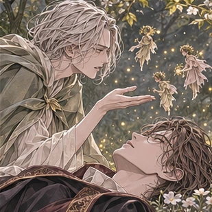
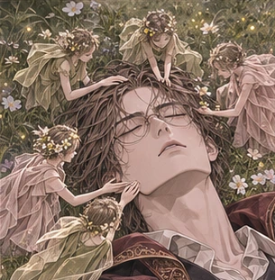
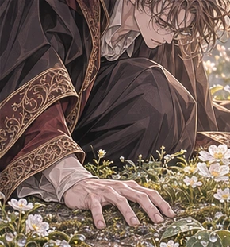
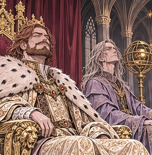
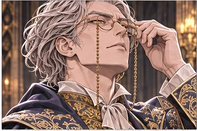

1막 · 꽃이 핀 골짜기
꽃이 핀 골짜기 Anmutige Gegend

꽃이 핀 풀밭에 파우스트가 누워 있었다. 몸은 지칠 대로 지쳤는데 잠은 오지 않았다. 눈을 감아도 얼굴에 들어간 힘이 풀리지 않았다.
그레첸을 감옥에 두고 떠난 뒤 이야기는 이 조용한 골짜기에서 다시 시작됐다. 그사이에 어떤 길을 지나왔는지는 드러나지 않았다. 지금 파우스트에게 필요한 것은 다시 일어날 수 있을 만큼의 휴식이었다.
땅거미가 내려앉자 작은 정령들이 그의 머리맡에 모였다. 그들 곁에는 은빛 머리에 옅은 초록 망토를 두른 아리엘이 있었다. 파우스트를 돌보러 온 정령들을 이끄는 존재였다. 바람에 하프 줄이 울리자 아리엘이 그 소리에 맞춰 노래하기 시작했다.
독일어 원문 · 한국어 번역
1. Akt--Anmutige Gegend
Faust auf blumigen Rasen gebettet, ermüdet, unruhig,
schlafsuchend.
Dämmerung.
Geister-Kreis schwebend bewegt, anmutige kleine Gestalten.
ARIEL.
Gesang von Aolsharfen begleitet.
제1막 · 꽃이 핀 골짜기. 파우스트가 꽃이 핀 풀밭에 누워 있다. 지치고 불안하여 잠을 청한다. 땅거미가 진다. 우아하고 작은 정령들이 허공에서 원을 그리며 움직인다. 아리엘이 바람 하프 소리에 맞춰 노래한다.

아리엘의 노래에는 봄날의 들판이 담겨 있었다. 바람에 흩날리는 꽃잎이 사람들 위로 내려앉고, 풀은 땅 위에 살아 있는 누구에게나 똑같이 푸르게 빛났다.
“꽃잎은 사람을 골라서 떨어지지 않아. 저 푸른 들판도 누구든 볼 수 있지.” 아리엘은 파우스트를 내려다봤다.
독일어 원문 · 한국어 번역
Wenn der Blüten Frühlingsregen
Über alle schwebend sinkt,
Wenn der Felder grüner Segen
Allen Erdgebornen blinkt,봄꽃이 비처럼 모두에게 내려앉고 푸른 들판이 땅에 태어난 모든 이에게 빛날 때,

“우리도 도울 수 있는 곳으로 가는 거야. 좋은 사람이든 나쁜 사람이든, 괴로워하는 모습을 보면 마음이 쓰이니까.”
정령들이 그 말에 귀를 기울였다. 아리엘이 하려는 일은 그가 쉴 수 있게 하는 것이었다. 파우스트가 어떤 사람이든, 지금은 지친 몸으로 잠조차 이루지 못하고 있었다.
독일어 원문 · 한국어 번역
Kleiner Elfen Geistergröße
Eilet, wo sie helfen kann;
Ob er heilig, ob er böse,
Jammert sie der Unglücksmann.
작은 요정들은 너그러운 마음으로 도울 수 있는 곳에 달려간다. 거룩한 사람이든 악한 사람이든, 불행한 이를 가엾게 여긴다.

아리엘은 파우스트의 머리 위를 맴도는 정령들에게 손짓했다.
“여기 있는 너희가 도와줘. 머릿속에서 싸움이 계속되는 것 같아. 마음을 좀 가라앉혀 주자. 자기가 한 일을 떠올릴 때마다 가슴이 찔리는 괴로움도 잠시 내려놓게 해 줘.”
파우스트는 눈을 꼭 감은 채 누워 있었다. 누가 곁에 왔는지 살필 여유조차 없어 보였다.
독일어 원문 · 한국어 번역
Die ihr dies Haupt umschwebt im luft'gen Kreise,
Erzeigt euch hier nach edler Elfen Weise:
Besänftiget des Herzens grimmen Strauß,
Entfernt des Vorwurfs glühend bittre Pfeile,이 머리 위를 공중에서 돌고 있는 너희여, 요정답게 너그러이 행동하여라. 마음속의 거센 싸움을 가라앉히고, 뜨겁고 쓰라린 자책의 화살을 거두어라.

“그가 겪은 끔찍한 일이 계속 떠오르지 않게 해 줘. 밤을 네 때로 나눠서 아침까지 지켜 주는 거야.” 아리엘이 말을 이었다. “우선 머리를 서늘한 데에 받쳐 줘.”
작은 정령들이 풀밭 가까이 내려왔다. 파우스트가 목과 어깨에 주고 있던 힘을 조금씩 뺐다. 지금 당장 일어나 무엇을 해야 한다는 생각에서도 잠깐 벗어날 수 있도록, 정령들은 서두르지 않고 그를 돌봤다.
독일어 원문 · 한국어 번역
Sein Innres reinigt von erlebtem Graus!
Vier sind die Pausen nächtiger Weile;
Nun ohne Säumen füllt sie freundlich aus!
Erst senkt sein Haupt aufs kühle Polster nieder,그가 겪은 끔찍한 일에서 그의 마음을 씻어라. 밤에는 네 차례의 쉼이 있다. 지체하지 말고 그 시간을 다정하게 채워라. 먼저 그의 머리를 서늘한 베개에 내려놓아라.

“이제 레테의 이슬로 씻어 줘.” 아리엘이 말했다. 레테는 그 물을 마시면 지난 기억을 잊는다고 전해지는 강이었다. 여기서는 기억 때문에 괴로워하는 파우스트를 쉬게 해 줄 이슬이었다.
“팔다리가 뻣뻣하게 굳어 있어도 푹 쉬고 나면 다시 움직일 수 있을 거야. 아침을 맞을 힘을 되찾게 해 주자. 그게 우리가 할 일이야.”
꽃잎 끝에서 떨어진 듯한 이슬이 파우스트의 이마에 닿았다.
독일어 원문 · 한국어 번역
Dann badet ihn im Tau aus Lethes Flut!
Gelenk sind bald die krampferstarrten Glieder,
Wenn er gestärkt dem Tag entgegen ruht.
Vollbringt der Elfen schönste Pflicht:그러고 나서 망각의 강 레테에서 가져온 이슬로 그를 씻어라. 기운을 되찾아 날이 밝기까지 쉬고 나면 굳은 팔다리도 곧 부드러워지리라. 요정의 가장 아름다운 의무를 다하여라.

“이 사람이 다시 햇빛 속으로 돌아갈 수 있게.” 아리엘이 마지막 말을 노래에 실었다.
그러자 정령들이 뒤를 이었다. 혼자 부르는 목소리 옆에 다른 목소리가 붙었다. 둘이 함께 부르다가 여럿이 같은 가락을 이어 갔다.
풀밭에는 포근한 바람이 불었다. 꽃향기가 내려앉고 골짜기에는 옅은 안개가 모였다. 정령들의 노래도 그 사이로 부드럽게 퍼졌다.
독일어 원문 · 한국어 번역
Gebt ihn zurück dem heiligen Licht!
CHOR
einzeln, zu zweien und vielen, abwechselnd und gesammelt.
Wenn sich lau die Lüfte füllen
Um den grünumschränkten Plan,
Süße Düfte, Nebelhüllen그를 신성한 빛으로 돌려보내라! 합창. 한 명씩, 둘씩, 여럿이 번갈아 또는 함께 노래한다. 푸른 풀밭 둘레에 포근한 공기가 차오르면, 달콤한 향기와 안개를

저녁 어스름이 풀밭을 덮었다. 정령들은 파우스트가 잠을 깰 만큼 큰 소리를 내지 않고 노래했다.
“이제 편히 쉬어. 어린아이가 안심하고 잠드는 것처럼.”
밤이 되어도 계속 생각하고 후회하느라 쉴 수 없던 사람이었다. 파우스트의 눈꺼풀이 천천히 내려갔다. 얼굴에서 힘이 조금씩 빠졌다.
독일어 원문 · 한국어 번역
Senkt die Dämmerung heran,
Lispelt leise süßen Frieden,
Wiegt das Herz in Kindesruh
Und den Augen dieses Müden저녁 어스름이 내려 보낸다. 달콤한 평화를 속삭이고, 마음을 어린아이처럼 조용히 달래어 지친 이의 눈에

파우스트가 마침내 잠들었다. 눈을 감은 그에게는 낮 동안 보았던 것들이 더 들어오지 않았다. 정령들의 노래는 하루를 그만 끝내도 된다고 달래는 듯했다.
밤하늘에는 별이 하나둘 드러났다. 먼저 눈에 들어온 밝은 별 사이로 작은 별들이 빼곡하게 나타났다.
독일어 원문 · 한국어 번역
Schließt des Tages Pforte zu.
Nacht ist schon hereingesunken,
Schließt sich heilig Stern an Stern;
Große Lichter, kleine Funken낮의 문을 닫아 준다. 밤이 내려앉아 별과 별이 성스레 이어진다. 큰 빛과 작은 불꽃이

어떤 별은 가까운 불꽃처럼 반짝였고, 어떤 별은 멀리서 희미하게 빛났다. 호수에도 그 빛이 비쳤다. 물결이 움직일 때마다 물 위의 별빛이 가늘게 흔들렸다.
파우스트는 그 풍경을 보지 못했다. 그는 깊이 잠들어 있었다. 정령들은 그의 잠이 끊기지 않도록 노래를 이어 갔다.
독일어 원문 · 한국어 번역
Glitzern nah und glänzen fern;
Glitzern hier im See sich spiegelnd,
Glänzen droben klarer Nacht;
Tiefsten Ruhens Glück besiegelnd가까이서 반짝이고 멀리서 빛난다. 호수에 비쳐 반짝이고 맑은 밤하늘에서 빛난다. 가장 깊은 휴식의 평온을 지켜 주며

보름달이 환하게 떠 있었다. 풀밭과 호수, 잠든 파우스트 위로 같은 달빛이 내려왔다.
괴로웠던 시간도, 기뻤던 순간도 지금은 그를 깨우지 못했다. 잠든 동안만큼은 어느 쪽에도 붙들려 있지 않았다.
정령들이 조용히 노래했다. “조금씩 나아질 거야. 다시 기운을 찾을 수 있어.”
독일어 원문 · 한국어 번역
Herrscht des Mondes volle Pracht.
Schon verloschen sind die Stunden,
Hingeschwunden Schmerz und Glück;
Fühl' es vor! Du wirst gesunden;보름달이 환히 빛난다. 지나간 시간은 사그라들고 고통과 기쁨도 자취를 감췄다. 느껴 보라. 너는 회복할 것이다.

“새날이 온다는 걸 믿어 봐.” 정령들의 노래가 이어졌다.
푸른 골짜기 뒤로 언덕이 솟아 있었다. 나무들이 모인 곳에는 그늘이 짙었고, 탁 트인 밭에는 바람이 지나갔다. 밤빛을 받은 곡식 이삭들이 은빛으로 흔들렸다.
독일어 원문 · 한국어 번역
Traue neuem Tagesblick!
Täler grünen, Hügel schwellen,
Buschen sich zu Schattenruh;
Und in schwanken Silberwellen새날의 빛을 믿어라. 골짜기가 푸르고 언덕이 솟아 있으며 숲은 그늘 속에 쉰다. 흔들리는 은빛 물결처럼

이삭은 바람에 쓸렸다가 다시 일어났다. 아직 수확할 때가 되지는 않았지만, 밭의 곡식은 자라고 있었다.
“원하는 게 있다면 저기 밝아 오는 쪽을 봐.” 정령들이 노래했다. “너를 감싼 잠도 이제 가볍게 걷어 낼 수 있어.”
먼 하늘에서 어둠이 조금씩 옅어졌다.
독일어 원문 · 한국어 번역
Wogt die Saat der Ernte zu.
Wunsch um Wünsche zu erlangen
Schaue nach dem Glänze dort!
Leise bist du nur umfangen;곡식이 출렁이며 수확을 향해 무르익는다. 소원을 하나씩 이루고 싶다면 저기 빛나는 곳을 바라보라. 너를 감싼 것은 가볍다.

“잠이라는 껍질을 벗고 일어나. 사람들이 망설이며 돌아다닐 때도 너까지 주저할 필요는 없어.” 정령들의 노래가 파우스트를 깨웠다.
“큰 뜻을 품은 사람이면 해낼 수 있어.” 풀 위에 놓인 파우스트의 손가락이 움직였다. 잠들어 있던 몸에도 조금씩 힘이 돌아왔다.
독일어 원문 · 한국어 번역
Schlaf ist Schale: wirf sie fort!
Säume nicht dich zu erdreisten,
Wenn die Menge zaudernd schweift;
Alles kann der Edle leisten,잠이라는 껍질을 벗어 던져라. 사람들이 망설이며 헤맬 때 과감히 나아가기를 주저하지 마라. 고결한 이는 모든 것을 해낼 수 있다,

“무엇을 해야 할지 알아보고, 기회가 왔을 때 놓치지 않는다면.” 정령들이 노래를 맺었다.
그때 아리엘이 고개를 들었다. 해가 떠오르고 있었다. 사람의 눈에는 빛이 번지는 광경이었지만, 정령들의 귀에는 새날이 태어나는 엄청난 소리가 들렸다.
“들어 봐! 높은 곳에서 몰아치는 저 소리!” 아리엘이 정령들을 불렀다.
독일어 원문 · 한국어 번역
Der versteht und rasch ergreift.
Ungeheures Getöse verkündet das Herannahen der Sonne.
ARIEL.
Horchet! horcht dem Sturm der Hören!
Tönend wird für Geistesohren
Schon der neue Tag geboren.뜻을 알아보고 재빨리 붙잡는 사람이라면. 엄청난 굉음이 해가 가까워 오는 것을 알린다. 아리엘. 들어라, 높은 곳의 폭풍 소리를 들어라! 정령들의 귀에는 새날이 소리와 함께 태어난다.

아리엘에게는 바위로 된 거대한 문이 열리는 듯했다. 덜컹거리는 소리 뒤로 수레바퀴가 요란하게 굴렀다. 태양신 포이보스가 해의 수레를 몰고 오는 것 같은 굉음이었다.
“빛이 저렇게 큰 소리를 내며 오는구나!” 아리엘이 외쳤다. 북을 치고 나팔을 부는 듯한 울림이 골짜기에 가득 찼다.
독일어 원문 · 한국어 번역
Felsentore knarren rasselnd,
Phöbus' Räder rollen prasselnd,
Welch Getöse bringt das Licht!
Es trommetet, es posaunet,바위 문이 요란하게 삐걱이고 태양신 포이보스의 수레바퀴가 요동치며 굴러온다. 빛이 얼마나 큰 굉음을 몰고 오는가! 북과 나팔이 울린다.

정령들은 눈을 깜박이고 몸을 움츠렸다. 소리가 너무 커서 다른 소리를 알아들을 수조차 없었다.
“꽃송이 속으로 들어가!” 아리엘이 손짓했다. “더 깊이 숨어. 거기서 조용히 있어!”
작은 정령들이 꽃잎 사이로 내려갔다. 아리엘도 귀를 가리며 주변을 살폈다.
독일어 원문 · 한국어 번역
Auge blinzt und Ohr erstaunet,
Unerhörtes hört sich nicht.
Schlüpfet zu den Blumenkronen,
Tiefer, tiefer, still zu wohnen,눈은 깜박이고 귀는 놀란다. 너무나 큰 소리는 도리어 들리지 않는다. 꽃송이 속으로 숨어라. 더 깊이, 더 깊이 들어가 조용히 있어라.

“바위틈도 좋아. 잎사귀 아래로! 저 소리를 그대로 맞으면 귀가 멀 거야!” 아리엘의 외침이 이어졌다.
정령들이 숨는 동안 파우스트는 눈을 떴다. 어젯밤과 달리 가슴이 힘차게 뛰었다. 깊게 숨을 들이마셔도 답답하지 않았다. 그는 부드럽게 밝아 오는 하늘을 바라봤다.
독일어 원문 · 한국어 번역
In die Felsen, unters Laub!
Trifft es euch, so seid ihr taub.
FAUST.
Des Lebens Pulse schlagen frisch lebendig,
Ätherische Dämmerung milde zu begrüßen.바위틈으로, 잎사귀 밑으로! 그 소리를 그대로 맞으면 귀가 멀리라. 파우스트. 생명의 맥박이 새롭게 힘차게 뛰며, 맑고 부드러운 여명을 맞이한다.

파우스트는 풀밭에 손바닥을 짚었다. 차갑고 촉촉한 흙이 손에 닿았다. 밤새 자신은 아무것도 하지 못했지만, 땅은 제자리에 있었고 식물들은 아침을 맞고 있었다.
“너는 밤새 그대로 있었구나.” 파우스트가 발밑을 내려다보며 말했다. 주위의 생기를 느끼자 그도 가만히 누워 있고 싶지 않았다. 다시 일어나 살아 보고 싶은 마음이 들었다.
독일어 원문 · 한국어 번역
Du, Erde, warst auch diese Nacht beständig
Und atmest neu erquickt zu meinen Füßen,
Beginnest schon mit Lust mich zu umgeben.
Du regst und rührst ein kräftiges Beschließen,대지여, 너는 이 밤에도 한결같았고, 새로 기운을 얻어 내 발밑에서 숨 쉰다. 너는 벌써 기쁨으로 나를 감싸고, 내 안에 굳은 결심을 일깨운다.
더 높은 삶을 향해 계속 나아가고 싶다는 생각이 파우스트에게 돌아왔다. 그가 원하는 것은 그저 몸을 일으키는 데서 끝나지 않았다.
숲에서는 갖가지 생명이 소리를 냈다. 새벽빛 속에서 나무와 골짜기의 모양이 드러났다. 낮은 곳마다 안개가 길게 누워 있어, 골짜기와 골짜기가 흰 띠로 이어진 것 같았다.
독일어 원문 · 한국어 번역
Zum höchsten Dasein immer fortzustreben.--
In Dämmerschein liegt schon die Welt erschlossen,
Der Wald ertönt von tausendstimmigem Leben,
Tal aus Tal ein ist Nebelstreif ergossen;더 높은 삶을 향해 계속 나아가겠다는 결심을. 여명의 빛 속에 세상이 벌써 열려 있고, 숲은 수많은 생명의 소리로 울린다. 골짜기에서 골짜기로 안개가 띠처럼 퍼진다.

하늘이 맑아지자 빛이 안개 낀 골짜기 깊은 곳까지 내려갔다. 어둠 속에 잠겨 보이지 않던 가지들이 하나씩 모습을 드러냈다.
파우스트의 눈에는 나무들이 이제 막 잠에서 깨어난 것처럼 보였다. 짙은 그늘 안에서 서로 구별되지 않던 잎과 꽃에도 저마다의 색이 돌아왔다.
독일어 원문 · 한국어 번역
Doch senkt sich Himmelsklarheit in die Tiefen,
Und Zweig' und Äste, frisch erquickt, entsprossen
Dem duft'gen Abgrund, wo versenkt sie schliefen.
Auch Färb' an Farbe klärt sich los vom Grunde,그러나 맑은 하늘빛이 골짜기 깊은 곳까지 내려가고, 그 향기로운 깊은 곳에 묻혀 잠들었던 잔가지와 큰 가지가 새 기운을 얻어 돋아난다. 땅에서는 색이 하나씩 또렷해진다.
꽃과 잎에 맺힌 이슬이 잘게 떨렸다. 물방울이 빛을 받다가 아래로 떨어졌다. 파우스트는 눈앞의 풍경을 천천히 둘러봤다. 사방이 생기로 가득해 낙원에 들어온 것 같았다.
“위를 보자.” 그가 고개를 들었다. 거대한 산봉우리들은 벌써 아침빛을 받고 있었다. 골짜기가 어두울 때 저 높은 곳에는 먼저 해가 닿았던 것이다.
독일어 원문 · 한국어 번역
Wo Blunr und Blatt von Zitterperle triefen--
Ein Paradies wird um mich her die Runde.
Hinaufgeschaut!--Der Berge Gipfelriesen
Verkünden schon die feierlichste Stunde;꽃과 잎에는 떨리는 이슬이 맺혀 뚝뚝 떨어지고, 내 둘레는 온통 낙원이 된다. 자, 위를 보라! 거대한 산봉우리들이 가장 장엄한 시간을 알린다.

높은 봉우리부터 시작한 빛이 아래쪽으로 내려왔다. 산비탈의 푸른 풀밭이 밝아지고, 흐릿하던 능선도 또렷해졌다.
파우스트는 그 변화를 따라 시선을 움직였다. 아직 자기 앞까지 오지 않은 빛이 위쪽에서는 벌써 산의 색을 바꾸고 있었다.
독일어 원문 · 한국어 번역
Sie dürfen früh des ewigen Lichts genießen,
Das später sich zu uns hernieder wendet.
Jetzt zu der Alpe grüngesenkten Wiesen
Wird neuer Glanz und Deutlichkeit gespendet,저 높은 곳은 영원한 빛을 먼저 누린다. 그 빛은 뒤이어 우리에게로 내려온다. 이제 높은 산비탈의 푸른 풀밭에도 새 광채가 비쳐 모습이 또렷해진다.

빛은 한 층씩 아래로 내려왔다. 마침내 산 너머에서 해가 모습을 드러냈다.
파우스트는 곧바로 소매를 들어 눈을 가렸다. 조금 전까지 그렇게 보고 싶던 해인데, 막상 똑바로 바라보니 눈이 아팠다. 견뎌 보려던 그는 결국 고개를 돌렸다.
독일어 원문 · 한국어 번역
Und stufenweis herab ist es gelungen--
Sie tritt hervor!--und, leider schon geblendet,
Kehr' ich mich weg, vom Augenschmerz durchdrungen.
빛이 한 층씩 아래로 내려오는 데까지 이르렀다. 드디어 해가 나타난다! 그러나 나는 벌써 눈이 부셔, 눈을 찌르는 통증에 고개를 돌린다.

눈부심을 피하고 나자 파우스트는 자신이 바라는 것들을 떠올렸다. 간절히 원하던 것을 얻기 바로 직전까지 가서, 드디어 길이 열렸다고 느끼는 순간이 있다.
[독백: 파우스트] 문만 열리면 다 괜찮을 줄 알았는데. 막상 그 안을 보게 되면 감당할 수 있을까.
그림 속 환한 문은 그가 떠올린 비유였다. 골짜기에 실제 문이 생긴 것은 아니었다. 눈앞에 열린 기회를 보면서도 빛 때문에 물러서야 했던 지금의 경험이 그에게 그 생각을 하게 했다.
독일어 원문 · 한국어 번역
So ist es also, wenn ein sehnend Hoffen
Dem höchsten Wunsch sich traulich zugerungen,
Erfüllungspforten findet flügeloffen;
Nun aber bricht aus jenen ewigen Gründen간절한 바람이 가장 큰 소원을 향해 가까스로 다가가, 소원이 이루어지는 문이 활짝 열렸을 때도 이와 같다. 그런데 그 영원한 깊은 곳에서

작은 횃불 하나를 켜고 싶었을 뿐인데, 거대한 불바다가 주위를 에워싼다면 어떨까. 파우스트는 바라는 것을 이루는 일도 그와 비슷할 수 있다고 생각했다. 얻고 싶던 힘이 너무 커서 오히려 자신이 버티지 못하는 것이다.
그 뜨거움이 사랑인지 미움인지도 쉽게 가릴 수 없었다. 한쪽으로만 이름 붙이기에는 마음이 너무 거세게 흔들렸다. 그가 떠올리는 불바다는 바로 그 감당하기 어려운 상태였다.
독일어 원문 · 한국어 번역
Ein Flammenübermaß--wir stehn betroffen.
Des Lebens Fackel wollten wir entzünden,
Ein Feuermeer umschlingt uns, welch ein Feuer!
Ist's Lieb', ist's Haß, die glühend uns umwinden,감당 못 할 불길이 터져 나와 우리는 놀라 멈춰 선다. 삶의 횃불을 켜려 했는데 불바다가 우리를 에워싼다. 이 무슨 불길인가! 우리를 뜨겁게 휘감는 것은 사랑인가, 증오인가?

기쁨이 밀려왔다가 고통으로 바뀌고, 고통 속에서 다시 기쁨을 찾게 된다. 그런 일을 겪고 나면 사람은 발밑의 땅을 보며, 싱그러운 풀과 나무 사이로 몸을 피하고 싶어질 수도 있었다.
“그래. 해는 등 뒤에 두자.” 파우스트가 말했다. 그는 눈을 찌르는 빛을 계속 바라보는 대신 몸을 돌렸다. 이제 다른 풍경이 눈앞에 들어왔다.
독일어 원문 · 한국어 번역
Mit Schmerz-und Freuden wechselnd ungeheuer,
So daß wir wieder nach der Erde blicken,
Zu bergen uns in jugendlichstem Schleier?
So bleibe denn die Sonne mir im Rücken!감당하기 어려운 고통과 기쁨이 번갈아 밀려오니, 우리는 다시 땅을 바라보며 그 싱그러운 장막에 몸을 숨기려는 것일까? 그러니 해는 내 등 뒤에 있어라!

바위 절벽 사이로 폭포가 쏟아지고 있었다. 파우스트는 물줄기를 따라 시선을 내렸다. 물이 바위턱에 부딪힐 때마다 천 갈래로 갈라지고, 그 아래에서는 다시 수만 갈래가 되어 흩어졌다.
바위에 가로막힐 때마다 물의 모습이 달라졌다. 파우스트는 그 변화에서 눈을 떼지 못했다. 보기 괴로웠던 태양과 달리, 이 풍경은 볼수록 마음을 끌었다.
독일어 원문 · 한국어 번역
Der Wassersturz, das Felsenriff durchbrausend,
Ihn schau' ich an mit wachsendem Entzücken.
Von Sturz zu Sturze wälzt er jetzt in tausend,
Dann abertausend Strömen sich ergießend,바위 절벽을 가르며 쏟아지는 폭포를 나는 갈수록 기쁘게 바라본다. 물은 단에서 단으로 굴러 천 갈래, 다시 수만 갈래로 나뉘어 쏟아진다.
거센 물줄기가 아래로 떨어지자 물보라가 위로 솟구쳤다. 그 위에 여러 빛깔의 무지개가 나타났다.
파우스트가 바라보는 동안에도 무지개는 그대로 있지 않았다. 선명하게 걸렸다가 물안개가 흩어지면 흐려졌다. 다시 물방울이 빛을 받으면 색이 또렷하게 돌아왔다.
독일어 원문 · 한국어 번역
Hoch in die Lüfte Schaum an Schäume sausend.
Allein wie herrlich diesem Sturm entsprießend.
Wölbt sich des bunten Bogens Wechseldauer,
Bald rein gezeichnet, bald in Luft zerfließend,물보라가 물보라를 타고 높이 솟구친다. 그런데 그 거센 물살 위에서 얼마나 아름답게 피어나는가. 여러 빛깔의 무지개가 걸려, 또렷한 모습을 드러냈다가 허공에 녹아든다.

서늘한 물안개가 둘레로 퍼졌다. 파우스트는 그 속에서 무지개를 계속 바라봤다. 흩어졌다가 다시 모습을 드러내는 빛깔이, 무언가를 이루려고 끊임없이 애쓰는 사람을 닮았다고 느꼈다.
태양 자체를 마주했을 때는 눈이 아파 돌아서야 했다. 그런데 그 빛이 물방울에 비쳐 여러 색으로 나뉘자 오래 바라볼 수 있었다. 그에게는 그것이 살아가는 일과도 닮아 보였다. 바라는 것 전부를 한꺼번에 붙잡으려 하면 감당하기 어렵지만, 눈앞의 세계에서 조금씩 마주하는 모습은 받아들일 수 있었다.
파우스트는 눈을 찌푸리지 않고 폭포를 바라봤다. 해는 여전히 등 뒤에서 빛나고 있었다.
독일어 원문 · 한국어 번역
Umher verbreitend duftig kühle Schauer.
Der spiegelt ab das menschliche Bestreben.
Ihm sinne nach und du begreifst genauer:
Am farbigen Abglanz haben wir das Leben.
무지개는 둘레에 향기롭고 서늘한 물안개를 흩뿌린다. 그것은 인간이 애쓰며 나아가는 모습을 비춘다. 곰곰이 생각하면 더 또렷이 깨달으리라. 우리는 빛이 여러 색으로 비친 곳에서 삶을 얻는다.
황제의 궁정 Kaiserliche Pfalz
KAISERLICHE PFALZ
SAAL DES THRONES
Staatsrat in Erwartung des Kaisers.
Trompeten.
황제의 궁정. 알현실. 국정을 의논하는 대신들이 황제를 기다린다. 나팔 소리.

Hofgesinde aller Art, prächtig gekleidet, tritt vor.
Der Kaiser gelangt auf den Thron, zu seiner Rechten
der Astrolog.
온갖 궁정 사람들이 화려하게 차려입고 앞으로 나온다. 황제가 왕좌에 오르고, 오른편에는 점성술사가 자리한다.

KAISER.
Ich grüße die Getreuen, Lieben,
Versammelt aus der Näh und Weite.--
Den Weisen seh' ich mir zur Seite,
Allein wo ist der Narr geblieben?
황제. 가까운 곳과 먼 곳에서 모인 충직하고 사랑하는 이들에게 인사를 전한다. 내 곁에 현자는 보이는데, 광대는 어디로 갔느냐?

JUNKER.
Gleich hinter deiner Mantelschleppe
Stürzt' er zusammen auf der Treppe,
Man trug hinweg das Fettgewicht;
Tot oder trunken, weiß man nicht.
젊은 궁정 신하. 폐하의 망토 자락 바로 뒤에서 그가 계단에 쓰러졌습니다. 그 육중한 몸을 사람들이 들어 옮겼습니다. 죽었는지 술에 취했는지는 모릅니다.

ZWEITER JUNKER.
Sogleich mit wunderbarer Schnelle
Drängt sich ein andrer an die Stelle.
Gar köstlich ist er aufgeputzt,두 번째 젊은 궁정 신하. 곧바로 다른 자가 놀라울 정도로 빠르게 그 자리를 비집고 들어옵니다. 옷차림은 무척 화려하나 우스꽝스러워 다들 멈칫합니다.

Doch fratzenhaft, daß jeder stutzt.
Die Wache hält ihm an der Schwelle
Kreuzweis die Hellebarden vor--
Da ist er doch, der kühne Tor!
문턱에서 경비병들이 도끼창을 엇갈려 그를 막습니다. 그런데도 저기 있군요, 저 대담한 광대가!

MEPHISTOPHELES:
am Throne kniend.
Was ist verwünscht und stets willkommen?
Was ist ersehnt und stets verjagt?메피스토가 왕좌 앞에 무릎을 꿇는다. 저주받으면서도 늘 환영받는 것은 무엇입니까? 기다려지면서도 늘 쫓겨나는 것은 무엇입니까?

Was immerfort in Schutz genommen?
Was hart gescholten und verklagt?
Wen darfst du nicht herbeiberufen?
Wen höret jeder gern genannt?
Was naht sich deines Thrones Stufen?
Was hat sich selbst hinweggebannt?늘 두둔받는 것은 무엇입니까? 심하게 꾸짖고 고발하는 것은 무엇입니까? 직접 불러들여서는 안 되는 이는 누구입니까? 누구나 그 이름을 듣기 좋아하는 이는 누구입니까? 왕좌의 계단에 다가온 것은 무엇입니까? 스스로 자취를 감춘 것은 무엇입니까?

KAISER:
Für diesmal spare deine Worte!
Hier sind die Rätsel nicht am Orte,
Das ist die Sache dieser Herrn.--
Da löse du! das hört' ich gern.
Mein alter Narr ging, fürcht' ich, weit ins Weite;
Nimm seinen Platz und komm an meine Seite.황제. 이번엔 말 좀 아껴라! 여기서 수수께끼를 낼 때가 아니다. 그건 이분들이 다룰 일이니, 네가 한번 풀어 봐라! 그 답은 듣고 싶구나. 예전 광대는 아무래도 멀리 떠난 듯하다. 네가 그 자리를 맡고 내 곁으로 와라.

GEMURMEL DER MENGE:
Ein neuer Narr--Zu neuer Pein--
Wo kommt er her?--Wie kam er ein?--
Der alte fiel--Der hat vertan--
Es war ein Faß--Nun ist's ein Span--사람들이 웅성거린다. 새 광대라니, 새 골칫거리가 되겠군. 어디서 온 거지? 어떻게 들어왔어? 옛 광대는 쓰러졌고, 이제 끝장이군. 전에는 술통이더니 이번에는 나뭇조각이네.

KAISER:
Und also, ihr Getreuen, Lieben,
Willkommen aus der Näh' und Ferne!
Ihr sammelt euch mit günstigem Sterne,
Da droben ist uns Glück und Heil geschrieben.
Doch sagt, warum in diesen Tagen,
Wo wir der Sorgen uns entschlagen,
Schönbärte mummenschänzlich tragen
Und Heitres nur genießen wollten,
Warum wir uns ratschlagend quälen sollten?
Doch weil ihr meint, es ging' nicht anders an,
Geschehen ist's, so sei's getan.황제. 가까이서도 멀리서도 온 충직하고 사랑하는 이들을 환영한다. 길한 별 아래 모였으니 하늘에는 행운과 복이 적혀 있다. 그런데 근심을 내려놓고 우스꽝스러운 가면을 쓰고 즐기려던 이때, 어째서 머리를 싸매고 의논해야 하는가? 달리 도리가 없다고들 하니, 기왕 모인 김에 해 보자.

KANZLER:
Die höchste Tugend, wie ein Heiligenschein,
Umgibt des Kaisers Haupt; nur er allein
Vermag sie gültig auszuüben:
Gerechtigkeit!--Was alle Menschen lieben,
Was alle fordern, wünschen, schwer entbehren,
Es liegt an ihm, dem Volk es zu gewähren.
Doch ach! Was hilft dem Menschengeist Verstand,
Dem Herzen Güte, Willigkeit der Hand,
Wenn's fieberhaft durchaus im Staate wütet
Und übel sich in übeln überbrütet?재상. 가장 높은 덕목이 성스러운 빛처럼 황제의 머리 위를 감쌉니다. 오직 황제만이 그것을 제대로 펼칠 수 있습니다. 바로 정의입니다. 모두가 사랑하고 요구하며 바라 마지않는 정의를 백성에게 내리는 일은 폐하에게 달려 있습니다. 그러나 나라 전체가 열병처럼 들끓고 잘못이 또 다른 잘못을 낳는다면, 지혜와 선한 마음과 기꺼이 일하려는 손이 무슨 소용이겠습니까?

Wer schaut hinab von diesem hohen Raum
Ins weite Reich, ihm scheint's ein schwerer Traum,
Wo Mißgestalt in Mißgestalten schaltet,
Das Ungesetz gesetzlich überwaltet
Und eine Welt des Irrtums sich entfaltet.
Der raubt sich Herden, der ein Weib,
Kelch, Kreuz und Leuchter vom Altare,
Berühmt sich dessen manche Jahre
Mit heiler Haut, mit unverletztem Leib.이 높은 곳에서 넓은 제국을 내려다보면 무거운 악몽과도 같습니다. 온갖 흉측한 일이 판을 치고, 무법이 법인 양 군림하며, 잘못된 세상이 펼쳐집니다. 누구는 가축 떼를, 누구는 여인을, 또 누구는 제단에서 성배와 십자가와 촛대를 빼앗습니다. 그러고도 다친 곳 하나 없이 몇 해씩 그 일을 자랑합니다.

Jetzt drängen Kläger sich zur Halle,
Der Richter prunkt auf hohem Pfühl,
Indessen wogt in grimmigem Schwalle
Des Aufruhrs wachsendes Gewühl.
Der darf auf Schand' und Frevel pochen,
Der auf Mitschuldigste sich stützt,
Und: Schuldig! hörst du ausgesprochen,
Wo Unschuld nur sich selber schützt.이제 억울함을 호소하는 이들이 법정에 몰려듭니다. 재판관은 높은 자리에 앉아 위세를 부리고, 그 사이 격렬한 소요는 점점 커집니다. 누구는 저지른 파렴치한 짓으로 큰소리치고, 누구는 함께 죄를 지은 자들에게 기대지요. 죄 없는 사람이 자신을 지키려는 것뿐인 자리에서 ‘유죄!’라는 소리가 들립니다.

So will sich alle Welt zerstückeln,
Vernichtigen, was sich gebührt;
Wie soll sich da der Sinn entwickeln,
Der einzig uns zum Rechten führt?
Zuletzt ein wohlgesinnter Mann
Neigt sich dem Schmeichler, dem Bestecher,
Ein Richter, der nicht strafen kann,
Gesellt sich endlich zum Verbrecher.그리하여 세상은 갈기갈기 찢어지고 지켜야 할 것은 무너집니다. 우리를 올바른 길로 이끌 분별이 어찌 자라겠습니까? 마침내 뜻이 선한 사람도 아첨꾼과 뇌물 주는 자에게 넘어가고, 죄에 벌을 줄 수 없는 재판관은 끝내 범죄자의 편이 됩니다.

Ich malte schwarz, doch dichtern Flor
Zög' ich dem Bilde lieber vor.
Entschlüsse sind nicht zu vermeiden;
Wenn alle schädigen, alle leiden,
Geht selbst die Majestät zu Raub.어둡게 그려 말씀드렸습니다만, 차라리 더 두꺼운 천으로 이 그림을 덮어 버리고 싶습니다. 이제 결단을 피할 수 없습니다. 모두가 서로에게 해를 끼쳐 모두가 고통받으면 황제의 권위조차 약탈당합니다.
대신들의 보고와 메피스토의 제안

HEERMEISTER:
Wie tobt's in diesen wilden Tagen!
Ein jeder schlägt und wird erschlagen,
Und fürs Kommando bleibt man taub.총사령관. 이 어지러운 나날에 얼마나 거칠게 날뛰는지요! 저마다 남을 치고 또 쓰러지며, 명령에는 귀를 닫습니다.

Der Bürger hinter seinen Mauern,
Der Ritter auf dem Felsennest
Verschwuren sich, uns auszudauern,
Und halten ihre Kräfte fest.시민은 성벽 뒤에, 기사는 바위 위 요새에 틀어박혔습니다. 우리보다 오래 버티겠다고 굳게 맹세하고 제 힘을 비축합니다.

Der Mietsoldat wird ungeduldig,
Mit Ungestüm verlangt er seinen Lohn,
Und wären wir ihm nichts mehr schuldig,
Er liefe ganz und gar davon.용병은 참을성을 잃고 거칠게 봉급을 요구합니다. 우리가 줄 돈이 남아 있지 않다면 벌써 아주 달아났을 것입니다.

Verbiete wer, was alle wollten,
Der hat ins Wespennest gestört;
Das Reich, das sie beschützen sollten,
Es liegt geplündert und verheert.
Man läßt ihr Toben wütend hausen,
Schon ist die halbe Welt vertan;
Es sind noch Könige da draußen,
Doch keiner denkt, es ging' ihn irgend an.
모두가 하고 싶어 하는 일을 누가 금하기라도 하면 벌집을 건드린 꼴입니다. 그들이 지켜야 할 제국은 약탈당하고 황폐해졌습니다. 그들이 마음껏 난동을 부리게 내버려 두니 벌써 세상의 절반이 망했습니다. 밖에는 아직 왕들이 있지만 누구도 자기 일이라고 생각하지 않습니다.

SCHATZMEISTER:
Wer wird auf Bundsgenossen pochen!
Subsidien, die man uns versprochen,
Wie Röhrenwasser bleiben aus.재무관. 누가 동맹국을 믿겠습니까! 약속한 지원금은 관에서 나와야 할 물처럼 끊겨 버렸습니다.

Auch, Herr, in deinen weiten Staaten
An wen ist der Besitz geraten?
Wohin man kommt, da hält ein Neuer Haus,
Und unabhängig will er leben,
Zusehen muß man, wie er's treibt;
Wir haben so viel Rechte hingegeben,
Daß uns auf nichts ein Recht mehr übrigbleibt.폐하의 드넓은 영토에서도 재산이 누구 손에 넘어갔습니까? 가는 곳마다 새 주인이 들어앉아 제멋대로 독립해 살려 합니다. 우리는 그들이 하는 짓을 지켜봐야만 합니다. 권리를 너무 많이 내주어 이제 우리에게는 아무 권리도 남지 않았습니다.

Auch auf Parteien, wie sie heißen,
Ist heutzutage kein Verlaß;
Sie mögen schelten oder preisen,
Gleichgültig wurden Lieb' und Haß.
Die Ghibellinen wie die Guelfen
Verbergen sich, um auszuruhn;
Wer jetzt will seinem Nachbar helfen?
Ein jeder hat für sich zu tun.오늘날에는 이름이 무엇이든 어느 파벌도 믿을 수 없습니다. 그들이 비난하든 칭찬하든, 미워하든 좋아하든 이제 다 소용없습니다. 기벨린파도 겔프파도 숨어 쉽니다. 지금 누가 이웃을 돕겠습니까? 저마다 제 일로 바쁩니다.

Die Goldespforten sind verrammelt,
Ein jeder kratzt und scharrt und sammelt,
Und unsre Kassen bleiben leer.
금고 문은 단단히 막혔습니다. 저마다 긁고 파서 자기 몫을 모으는데, 우리 금고는 비어 있습니다.

MARSCHALK:
Welch Unheil muß auch ich erfahren!
Wir wollen alle Tage sparen
Und brauchen alle Tage mehr,
Und täglich wächst mir neue Pein.
Den Köchen tut kein Mangel wehe;
Wildschweine, Hirsche, Hasen, Rehe,
Welschhühner, Hühner, Gäns' und Enten,
Die Deputate, sichre Renten,
Sie gehen noch so ziemlich ein.궁정 살림을 맡은 대신. 제게도 재앙입니다! 날마다 아끼려 하지만 날마다 더 많이 필요해 근심이 늘어납니다. 요리사들에게는 부족한 것이 없습니다. 멧돼지, 사슴, 산토끼, 노루, 칠면조, 닭, 거위, 오리, 정기 현물과 확실한 수입은 아직 그럭저럭 들어옵니다.

Jedoch am Ende fehlt's an Wein.
Wenn sonst im Keller Faß an Faß sich häufte,
Der besten Berg' und Jahresläufte,
So schlürft unendliches Gesäufte
Der edlen Herrn den letzten Tropfen aus.하지만 끝내 포도주가 모자랍니다. 전에는 좋은 산지에서 좋은 해에 난 술을 통마다 지하실에 쌓아 두었건만, 귀족들의 끝없는 술판이 마지막 한 방울까지 마셔 버립니다.

Der Stadtrat muß sein Lager auch verzapfen,
Man greift zu Humpen, greift zu Napfen,
Und unterm Tische liegt der Schmaus.시의회도 자기 저장고의 술을 내놓아야 합니다. 사람들은 큰 잔과 사발을 집어 들고, 잔칫상 음식은 탁자 아래에 떨어집니다.

Nun soll ich zahlen, alle lohnen;
Der Jude wird mich nicht verschonen,
Der schafft Antizipationen,
Die speisen Jahr um Jahr voraus.
Die Schweine kommen nicht zu Fette,
Verpfändet ist der Pfühl im Bette,
Und auf den Tisch kommt vorgegessen Brot.
이제 값을 치르고 품삯도 모두 줘야 합니다. 돈을 빌려준 유대인 채권자는 봐주지 않고, 앞으로 들어올 수입을 당겨 잡아 우리가 해마다 미리 써 버리게 합니다. 돼지는 살이 찌기도 전에 쓰이고, 침대의 베개는 담보로 잡혔으며, 식탁에는 이미 당겨 쓴 몫으로 마련한 빵이 오릅니다.

KAISER:
Sag, weißt du Narr nicht auch noch eine Not?
황제. 말해 보아라, 광대야. 너도 무슨 걱정거리를 하나 더 아느냐?

MEPHISTOPHELES:
Ich? Keineswegs. Den Glanz umher zu schauen,
Dich und die Deinen!--Mangelte Vertrauen,
Wo Majestät unweigerlich gebeut,
Bereite Macht Feindseliges zerstreut?
Wo guter Wille, kräftig durch Verstand,
Und Tätigkeit, vielfältige, zur Hand?
Was könnte da zum Unheil sich vereinen,
Zur Finsternis, wo solche Sterne scheinen?
메피스토. 제가요? 전혀요. 주위를 보십시오, 이 화려함과 폐하와 신하들을요! 황제께서 거침없이 명하고 군대가 적의를 물리치며, 선의에 지혜가 더해지고 온갖 능력이 제 몫을 하는 곳에서 어찌 믿음이 부족하겠습니까? 이런 별들이 빛나는데 무슨 불행이 모이고 어둠이 생기겠습니까?

GEMURMEL:
Das ist ein Schalk--Der's wohl versteht--
Er lügt sich ein--So lang' es geht--
Ich weiß schon--Was dahinter steckt--
Und was denn weiter?--Ein Projekt--
웅성거림. 능청스러운 자군. 잘 아는 모양이지. 거짓말로 제자리를 얻는군. 통할 때까진 그러겠지. 속셈은 벌써 알겠어. 그다음 뭔데? 무슨 계획이 있겠지.

MEPHISTOPHELES:
Wo fehlt's nicht irgendwo auf dieser Welt?
Dem dies, dem das, hier aber fehlt das Geld.
Vom Estrich zwar ist es nicht aufzuraffen;
Doch Weisheit weiß das Tiefste herzuschaffen.
In Bergesadern, Mauergründen
Ist Gold gemünzt und ungemünzt zu finden,
Und fragt ihr mich, wer es zutage schafft:
Begabten Manns Natur--und Geisteskraft.메피스토. 세상 어디에 부족한 것이 없겠습니까? 누구는 이것, 누구는 저것이 부족하지만 여기서는 돈이 부족합니다. 바닥에서 주울 수는 없어도 지혜가 있으면 가장 깊은 곳에서도 가져올 수 있습니다. 산의 광맥과 담 밑의 기초에는 주화로 찍은 금도, 찍지 않은 금도 있습니다. 누가 그것을 세상에 꺼내 놓느냐고요? 재능 있는 사람의 타고난 힘과 정신의 힘이지요.
한국어 번역은 독일어 원문에 대응하는 자동 번역 초안입니다.
KANZLER:
Natur und Geist--so spricht man nicht zu Christen.
Deshalb verbrennt man Atheisten,
Weil solche Reden höchst gefährlich sind.
Natur ist Sünde, Geist ist Teufel,재상. 자연과 정신이라니, 그리스도인에게 그렇게 말하는 법은 없소. 그런 말은 몹시 위험하기에 무신론자들을 불태우는 것이오. 자연은 죄이고 정신은 악마요,
Sie hegen zwischen sich den Zweifel,
Ihr mißgestaltet Zwitterkind.
Uns nicht so!--Kaisers alten Landen
Sind zwei Geschlechter nur entstanden,그들 사이에는 의심이 있고, 당신은 변형된 자웅동체 아이입니다. 우리에게는 그렇지 않습니다!-카이저의 옛 땅 만약 성별이 두 개만 생긴다면,
Sie stützen würdig seinen Thron:
Die Heiligen sind es und die Ritter;
Sie stehen jedem Ungewitter
Und nehmen Kirch' und Staat zum Lohn.그들은 그의 왕좌를 합당하게 지지합니다: 그것은 성자들과 기사들이다. 그들은 어떤 폭풍우에도 견딜 수 있다 그리고 교회와 국가를 보상으로 삼으십시오.
Dem Pöbelsinn verworrner Geister
Entwickelt sich ein Widerstand:
Die Ketzer sind's! die Hexenmeister!
Und sie verderben Stadt und Land.군중의 혼란스러운 마음에 저항이 발생하는 경우: 이단자들이에요! 마법사들! 그리고 그들은 도시와 나라를 망쳤습니다.
Die willst du nun mit frechen Scherzen
In diese hohen Kreise schwärzen;
Ihr hegt euch an verderbtem Herzen,
Dem Narren sind sie nah verwandt.이제 넌 건방진 농담을 원해 이 높은 원으로 검게 변하십시오. 당신은 부패한 마음을 소중히 여기시며, 그들은 바보와 밀접한 관련이 있습니다.
MEPHISTOPHELES:
Daran erkenn' ich den gelehrten Herrn!
Was ihr nicht tastet, steht euch meilenfern,
Was ihr nicht faßt, das fehlt euch ganz und gar,
Was ihr nicht rechnet, glaubt ihr, sei nicht wahr,메피스토펠레스: 그것이 내가 배운 신사를 알아보는 방법입니다! 당신이 만지지 않는 것은 당신에게서 몇 마일 떨어져 있습니다. 당신이 이해하지 못하는 것은 완전히 놓치는 것입니다. 당신이 기대하지 않고 믿는 것은 사실이 아니며,
Was ihr nicht wägt, hat für euch kein Gewicht,
Was ihr nicht münzt, das, meint ihr, gelte nicht.
KAISER:
Dadurch sind unsre Mängel nicht erledigt,
Was willst du jetzt mit deiner Fastenpredigt?당신이 무게를 달지 않는 것은 당신에게 무게가 없습니다. 당신이 동전을 만들지 않는 것은 중요하지 않다고 생각합니다. 황제: 이것은 우리의 단점을 제거하지 않습니다. 지금 사순절 설교에서 무엇을 원하시나요?
Ich habe satt das ewige Wie und Wenn;
Es fehlt an Geld, nun gut, so schaff es denn.
MEPHISTOPHELES:
Ich schaffe, was ihr wollt, und schaffe mehr;
Zwar ist es leicht, doch ist das Leichte schwer;나는 끝없는 방법과 만약에 지쳤습니다. 돈이 부족하니 관리하세요. 메피스토펠레스: 나는 당신이 원하는 것을 창조하고 더 많은 것을 창조합니다. 참으로 쉽지만 쉬운 일은 어렵다.
Es liegt schon da, doch um es zu erlangen,
Das ist die Kunst, wer weiß es anzufangen?
Bedenkt doch nur: in jenen Schreckensläuften,
Wo Menschenfluten Land und Volk ersäuften,이미 거기에 있지만 그것을 얻으려면 그게 예술인데, 어떻게 시작해야 할지 누가 알겠어요? 생각해 보세요. 테러가 벌어지는 동안, 인간의 홍수로 땅과 사람들이 익사한 곳,
Wie der und der, so sehr es ihn erschreckte,
Sein Liebstes da--und dortwohin versteckte.
So war's von je in mächtiger Römer Zeit,
Und so fortan, bis gestern, ja bis heut.그 사람이 겁을 먹은 만큼, 이러저러하게, 그의 사랑하는 사람은 여기저기에 숨어있었습니다. 강력한 로마 시대부터 그랬습니다. 그럼 지금부터 어제까지, 그래 오늘까지.
Das alles liegt im Boden still begraben,
Der Boden ist des Kaisers, der soll's haben.
SCHATZMEISTER:
Für einen Narren spricht er gar nicht schlecht,
Das ist fürwahr des alten Kaisers Recht.이 모든 것은 땅 속에 조용히 묻혀 있다. 땅은 황제의 것이니 그가 차지하리라. 재무: 바보치고는 전혀 나쁜 말을 하지 않고, 이것은 진실로 옛 황제의 권리입니다.
KANZLER:
Der Satan legt euch goldgewirkte Schlingen:
Es geht nicht zu mit frommen rechten Dingen.
MARSCHALK:
Schafft' er uns nur zu Hof willkommne Gaben,
Ich wollte gern ein bißchen Unrecht haben.총리: 사탄은 당신을 위해 금 올무를 놓습니다. 경건하고 의로운 일을 하는 것은 불가능합니다. 마샬크: 그가 법정에서 우리에게 환영 선물을 줬다면, 나는 조금 틀리고 싶었다.
HEERMEISTER:
Der Narr ist klug, verspricht, was jedem frommt;
Fragt der Soldat doch nicht, woher es kommt.
MEPHISTOPHELES:
Und glaubt ihr euch vielleicht durch mich betrogen,
Hier steht ein Mann! da, fragt den Astrologen!아미 마스터: 어리석은 자는 영리하여 모든 사람에게 좋은 것을 약속합니다. 군인은 그것이 어디서 오는지 묻지 않습니다. 메피스토펠레스: 그리고 혹시 당신이 나에게 속았다고 생각하시나요? 여기 남자가 서 있어요! 거기 점성술사에게 물어보세요!
In Kreis' um Kreise kennt er Stund' und Haus;
So sage denn: wie sieht's am Himmel aus?
GEMURMEL:
Zwei Schelme sind's--Verstehn sich schon--
Narr und Phantast--So nah dem Thron--원을 그리면서 그는 시간과 집을 알고 있습니다. 그러니 말해보세요: 하늘에서는 어떤 모습일까요? 중얼거림: 그들은 두 명의 악당입니다. 그들은 잘 지내고 있습니다. 바보이자 환상주의자--왕좌에 너무 가깝다--
Ein mattgesungen--Alt Gedicht--
Der Tor bläst ein--Der Weise spricht--
ASTROLOG:
Die Sonne selbst, sie ist ein lautres Gold,
Merkur, der Bote, dient um Gunst und Sold,지루하게 부르는 알토 시-- 바보가 불어온다 - 현명한 사람이 말한다 - 점성술사: 태양 자체는 순금이고, 메신저인 머큐리는 호의와 보수를 위해 봉사하며,
Frau Venus hat's euch allen angetan,
So früh als spat blickt sie euch lieblich an;
Die keusche Luna launet grillenhaft;
Mars, trifft er nicht, so dräut euch seine Kraft.비너스 씨가 여러분 모두에게 해냈습니다. 그녀는 일찍부터 늦게까지 당신을 다정하게 바라봅니다. 순결한 루나는 기발한 기분을 갖고 있습니다. 그가 화성을 공격하지 않는다면 그의 힘이 당신을 위협할 것입니다.
Und Jupiter bleibt doch der schönste Schein,
Saturn ist groß, dem Auge fern und klein.
Ihn als Metall verehren wir nicht sehr,
An Wert gering, doch im Gewichte schwer.그리고 목성은 여전히 가장 아름다운 빛으로 남아있습니다. 토성은 크고 눈에서 멀리 떨어져 있으며 작습니다. 우리는 그를 금속으로 별로 숭배하지 않습니다. 가치는 작지만 무게는 무겁습니다.
Ja! wenn zu Sol sich Luna fein gesellt,
Zum Silber Gold, dann ist es heitre Welt;
Das übrige ist alles zu erlangen:
Paläste, Gärten, brüstlein, rote Wangen,예! 솔이 루나와 멋지게 합류했을 때, 은금에게는 즐거운 세상이요, 나머지는 모두 얻을 수 있습니다: 궁전, 정원, 작은 가슴, 붉은 뺨,
Das alles schafft der hochgelahrte Mann,
Der das vermag, was unser keiner kann.
KAISER:
Ich höre doppelt, was er spricht,
Und dennoch überzeugt's mich nicht.학식이 높은 사람은 이 모든 일을 할 수 있다. 우리 중 누구도 할 수 없는 일을 누가 할 수 있습니까? 황제: 나는 그가 말하는 것을 두 번 듣습니다. 그러나 그것은 나를 설득하지 못합니다.
GEMURMEL:
Was soll uns das?--Gedroschner Spaß--
Kalenderei--Chymisterei--
Das hört' ich oft--Und falsch gehofft--
Und kommt er auch--So ist's ein Gauch--중얼거림: 이것이 우리에게 어떤 영향을 미칠까요?--세 배의 재미-- 달력 달걀--화학-- 나는 그 말을 자주 들었고-그리고 기대가 틀렸어요-- 그리고 그 사람도 오면 - 농담이에요 -
MEPHISTOPHELES:
Da stehen sie umher und staunen,
Vertrauen nicht dem hohen Fund,
Der eine faselt von Alraunen,
Der andre von dem schwarzen Hund.메피스토펠레스: 거기 그들은 주위에 서서 놀랐습니다. 높은 발견물을 믿지 마라. 한 남자가 맨드레이크에 대해 이야기합니다. 검은 개에 관한 또 다른 하나.
Was soll es, daß der eine witzelt,
Ein andrer Zauberei verklagt,
Wenn ihm doch auch einmal die Sohle kitzelt,
Wenn ihm der sichre Schritt versagt.농담하는 사람이 무슨 소용이 있나요? 또 다른 사람은 나를 마술이라고 비난하고, 발바닥이 간지럽다면, 확실한 단계가 실패했을 때.
Ihr alle fühlt geheimes Wirken
Der ewig waltenden Natur,
Und aus den untersten Bezirken
Schmiegt sich herauf lebend'ge Spur.다들 은밀한 일을 느끼는구나 영원히 다스리는 자연의, 그리고 가장 낮은 지역에서 살아있는 산책로에 자리 잡고 있습니다.
Wenn es in allen Gliedern zwackt,
Wenn es unheimlich wird am Platz,
Nur gleich entschlossen grabt und hackt,
Da liegt der Spielmann, liegt der Schatz!팔다리마다 통증이 있을 때, 그 곳에서 상황이 무서워지면, 의지를 가지고 파고 자르면 됩니다. 거기에 음악가가 있고, 보물이 있다!
GEMURMEL:
Mir liegt's im Fuß wie Bleigewicht--
Mir krampft's im Arme--Das ist Gicht--
Mir krabbelt's an der großen Zeh'--
Mir tut der ganze Rücken weh--중얼거림: 마치 내 발에 납덩이 같은 것이-- 팔이 쥐어짜네요--통풍이에요-- 내 엄지발가락이 기어다니고 있어요-- 허리 다 아프다--
Nach solchen Zeichen wäre hier
Das allerreichste Schatzrevier.
KAISER:
Nur eilig! du entschlüpfst nicht wieder,
Erprobe deine Lügenschäume그런 징후가 여기에있을 것입니다 가장 부유한 보물 지역. 황제: 서둘러요! 당신은 다시는 미끄러지지 않을 것입니다. 누워 있는 폼을 테스트해보세요
Und zeig uns gleich die edlen Räume.
Ich lege Schwert und Zepter nieder
Und will mit eignen hohen Händen,
Wenn du nicht lügst, das Werk vollenden,그리고 우아한 객실을 보여주세요. 나는 칼과 홀을 내려놓고 그리고 내 손으로 원하고, 거짓말을 하지 않는다면 일을 끝내라.
Dich, wenn du lügst, zur Hölle senden!
MEPHISTOPHELES:
Den Weg dahin wüßt' allenfalls zu finden--
Doch kann ich nicht genug verkünden,
Was überall besitzlos harrend liegt.거짓말하면 지옥으로 보내라! 메피스토펠레스: 기껏해야 그곳으로 가는 길을 찾을 수 있었을 텐데... 하지만 난 충분히 선언할 수 없어 소유하지 않고 기다리고 있는 것은 도처에 있다.
Der Bauer, der die Furche pflügt,
Hebt einen Goldtopf mit der Scholle,
Salpeter hofft er von der Leimenwand
Und findet golden-goldne Rolle밭고랑을 가는 농부, 흙덩이와 함께 금항아리를 들어올려라. 그는 접착제 벽에서 초석을 얻기를 희망합니다. 그리고 황금-황금 역할을 찾습니다
Erschreckt, erfreut in kümmerlicher Hand.
Was für Gewölbe sind zu sprengen,
In welchen Klüften, welchen Gängen
Muß sich der Schatzbewußte drängen,겁먹고 빈약한 손에 기뻐합니다. 어떤 종류의 금고를 폭파해야 합니까? 어느 틈새, 어느 복도에서 보물을 아는 사람은 자신을 밀어붙여야 하며,
Zur Nachbarschaft der Unterwelt!
In weiten, altverwahrten Kellern
Von goldnen Humpen, Schüsseln, Tellern
Sieht er sich Reihen aufgestellt;지하세계의 동네로! 넓고 잘 관리된 지하실에서 황금색 컵, 그릇, 접시 그는 자신이 줄지어 서 있는 것을 본다.
Pokale stehen aus Rubinen,
Und will er deren sich bedienen,
Daneben liegt uraltes Naß.
Doch--werdet ihr dem Kundigen glauben--컵은 루비로 만들어졌고, 그리고 그가 그것을 사용하고 싶다면, 그 옆에는 고대 물이 있습니다. 하지만--박식한 사람을 믿으시겠습니까--
Verfault ist längst das Holz der Dauben,
Der Weinstein schuf dem Wein ein Faß.
Essenzen solcher edlen Weine,
Gold und Juwelen nicht alleine지팡이의 나무는 이미 썩은 지 오래이고, 타르타르는 포도주를 담는 통을 만들었습니다. 이렇게 훌륭한 와인의 정수, 금과 보석은 혼자가 아닙니다
Umhüllen sich mit Nacht und Graus.
Der Weise forscht hier unverdrossen;
Am Tag erkennen, das sind Possen,
Im Finstern sind Mysterien zu Haus.밤과 공포로 몸을 감싸십시오. 현명한 사람은 여기에서 담대히 연구합니다. 오늘은 이게 장난이라는 걸 깨달으세요. 미스터리는 어둠 속에 집에 있습니다.
KAISER:
Die lass' ich dir! Was will das Düstre frommen?
Hat etwas Wert, es muß zu Tage kommen.
Wer kennt den Schelm in tiefer Nacht genau?
Schwarz sind die Kühe, so die Katzen grau.황제: 나는 당신에게 맡길 것이다! 어둠은 무엇을 달성하고 싶어합니까? 가치 있는 것이 있다면 밝혀져야 합니다. 한밤중에 도적을 정확히 아는 사람은 누구입니까? 소는 검은색이고 고양이는 회색이다.
Die Töpfe drunten, voll von Goldgewicht--
Zieh deinen Pflug und ackre sie ans Licht.
MEPHISTOPHELES:
Nimm Hack' und Spaten, grabe selber,
Die Bauernarbeit macht dich groß,아래 화분에는 금 무게가 가득-- 쟁기를 꺼내서 빛 속으로 쟁기질하세요. 메피스토펠레스: 곡괭이와 삽을 들고, 자신을 파헤쳐 보세요. 농민 일은 당신을 위대하게 만들고,
Und eine Herde goldner Kälber,
Sie reißen sich vom Boden los.
Dann ohne Zaudern, mit Entzücken
Kannst du dich selbst, wirst die Geliebte schmücken;그리고 금송아지 떼, 그들은 땅에서 스스로 찢어집니다. 그러면 망설임 없이 기쁜 마음으로 자신을 알면 사랑하는 사람을 장식하게 될 것입니다.
Ein leuchtend Farb--und Glanzgestein erhöht
Die Schönheit wie die Majestät.
KAISER:
Nur gleich, nur gleich! Wie lange soll es währen!
ASTROLOG:
Herr, mäßige solch dringendes Begehren,밝은 색상과 광택이 나는 돌이 증가했습니다. 위엄과 같은 아름다움. 황제: 똑같아, 똑같아! 얼마나 오래 지속되어야합니까! 점성술사: 주님, 이러한 긴급한 욕망을 조절하시고,
Laß erst vorbei das bunte Freudenspiel;
Zerstreutes Wesen führt uns nicht zum Ziel.
Erst müssen wir in Fassung uns versühnen,
Das Untre durch das Obere berdienen.먼저 다채로운 기쁨의 게임을 지나가게 하십시오. 산만한 성격은 우리를 목표로 이끌지 않습니다. 먼저 우리는 스스로 화해해야 합니다. 위쪽을 통해 아래쪽을 섬깁니다.
Wer Gutes will, der sei erst gut;
Wer Freude will, besänftige sein Blut;
Wer Wein verlangt, der keltre reife Trauben;
Wer Wunder hofft, der stärke seinen Glauben.누구든지 선을 원한다면 먼저 선하게 하십시오. 기쁨을 원하는 사람은 그의 피를 통해 진정되게 하십시오. 포도주를 원하는 사람은 잘 익은 포도를 짜고, 기적을 바라고 있다면 믿음을 강화하십시오.
KAISER:
So sei die Zeit in Fröhlichkeit vertan!
Und ganz erwünscht kommt Aschermittwoch an.
Indessen feiern wir, auf jeden Fall,황제: 그러니 시간을 행복하게 낭비하십시오! 그리고 재의 수요일이 아주 원하는 도착합니다. 그동안 우리는 확실히 축하합니다
Nur lustiger das wilde Karneval.
MEPHISTOPHELES:
Wie sich Verdienst und Glück verketten,
Das fällt den Toren niemals ein;야생 카니발이 더 재미있습니다. 메피스토펠레스: 공덕과 행복이 어떻게 연결되어 있는지, 바보에게는 이런 일이 결코 일어나지 않습니다.
Wenn sie den Stein der Weisen hätten,
Der Weise mangelte dem Stein.
Weitläufiger Saal mit Nebengemächern
만약 철학자의 돌이 있었다면, 돌에는 현자가 부족했습니다. 옆방이 있는 넓은 홀
HEROLD:
Denkt nicht, ihr seid in deutschen Grenzen
Von Teufels-, Narren- und Totentänzen;
Ein heitres Fest erwartet euch.
Der Herr, auf seinen Römerzügen,헤럴드: 당신이 독일 국경 안에 있다고 생각하지 마세요 악마의 춤, 바보의 춤, 죽음의 춤, 즐거운 축하 행사가 여러분을 기다립니다. 주님께서는 로마 여행 중에
Hat, sich zu Nutz, euch zum Vergnügen,
Die hohen Alpen überstiegen,
Gewonnen sich ein heitres Reich.
Der Kaiser, er, an heiligen Sohlen즐거움을 위해 당신을 이용해야 하고, 높은 알프스가 올랐고, 고요한 왕국을 얻었습니다. 황제, 그, 거룩한 발바닥
Erbat sich erst das Recht zur Macht,
Und als er ging, die Krone sich zu holen,
Hat er uns auch die Kappe mitgebracht.
Nun sind wir alle neugeboren;먼저 권력에 대한 권리를 요구했고, 그리고 그가 왕위를 차지하러 갔을 때, 그는 또한 우리에게 모자를 가져왔습니다. 이제 우리는 모두 다시 태어났습니다.
Ein jeder weltgewandte Mann
Zieht sie behaglich über Kopf und Ohren;
Sie ähnelt ihn verrückten Toren,
Er ist darunter weise, wie er kann.세상의 모든 사람 머리와 귀 위로 편안하게 잡아당깁니다. 그녀는 그와 닮았다 미친 바보들 그는 가능한 한 현명해집니다.
Ich sehe schon, wie sie sich scharen,
Sich schwankend sondern, traulich paaren;
Zudringlich schließt sich Chor an Chor.
Herein, hinaus, nur unverdrossen;벌써부터 그들이 어떻게 모이고 있는지 알 수 있고, 불안정하고 믿음직하게 짝짓기; 코러스는 방해적으로 코러스에 합류합니다. 안으로, 밖으로, 단지 겁내지 않았습니다.
Es bleibt doch endlich nach wie vor
Mit ihren hunderttausend Possen
Die Welt ein einzig großer Tor.
GÄRTNERINNEN:
Euren Beifall zu gewinnen,결국엔 그대로 남아 그들의 수십만 가지 장난으로 세상은 하나의 큰 문이다. 정원사: 여러분의 박수를 받기 위해,
Schmückten wir uns diese Nacht,
Junge Florentinerinnen
Folgten deutschen Hofes Pracht;
Tragen wir in braunen Locken이 밤을 아름답게 꾸미면 젊은 피렌체 독일 궁정의 화려함을 따라갔습니다. 갈색 컬로 입어요
Mancher heitern Blume Zier;
Seidenfäden, Seidenflocken
Spielen ihre Rolle hier.
Denn wir halten es verdienstlich,어떤 사람들에게 꽃은 기분 좋은 장식품입니다. 실크 실, 실크 플레이크 여기서 역할을 수행하십시오. 우리는 그것을 가치 있다고 생각하기 때문에,
Lobenswürdig ganz und gar,
Unsere Blumen, glänzend künstlich,
Blühen fort das ganze Jahr.
Allerlei gefärbten Schnitzeln완전 칭찬할만함, 우리 꽃, 반짝이는 인공, 일년 내내 꽃이 핀다. 온갖 색깔의 슈니첼
Ward symmetrisch Recht getan;
Mögt ihr Stück für Stück bewitzeln,
Doch das Ganze zieht euch an.
Niedlich sind wir anzuschauen,대칭적으로 제대로 되었습니다. 농담을 조금씩 하게 해주세요. 그러나 모든 것이 당신을 매료시킵니다. 우리 보기엔 귀엽지만
Gärtnerinnen und galant;
Denn das Naturell der Frauen
Ist so nah mit Kunst verwandt.
HEROLD:
Laßt die reichen Körbe sehen,정원사와 용감한; 여자의 본성이기 때문에 예술과 너무 밀접한 관련이 있습니다. 헤럴드: 풍성한 바구니가 보이도록 하라.
Die ihr auf den Häupten traget,
Die sich bunt am Arme blähen,
Jeder wähle, was behaget.
Eilig, daß in Laub und Gängen당신이 머리에 들고 다니는 것, 형형색색의 팔을 펄럭이는 이들, 모두가 자신이 좋아하는 것을 선택합니다. 서둘러 나뭇잎과 통로에서
Sich ein Garten offenbare!
Würdig sind sie zu umdrängen,
Krämerinnen wie die Ware.
GÄRTNERINNEN:
Feilschet nun am heitern Orte,정원이 모습을 드러냅니다! 그들은 포위될 가치가 있고, 가게 주인은 물건을 좋아합니다. 정원사: 이제 즐거운 곳에서 흥정을 해보세요.
Doch kein Markten finde statt!
Und mit sinnig kurzem Worte
Wisse jeder, was er hat.
OLIVENZWEIG MIT FRUCHTEN:
Keinen Blumenflor beneid' ich,하지만 마케팅은 없습니다! 그리고 센스있는 짧은 말로 모두에게 자신이 가진 것이 무엇인지 알려주십시오. 과일이 있는 올리브 가지: 나는 어떤 꽃도 부러워하지 않는다.
Allen Widerstreit vermeid' ich;
Mir ist's gegen die Natur:
Bin ich doch das Mark der Lande
Und, zum sichern Unterpfande,나는 모든 갈등을 피합니다. 나에게 그것은 자연에 반하는 일이다: 나는 이 땅의 골수이다 그리고, 보증인으로서,
Friedenszeichen jeder Flur.
Heute, hoff' ich, soll mir's glücken,
Würdig schönes Haupt zu schmücken.
ÄHRENKRANZ:
Ceres' Gaben, euch zu putzen,모든 복도에 평화 표시가 있습니다. 오늘은 운이 좋았으면 좋겠습니다. 아름다운 머리를 장식할 가치가 있습니다. 귀 화환: 당신을 청소하기 위한 세레스의 선물,
Werden hold und lieblich stehn:
Das Erwünschteste dem Nutzen
Sei als eure Zierde schön.
PHANTASIEKRANZ:
Bunte Blumen, Malven ähnlich,공정하고 사랑스럽게 서 있을 것입니다: 가장 이익이 되는 것이 바람직하다 당신의 장식품처럼 아름다워지십시오. 판타지 화환: 아욱과 비슷한 화려한 꽃,
Aus dem Moos ein Wunderflor!
Der Natur ist's nicht gewöhnlich,
Doch die Mode bringt's hervor.
PHANTASIESTRAUSS:
Meinen Namen euch zu sagen,이끼가 만들어낸 기적의 꽃! 성격상 보통일이 아닌데 그러나 패션은 그것을 가져옵니다. 판타지 꽃다발: 내 이름을 말하려고,
Würde Theophrast nicht wagen;
Und doch hoff' ich, wo nicht allen,
Aber mancher zu gefallen,
Der ich mich wohl eignen möchte,테오프라스투스는 감히 그럴 생각이 없었다. 그러나 나는 희망한다. 전부는 아니더라도, 하지만 누군가를 기쁘게 하기 위해, 나 자신에게 잘 어울리고 싶은데,
Wenn sie mich ins Haar verflöchte,
Wenn sie sich entschließen könnte,
Mir am Herzen Platz vergönnte.
ROSENKNOSPEN:
Mögen bunte Phantasieen만약 그녀가 내 머리를 엮었다면, 만약 그녀가 결정할 수 있었다면 내 마음속에 공간을 주었습니다. 로즈버드: 화려한 환상처럼
Für des Tages Mode blühen,
Wunderseltsam sein gestaltet,
Wie Natur sich nie entfaltet;
Grüne Stiele, goldne Glocken,그날의 패션이 꽃피울 수 있도록, 놀랍도록 이상하게 디자인되었으며, 자연은 결코 펼쳐지지 않습니다. 녹색 줄기, 황금 종,
Blickt hervor aus reichen Locken!--
Doch wir--halten uns versteckt:
Glücklich, wer uns frisch entdeckt.
Wenn der Sommer sich verkündet,풍성한 컬을 보세요!-- 하지만 우리는 자신을 숨기고 있습니다. 최근에 우리를 발견한 사람이 행복합니다. 여름이 알려지면,
Rosenknospe sich entzündet,
Wer mag solches Glück entbehren?
Das Versprechen, das Gewähren,
Das beherrscht in Florens Reich로즈버드에 염증이 생기고, 누가 이런 행복을 놓칠 수 있겠습니까? 약속, 부여, 이것이 플로렌의 제국을 지배하는 것입니다
Blick und Sinn und Herz zugleich.
GÄRTNER:
Blumen sehet ruhig sprießen,
Reizend euer Haupt umzieren;
Früchte wollen nicht verführen,시선과 마음, 마음을 동시에. 정원사: 조용히 꽃이 피어나는 것을 지켜보며, 머리를 매력적으로 장식하세요. 과일은 유혹을 원하지 않습니다.
Kostend mag man sie genießen.
Bieten bräunliche Gesichter
Kirschen, Pfirschen, Königspflaumen,
Kauft! denn gegen Zung' und Gaumen맛보시면 맛있게 드실 수 있습니다. 갈색 얼굴 제공 체리, 복숭아, 로얄 자두, 구매하세요! 혀와 입천장에 닿기 때문에
Hält sich Auge schlecht als Richter.
Kommt, von allerreifsten Früchten
Mit Geschmack und Lust zu speisen!
über Rosen läßt sich dichten,자신이 판사로서 나쁘다고 생각합니다. 가장 잘 익은 과일에서 나옵니다. 맛과 욕망으로 식사하십시오! 장미에 관한 시를 쓸 수도 있고,
In die äpfel muß man beißen.
Sei's erlaubt, uns anzupaaren
Eurem reichen Jugendflor,
Und wir putzen reifer Waren사과를 꼭 깨물어야 합니다. 우리 짝짓자 당신의 부유한 젊음을 위하여, 그리고 우리는 잘 익은 물건을 청소합니다
Fülle nachbarlich empor.
Unter lustigen Gewinden,
In geschmückter Lauben Bucht,
Alles ist zugleich zu finden:이웃을 채우십시오. 재미있는 스레드 아래에는 장식된 베이 베이에서는 모든 것을 동시에 찾을 수 있습니다:
Knospe, Blätter, Blume, Frucht.
MUTTER:
Mädchen, als du kamst ans Licht,
Schmückt' ich dich im Häubchen;
Warst so lieblich von Gesicht새싹, 잎, 꽃, 과일. 어머니: 아가씨, 당신이 빛을 보게 되었을 때, 나는 당신을 내 보닛으로 장식했습니다. 얼굴이 너무 예뻤어요
Und so zart am Leibchen.
Dachte dich sogleich als Braut,
Gleich dem Reichsten angetraut,
Dachte dich als Weibchen.그리고 몸이 너무 섬세해요. 즉시 당신을 신부로 생각했습니다. 가장 부유한 사람과 똑같이 결혼했고, 당신이 여자인 줄 알았어요.
Ach! Nun ist schon manches Jahr
Ungenützt verflogen,
Der Sponsierer bunte Schar
Schnell vorbeigezogen;아! 이제 꽤 몇년이 지났네요 사용하지 않게 되었고, 스폰서는 다양한 그룹입니다. 빨리 지나갔네요;
Tanztest mit dem einen flink,
Gabst dem andern feinen Wink
Mit dem Ellenbogen.
Welches Fest man auch ersann,민첩성 하나로 댄스 테스트를 하고, 상대방에게 부드러운 힌트를 주었다 팔꿈치로. 어떤 축제를 고안하든,
Ward umsonst begangen,
Pfänderspiel und dritter Mann
Wollten nicht verfangen;
Heute sind die Narren los,헛된 짓을 했고, 폰 플레이와 써드맨 잡히고 싶지 않았습니다. 오늘 바보들은 방황하고 있어
Liebchen, öffne deinen Schoß,
Bleibt wohl einer hangen.
HOLZHAUER:
Nur Platz! nur Blöße!
Wir brauchen Räume,자기야, 자궁을 열어라 아마도 하나는 막힐 것입니다. 홀츠하우어: 바로 공간! 그냥 알몸! 우리에겐 공간이 필요해요
Wir fällen Bäume,
Die krachen, schlagen;
Und wenn wir tragen,
Da gibt es Stöße.우리는 나무를 자르고, 충돌하고 부딪칩니다. 그리고 우리가 가지고 다닐 때, 충격이 있습니다.
Zu unserm Lobe
Bringt dies ins reine;
Denn wirkten Grobe
Nicht auch im Lande,우리의 칭찬에 이것을 똑바로 이해하십시오. 거친 것들이 일했으니까 국내에도 없고
Wie kämen Feine
Für sich zustande,
So sehr sie witzten?좋은 사람들은 어떻게 오나요? 그 자체를 위해, 농담한 만큼?
Des seid belehret!
Denn ihr erfröret,
Wenn wir nicht schwitzten.
이 사실을 알려주세요! 얼어죽으니까 땀을 흘리지 않았다면.
PULCINELLE:
Ihr seid die Toren,
Gebückt geboren.
Wir sind die Klugen,
Die nie was trugen;풀시넬: 당신은 바보입니다 구부정하게 태어났습니다. 우리는 똑똑한 사람들이다 아무것도 입지 않은 사람;
Denn unsre Kappen,
Jacken und Lappen
Sind leicht zu tragen;
Und mit Behagen왜냐하면 우리 모자는, 재킷과 헝겊 휴대가 간편합니다. 그리고 기쁨으로
Wir immer müßig,
Pantoffelfüßig,
Durch Markt und Haufen
Einherzulaufen,우리는 항상 한가하고, 슬리퍼 발, 시장과 힙을 통해 따라 달리다,
Gaffend zu stehen,
Uns anzukrähen;
Auf solche Klänge
Durch Drang und Menge멍하니 서서, 우리에게 울부짖는다. 그런 소리를 하려면 충동과 수량을 통해
Aalgleich zu schlüpfen,
Gesamt zu hüpfen,
Vereint zu toben.
Ihr mögt uns loben,장어처럼 부화하고, 완전히 뛰다, 함께 분노하기. 우리를 칭찬할 수도 있고,
Ihr mögt uns schelten,
Wir lassen's gelten.
PARASITEN:
Ihr wackern Träger
Und eure Schwäger,우리를 꾸짖을 수도 있고, 우리는 그것을 받아들일 것입니다. 기생충: 용감한 포터들아 그리고 당신의 형제들,
Die Kohlenbrenner,
Sind unsre Männer.
Denn alles Bücken,
Bejahndes Nicken,석탄 버너, 우리 남자들이에요. 모든 것이 휘어지기 때문에, 긍정의 고개를 끄덕이며,
Gewundne Phrasen,
Das Doppelblasen,
Das wärmt und kühlet,
Wie's einer fühlet,구불구불한 문구, 이중 입으로, 따뜻하기도 하고 시원하기도 하고, 기분이 어떤지
Was könnt' es frommen?
Es möchte Feuer
Selbst ungeheuer
Vom Himmel kommen,그게 무슨 소용이 있겠어? 그것은 불을 원한다 심지어 엄청나게 천국에서 오시며,
Gäb' es nicht Scheite
Und Kohlentrachten,
Die Herdesbreite
Zur Glut entfachten.로그가 없는 경우 그리고 석탄 의상, 무리의 범위 불씨가 붙었습니다.
Da brät's und prudelt's,
Da kocht's und strudelt's.
Der wahre Schmecker,
Der Tellerlecker,튀겨지고 보글보글 끓고 있어요 끓고 소용돌이 치고 있습니다. 진정한 맛보는 사람, 접시 리커,
Er riecht den Braten,
Er ahnet Fische;
Das regt zu Taten
An Gönners Tische.그에게서 구운 냄새가 나고, 그는 물고기를 감지합니다. 행동에 영감을 주는 것 고객의 테이블에서.
TRUNKNER:
Sei mir heute nichts zuwider!
Fühle mich so frank und frei;
Frische Lust und heitre Lieder,
Holt' ich selbst sie doch herbei.트렁크너: 오늘은 나한테 화내지 마! 나는 너무 솔직하고 자유로워요. 신선한 욕망과 경쾌한 노래, 나는 그녀를 직접 데려왔다.
Und so trink' ich! Trinke, trinke!
Stoßet an, ihr! Tinke, Tinke!
Du dorthinten, komm heran!
Stoßet an, so ist's getan.그래서 나는 마신다! 마셔, 마셔! 건배하세요, 당신! 팅케, 팅케! 거기 너, 이리와! 건배를 하면 완성입니다.
Schrie mein Weibchen doch entrüstet,
Rümpfte diesem bunten Rock,
Und, wie sehr ich mich gebrüstet,
Schalt mich einen Maskenstock.아내가 분개해서 소리쳤습니다. 그 화려한 스커트에 주름이 잡혔고, 그리고 내가 얼마나 자랑했는지 마스크 스틱이라고 불러주세요.
Doch ich trinke! Trinke, trinke!
Angeklungen! Tinke, Tinke!
Maskenstöcke, stoßet an!
Wenn es klingt, so ist's getan.하지만 나는 마신다! 마셔, 마셔! 소리가 나지 않았습니다! 팅케, 팅케! 마스크드 스틱, 토스트! 소리가 좋으면 완료된 것입니다.
Saget nicht, daß ich verirrt bin,
Bin ich doch, wo mir's behagt.
Borgt der Wirt nicht, borgt die Wirtin,
Und am Ende borgt die Magd.내가 길을 잃었다고 말하지 마세요. 나는 내가 좋아하는 곳에 어디에든 있다. 집주인이 안 빌려주면 집주인이 빌려주고, 그리고 결국 하녀가 빌립니다.
Immer trink' ich! Trinke, trinke!
Auf, ihr andern! Tinke, Tinke!
Jeder jedem! so fortan!
Dünkt mich's doch, es sei getan.나는 항상 술을 마신다! 마셔, 마셔! 자, 나머지 여러분! 팅케, 팅케! 여러분! 지금부터! 완료된 것 같습니다.
Wie und wo ich mich vergnüge,
Mag es immerhin geschehn;
Laß mich liegen, wo ich liege,
Denn ich mag nicht länger stehn.내가 즐기는 방법과 장소, 적어도 그런 일이 일어나도록 놔두세요. 내가 누워 있는 곳에 누워 있게 해주세요. 더 이상 서고 싶지 않기 때문이다.
CHOR:
Jeder Bruder trinke, trinke!
Toastet frisch ein Tinke, Tinke!
Sitzet fest auf Bank und Span!
Unterm Tisch dem ist's getan.합창: 모든 형제가 마시게 하라, 마시라! Tinke를 갓 건배하세요, Tinke! 벤치와 칩에 단단히 앉아! 테이블 밑에서 이루어집니다.
SATIRIKER:
Wißt ihr, was mich Poeten
Erst recht erfreuen sollte?
Dürft' ich singen und reden,
Was niemand hören wollte.풍자가: 나를 시인으로 만드는 것이 무엇인지 아시나요? 정말 즐겨야 할까요? 노래하고 이야기할 수 있다면 아무도 듣고 싶지 않은 것.
AGLAIA:
Anmut bringen wir ins Leben;
Leget Anmut in das Geben.
HEGEMONE:
Leget Anmut ins Empfangen,
Lieblich ist's, den Wunsch erlangen.아글라이아: 우리는 삶에 은혜를 가져옵니다. 베푸는 데 은혜를 베푸십시오. 헤게모네: 받는 것에 은혜를 더하고, 소원을 얻는 것은 사랑스러운 일이다.
EUPHRASYNE:
Und in stiller Tage Schranken
Höchst anmutig sei das Danken.
ATROPOS:
Mich, die älteste, zum Spinnen
Hat man diesmal eingeladen;유프라신: 그리고 조용한 날에는 장벽이 감사는 가장 우아합니다. 위축: 맏형인 나, 회전하다 이번에 초대되셨나요?
Viel zu denken, viel zu sinnen
Gibt's beim zarten Lebensfaden.
Daß er euch gelenk und weich sei,
Wußt' ich feinsten Flachs zu sichten;생각할 것도 많고, 고민할 것도 많은 그것은 삶의 섬세한 실에서 가능합니다. 그것이 당신에게 유연하고 부드러울 수 있도록, 나는 가장 좋은 아마를 선별하는 방법을 알고 있었습니다.
Daß er glatt und schlank und gleich sei,
Wird der kluge Finger schlichten.
Wolltet ihr bei Lust und Tänzen
Allzu üppig euch erweisen,그는 매끄럽고 호리호리하고 평등했고, 영리한 손가락이 중재할 것이다. 재미있게 놀고 춤추고 싶었나요? 자신을 너무 화려하게 보여라.
Denkt an dieses Fadens Grenzen,
Hütet euch! Er möchte reißen.
KLOTHO:
Wißt, in diesen letzten Tagen
Ward die Schere mir vertraut;이 경계의 실을 기억하세요. 조심하세요! 그는 찢어지고 싶어합니다. 클로토: 알아두세요, 이 마지막 날에는 가위는 나에게 친숙했습니다.
Denn man war von dem Betragen
Unsrer Alten nicht erbaut.
Zerrt unnützeste Gespinste
Lange sie an Licht und Luft,한 사람이 그런 행동을 했기 때문에 우리 장로들은 교화되지 않았습니다. 가장 쓸모없는 거미줄을 잡아 당깁니다. 빛과 공기 속에서 오랫동안,
Hoffnung herrlichster Gewinste
Schleppt sie schneidend zu der Gruft.
Doch auch ich im Jugendwalten
Irrte mich schon hundertmal;가장 놀라운 이익을 얻으시기 바랍니다. 그녀를 무덤으로 끌고 갑니다. 하지만 나도 청소년 폭력에 나는 백 번이나 틀렸어요.
Heute mich im Zaum zu halten,
Schere steckt im Futteral.
Und so bin ich gern gebunden,
Blicke freundlich diesem Ort;오늘은 내 자신을 점검하기 위해, 가위가 케이스에 들어있습니다. 그래서 나는 묶이는 걸 좋아해요. 이곳을 친절하게 살펴보세요.
Ihr in diesen freien Stunden
Schwärmt nur immer fort und fort.
LACHESIS:
Mir, die ich allein verständig,
Blieb das Ordnen zugeteilt;이 자유 시간에는 당신의 것입니다 계속해서 열광하고 있습니다. 이완증: 홀로 이해하는 나, 배열은 할당된 상태로 유지되었습니다.
Meine Weife, stets lebendig,
Hat noch nie sich übereilt.
Fäden kommen, Fäden weifen,
Jeden lenk' ich seine Bahn,내 아내는 언제나 살아있다. 서두르지 않았습니다. 실이 오고, 실이 풀리고, 나는 모든 사람을 그들의 길로 인도하고,
Keinen lass' ich überschweifen,
Füg' er sich im Kreis heran.
Könnt' ich einmal mich vergessen,
Wär' es um die Welt mir bang;누구도 앞서가도록 두지 않겠습니다. 그 사람이 서클에 합류하게 해주세요. 한 번이라도 나 자신을 잊을 수 있다면, 내가 세상에 대해 걱정했다면;
Stunden zählen, Jahre messen,
Und der Weber nimmt den Strang.
HEROLD:
Die jetzo kommen, werdet ihr nicht kennen,
Wärt ihr noch so gelehrt in alten Schriften;시간 계산, 연도 측정, 그리고 직공이 가닥을 잡습니다. 헤럴드: 지금 오는 자들을 너희는 알지 못하리라 당신은 여전히 고대 기록에 대해 그렇게 배웠습니까?
Sie anzusehn, die so viel übel stiften,
Ihr würdet sie willkommne Gäste nennen.
Die Furien sind es, niemand wird uns glauben,
Hübsch, wohlgestaltet, freundlich, jung von Jahren;그렇게 많은 악을 일으키는 자들을 보면, 당신은 그들을 환영 손님이라고 부를 것입니다. Furies야, 아무도 우리를 믿지 않을 거야 예쁘고, 체격이 좋고, 친절하고, 나이가 어리다.
Laßt euch mit ihnen ein, ihr sollt erfahren,
Wie schlangenhaft verletzen solche Tauben.
Zwar sind sie tückisch, doch am heutigen Tage,
Wo jeder Narr sich rühmet seiner Mängel,그들과 함께 참여해 보면 알게 될 것입니다. 뱀처럼 생긴 비둘기는 얼마나 상처를 받는가. 사실, 그들은 배신자입니다. 그러나 오늘날에는 모든 바보가 자신의 결점을 자랑하는 곳에서는
Auch sie verlangen nicht den Ruhm als Engel,
Bekennen sich als Stadt- und Landesplage.
ALEKTO:
Was hilft es euch? ihr werdet uns vertrauen,
Denn wir sind hübsch und jung und Schmeichelkätzchen;그들은 또한 천사의 명성을 요구하지 않으며, 도시와 나라에 재앙이 닥칠 것이라고 공언합니다. 알렉토: 그것이 당신에게 어떻게 도움이 되나요? 당신은 우리를 믿을 것입니다, 우리는 예쁘고 젊고 아첨하는 사람들이기 때문입니다.
Hat einer unter euch ein Liebeschätzchen,
Wir werden ihm so lang die Ohren krauen,
Bis wir ihm sagen dürfen, Aug' in Auge:
Daß sie zugleich auch dem und jenem winke,혹시 애인 있으신 분 계시나요? 우리는 오랫동안 그의 귀를 계속 긁을 것입니다 우리가 그에게 직접 말할 수 있을 때까지: 동시에 그녀도 이것저것 손을 흔들고,
Im Kopfe dumm, im Rücken krumm, und hinke
Und, wenn sie seine Braut ist, gar nichts tauge.
So wissen wir die Braut auch zu bedrängen:머리는 멍청하고 등은 구부리고 절뚝거리고 그리고 그녀가 그의 신부라면 그녀는 전혀 좋지 않습니다. 신부를 괴롭히는 방법은 다음과 같습니다.
Es hat sogar der Freund, vor wenig Wochen,
Verächtliches von ihr zu der gesprochen!--
Versöhnt man sich, so bleibt doch etwas hängen.
내 친구도 몇 주 전에는 그녀는 그녀에게 경멸적인 말을 했습니다!-- 화해하면 뭔가 남는다.
MEGÄRA:
Das ist nur Spaß! denn, sind sie erst verbunden,
Ich nehm' es auf und weiß; in allen Fällen,
Das schönste Glück durch Grille zu vergällen;
Der Mensch ist ungleich, ungleich sind die Stunden.메가라: 이건 정말 재미있어요! 일단 연결되면 나는 그것을 받아들이고 알고 있습니다. 모든 경우에, 귀뚜라미로 가장 아름다운 행복을 망치다; 사람은 불평등하고 시간도 불평등합니다.
Und niemand hat Erwünschtes fest in Armen,
Der sich nicht nach Erwünschterem törig sehnte,
Vom höchsten Glück, woran er sich gewöhnte;
Die Sonne flieht er, will den Frost erwarmen.그리고 누구도 자신이 원하는 것을 품에 안고 있지 않습니다. 더 바람직한 것을 어리석게도 갈망하지 않은 사람, 그가 익숙해진 최고의 행복에 대해; 그는 태양을 피해 서리를 따뜻하게 하고 싶어합니다.
Mit diesem allen weiß ich zu gebaren
Und führe her Asmodi, den Getreuen,
Zu rechter Zeit Unseliges auszustreuen,
Verderbe so das Menschenvolk in Paaren.이것으로 나는 출산하는 방법을 안다. 그리고 충실한 자 Asmodi를 여기로 데려 오십시오. 때를 따라 악한 일을 흩어지게 하려 하심이니라 따라서 사람들을 쌍으로 파괴하십시오.
TISIPHONE:
Gift und Dolch statt böser Zungen
Misch' ich, schärf' ich dem Verräter;
Liebst du andre, früher, später
Hat Verderben dich durchdrungen.티시폰: 사악한 혀 대신 독과 단검 나는 섞고, 배신자를 날카롭게 만듭니다. 다른 사람을 사랑합니까, 조만간 부패가 당신에게 침투했습니까?
Muß der Augenblicke Süßtes
Sich zu Gischt und Galle wandeln!
Hier kein Markten, hier kein Handeln--
Wie er es beging', er büßt es.가장 달콤한 순간이겠지 스프레이와 담즙으로 변합니다! 여기에는 마케팅도 없고 거래도 없습니다. 그가 저지른 일에 대해 그는 속죄합니다.
Singe keiner vom Vergeben!
Felsen klag' ich meine Sache,
Echo! horch! erwidert: Rache!
Und wer wechselt, soll nicht leben.누구도 용서에 대해 노래하지 못하게 하세요! 나는 내 원인을 바위들에게 불평하고, 에코! 듣다! 대답 : 복수! 그리고 변하는 사람은 살면 안됩니다.
HEROLD:
Belieb' es euch, zur Seite wegzuweichen,
Denn was jetzt kommt, ist nicht von euresgleichen.
Ihr seht, wie sich ein Berg herangedrängt,
Mit bunten Teppichen die Weichen stolz behängt,헤럴드: 옆으로 이동하기로 선택한 경우, 지금 오는 것은 당신과 같지 않기 때문입니다. 산이 앞으로 나아가는 모습을 보세요. 스위치에는 알록달록한 카펫이 자랑스럽게 걸려 있고,
Ein Haupt mit langen Zähnen, Schlangenrüssel,
Geheimnisvoll, doch zeig' ich euch den Schlüssel.
Im Nacken sitzt ihm zierlich-zarte Frau,
Mit feinem Stäbchen lenkt sie ihn genau;긴 이빨을 가진 머리, 뱀의 몸통, 신비롭지만 열쇠를 보여드리겠습니다. 섬세하고 섬세한 여성이 그의 목에 앉아 있고, 그녀는 가는 막대기로 그를 정확하게 인도합니다.
Die andre, droben stehend herrlich-hehr,
Umgibt ein Glanz, der blendet mich zu sehr.
Zur Seite gehn gekettet edle Frauen,
Die eine bang, die andre froh zu schauen;다른 한 사람은 영광스럽고 고상하게 위에 서 있고, 내 주위에는 나를 너무 눈멀게 하는 빛이 있습니다. 사슬에 묶인 귀족 여성들은 옆으로 물러나고, 한 사람은 두려워하고, 다른 사람은 보고 기뻐합니다.
Die eine wünscht, die andre fühlt sich frei.
Verkünde jede, wer sie sei.
FURCHT:
Dunstige Fackeln, Lampen, Lichter
Dämmern durchs verworrne Fest;한 사람은 원하고 다른 사람은 자유를 느낍니다. 그녀가 누구인지 각자 발표하십시오. 두려움: 흐릿한 횃불, 램프, 조명 혼란스러운 축제 속 황혼
Zwischen diese Truggesichter
Bannt mich, ach! die Kette fest.
Fort, ihr lächerlichen Lacher!
Euer Grinsen gibt Verdacht;이 환상의 얼굴들 사이에서 나를 추방해라, 오! 체인이 꽉. 어서, 이 어리석은 웃음꾼들아! 당신의 미소는 의심을 불러일으킵니다.
Alle meine Widersacher
Drängen mich in dieser Nacht.
Hier! ein Freund ist Feind geworden,
Seine Maske kenn' ich schon;내 상대는 모두 그날 밤에 나에게 촉구하십시오. 여기! 친구가 적이 되었고, 나는 이미 그의 가면을 알고 있다.
Jener wollte mich ermorden,
Nun entdeckt schleicht er davon.
Ach wie gern in jeder Richtung
Flöh' ich zu der Welt hinaus;그 사람은 나를 죽이려고 했어 이제 발견된 그는 몰래 빠져 나갑니다. 아, 모든 방향에서 얼마나 행복한지 나는 세상으로 도망칩니다.
Doch von drüben droht Vernichtung,
Hält mich zwischen Dunst und Graus.
HOFFNUNG:
Seid gegrüßt, ihr lieben Schwestern!
Habt ihr euch schon heut' und gestern하지만 저쪽에서는 파괴의 위협이 다가오고, 안개와 공포 사이에 나를 유지합니다. 희망: 안녕하세요, 사랑하는 자매 여러분! 오늘도 어제도 만났나요?
In Vermummungen gefallen,
Weiß ich doch gewiß von allen:
Morgen wollt ihr euch enthüllen.
Und wenn wir bei Fackelscheine변장을 하고, 나는 그들 모두에 대해 확실히 알고 있습니다. 내일 당신은 자신을 공개하고 싶습니다. 그리고 우리가 횃불을 볼 때
Uns nicht sonderlich behagen,
Werden wir in heitern Tagen
Ganz nach unserm eignen Willen
Bald gesellig, bald alleine우리는 별로 편하지 않아요 우리는 더 밝은 날에 온전히 우리 뜻대로 이제는 사교적으로, 이제는 혼자
Frei durch schöne Fluren wandeln,
Nach Belieben ruhn und handeln
Und in sorgenfreiem Leben
Nie entbehren, stets erstreben;아름다운 복도를 자유롭게 거닐어 보세요. 휴식을 취하고 마음대로 행동하십시오. 그리고 평온한 삶에서 결코 박탈하지 말고 항상 노력하십시오.
überall willkommne Gäste,
Treten wir getrost hinein:
Sicherlich, es muß das Beste
Irgendwo zu finden sein.어디서나 손님을 환영합니다. 자신있게 들어갑시다. 당연히 최고겠지 어딘가에서 찾을 수 있습니다.
KLUGHEIT:
Zwei der größten Menschenfeinde,
Furcht und Hoffnung, angekettet,
Halt' ich ab von der Gemeinde;
Platz gemacht! ihr seid gerettet.지혜: 가장 위대한 염세주의자 두 명, 두려움과 희망이 사슬에 묶여 있고, 나는 커뮤니티에서 멀리 떨어져 있습니다. 길을 냈습니다! 당신은 구원 받았습니다.
Den lebendigen Kolossen
Führ' ich, seht ihr, turmbeladen,
Und er wandelt unverdrossen
Schritt vor Schritt auf steilen Pfaden.살아있는 거상 나는 탑을 잔뜩 쌓아놓고 이끈다. 그리고 그는 의연하게 걸어간다. 가파른 길을 한걸음 한걸음.
Droben aber auf der Zinne
Jene Göttin, mit behenden
Breiten Flügeln, zum Gewinne
Allerseits sich hinzuwenden.하지만 흉벽 위에서는 그 여신, 민첩하게 넓은 날개, 승리를 위해 모두가 그것에 의지해야 합니다.
Rings umgibt sie Glanz und Glorie,
Leuchtend fern nach allen Seiten;
Und sie nennet sich Viktorie,
Göttin aller Tätigkeiten.그 주위에는 영광과 영광이 가득하도다 저 멀리 사방에서 빛나네 그리고 그녀는 자신을 빅토리라고 부릅니다. 모든 활동의 여신.
ZOILO-THERSITES:
Hu! Hu! da komm' ich eben recht,
Ich schelt' euch allzusammen schlecht!
Doch was ich mir zum Ziel ersah,
Ist oben Frau Viktoria.ZOILO 테르사이트: 허! 뭐! 내가 오는 곳이 바로 거기야. 나는 너희 모두를 심하게 꾸짖는다! 하지만 내가 목표로 본 것은 Viktoria 씨는 위층에 있습니다.
Mit ihrem weißen Flügelpaar
Sie dünkt sich wohl, sie sei ein Aar,
Und wo sie sich nur hingewandt,
Gehör' ihr alles Volk und Land;그녀의 하얀 날개 한 쌍으로 그녀는 아마도 자신이 aar라고 생각할 것입니다. 그리고 그녀가 어디를 가든지, 모든 사람과 땅은 그녀의 것입니다.
Doch, wo was Rühmliches gelingt,
Es mich sogleich in Harnisch bringt.
Das Tiefe hoch, das Hohe tief,
Das Schiefe grad, das Grade schief,그러나 칭찬할 만한 일이 성공하는 곳에서는 그것은 즉시 나를 갑옷에 넣습니다. 낮은 것은 높고, 높은 것은 낮다. 굽은 것은 곧은 것, 곧은 것은 굽은 것,
Das ganz allein macht mich gesund,
So will ich's auf dem Erdenrund.
HEROLD:
So treffe dich, du Lumpenhund,
Des frommen Stabes Meisterstreich!그것만으로도 건강해진다. 그것이 내가 지구상에서 원하는 방식입니다. 헤럴드: 그럼 만나자, 너 라가머핀 경건한 지팡이의 대가!
Da krümm und winde dich sogleich!--
Wie sich die Doppelzwerggestalt
So schnell zum eklen Klumpen ballt!--
--Doch Wunder!--Klumpen wird zum Ei,그러면 바로 구부리고 몸부림쳐보세요!-- 이중왜성 그림은 어떻게 나타나는가 너무 빨리 공이 역겨운 덩어리로 변해버렸어요!-- --하지만 기적!--덩어리가 달걀로 변하고,
Das bläht sich auf und platzt entzwei.
Nun fällt ein Zwillingspaar heraus,
Die Otter und die Fledermaus;
Die eine fort im Staube kriecht,그것은 두 개로 팽창하고 터집니다. 이제 쌍둥이 한 쌍이 떨어져 나가고, 수달과 박쥐; 그 사람은 먼지 속에서 기어 다니고,
Die andre schwarz zur Decke fliegt.
Sie eilen draußen zum Verein;
Da möcht' ich nicht der dritte sein.
GEMURMEL:
Frisch! dahinten tanzt man schon--다른 하나는 검은색으로 천장으로 날아갑니다. 그들은 클럽 밖으로 달려 나갑니다. 나는 세 번째가 되고 싶지 않아요. 중얼거림: 신선해요! 당신은 이미 저 뒤에서 춤을 추고 있어요--
Nein! Ich wollt', ich wär' davon--
Fühlst du, wie uns das umflicht,
Das gespenstische Gezücht?--
Saust es mir doch übers Haar--안돼! 좀 떨어져 있었으면 좋겠는데- 이것이 우리를 어떻게 둘러싸고 있는지 느끼십니까? 유령 품종?-- 내 머리카락 사이로 날아가게 해주세요--
Ward ich's doch am Fuß gewahr--
Keiner ist von uns verletzt--
Alle doch in Furcht gesetzt--
Ganz verdorben ist der Spaß--발에 닿은 걸 보니-- 우리 중 누구도 다치지 않았습니다. 모두들 두려움에 떨었습니다-- 재미가 완전히 망가졌습니다.
Und die Bestien wollten das.
HEROLD:
Seit mir sind bei Maskeraden
Heroldspflichten aufgeladen,
Wach' ich ernstlich an der Pforte,그리고 짐승들은 그것을 원했습니다. 헤럴드: 가면무도회에 참석한 이후로 헤럴드 업무가 부과됨, 문 앞에서 진지하게 깨어나
Daß euch hier am lustigen Orte
Nichts Verderbliches erschleiche,
Weder wanke, weder weiche.
Doch ich fürchte, durch die Fenster당신이 여기 재미있는 곳에 있다는 걸 아무 것도 멸망하지 않게 하시고 흔들리지도 부드러워지지도 않습니다. 하지만 창문밖은 무서워
Ziehen luftige Gespenster,
Und von Spuk und Zaubereien
Wüßt' ich euch nicht zu befreien.
Machte sich der Zwerg verdächtig,바람이 잘 통하는 유령이 그려지고, 그리고 유령과 마법에 대해서 나는 당신을 자유롭게 하는 방법을 몰랐습니다. 난장이가 스스로 의심을 품었다면,
Nun! dort hinten strömt es mächtig.
Die Bedeutung der Gestalten
Möcht' ich amtsgemäß entfalten.
Aber was nicht zu begreifen,글쎄! 저기 뒤쪽에는 비가 많이 내리고 있어요. 수치의 의미 나는 나의 공식적인 직무에 따라 전개하고 싶습니다. 하지만 이해하지 못하는 것
Wüßt' ich auch nicht zu erklären;
Helfet alle mich belehren!--
Seht ihr's durch die Menge schweifen?
Vierbespannt ein prächtiger Wagen나도 그것을 어떻게 설명해야 할지 모르겠다. 모두들 도와주세요!-- 군중 속을 헤매는 모습이 보이나요? 웅장한 네 마리의 마차
Wird durch alles durchgetragen;
Doch er teilet nicht die Menge,
Nirgend seh' ich ein Gedränge.
Farbig glitzert's in der Ferne,모든 것을 수행했습니다. 그러나 그는 군중을 나누지 않습니다. 어디에서도 군중이 보이지 않습니다. 멀리서도 형형색색으로 반짝이고,
Irrend leuchten bunte Sterne
Wie von magischer Laterne,
Schnaubt heran mit Sturmgewalt.
Platz gemacht! Mich schaudert's! +
형형색색의 별들이 불규칙하게 빛난다 마치 마법의 랜턴에서 나온 것처럼, 폭풍우와 함께 코를 골며 다가옵니다. 길을 냈습니다! 나는 떨린다! +
KNABE WAGENLENKER:
Halt!
Rosse, hemmet eure Flügel,
Fühlet den gewohnten Zügel,
Meistert euch, wie ich euch meistre,소년 전차병: 그만해! 말들이여, 날개를 확인해 보세요. 평소의 고삐를 느껴보세요. 내가 당신을 마스터한 것처럼 당신도 마스터하세요.
Rauschet hin, wenn ich begeistre--
Diese Räume laßt uns ehren!
Schaut umher, wie sie sich mehren,
Die Bewundrer, Kreis um Kreise.영감을 받으면 서두르세요. 이 공간을 존중합시다! 그들이 어떻게 번식하는지 둘러보세요. 추종자들은 원을 그리며 원을 그리며 돌고 있습니다.
Herold auf! nach deiner Weise,
Ehe wir von euch entfliehen,
Uns zu schildern, uns zu nennen;
Denn wir sind Allegorien,전령! 당신의 방식대로, 우리가 당신에게서 탈출하기 전에, 우리를 묘사하고 이름을 짓기 위해; 우리는 우화이기 때문에
Und so solltest du uns kennen.
HEROLD:
Wüßte nicht, dich zu benennen;
Eher könnt' ich dich beschreiben.
KNABE LENKER:
So probier's! +그리고 그것이 당신이 우리를 알아야 하는 방법입니다. 헤럴드: 나는 당신의 이름을 어떻게 지어야 할지 모르겠습니다. 나는 당신을 더 잘 설명할 수 있습니다. 소년용 핸들바: 그러니 시도해 보세요! +
HEROLD:
Man muß gestehn:
Erstlich bist du jung und schön.
Halbwüchsiger Knabe bist du; doch die Frauen,
Sie möchten dich ganz ausgewachsen schauen.헤럴드: 당신은 인정해야합니다 : 우선 젊고 아름답습니다. 당신은 사춘기 소년입니다. 하지만 여자들 그들은 당신이 완전히 성장하는 것을 보고 싶어합니다.
Du scheinest mir ein künftiger Sponsierer,
Recht so von Haus aus ein Verführer.
KNABE LENKER:
Das läßt sich hören! fahre fort,
Erfinde dir des Rätsels heitres Wort.당신은 미래의 스폰서인 것 같아요. 본질적으로 꽤 유혹자입니다. 소년용 핸들바: 당신은 그것을들을 수 있습니다! 계속하다, 수수께끼에 대한 재미있는 단어를 만들어보세요.
HEROLD:
Der Augen schwarzer Blitz, die Nacht der Locken,
Erheitert von juwelnem Band!
Und welch ein zierliches Gewand
Fließt dir von Schultern zu den Socken,헤럴드: 눈의 검은 번개, 컬의 밤, 보석 리본으로 응원합니다! 그리고 정말 섬세한 가운이에요 어깨부터 양말까지 흘러내리는,
Mit Purpursaum und Glitzertand!
Man könnte dich ein Mädchen schelten;
Doch würdest du, zu Wohl und Weh,
Auch jetzo schon bei Mädchen gelten,보라색 테두리와 글리터 트림으로! 당신은 여자라고 불릴 수 있습니다. 하지만 당신은 좋든 나쁘든, 지금도 소녀들에게 적용되지만,
Sie lehrten dich das ABC.
KNABE LENKER:
Und dieser, der als Prachtgebilde
Hier auf dem Wagenthrone prangt?
HEROLD:
Er scheint ein König reich und milde,그들은 당신에게 ABC를 가르쳤습니다. 소년용 핸들바: 그리고 이것은 웅장한 구조로 여기 전차 왕좌에 새겨져 있나요? 헤럴드: 그는 부자이고 온화한 왕인 것 같습니다.
Wohl dem, der seine Gunst erlangt!
Er hat nichts weiter zu erstreben,
Wo's irgend fehlte, späht sein Blick,
Und seine reine Lust zu geben그의 은혜를 받는 자는 복이 있도다! 그는 더 이상 노력할 것이 없습니다. 빠진 곳마다 그의 눈이 엿보이고, 그리고 그의 순수한 욕망을 제공하기 위해
Ist größer als Besitz und Glück.
KNABE LENKER:
Hiebei darfst du nicht stehen bleiben,
Du mußt ihn recht genau beschreiben.
HEROLD:
Das Würdige beschreibt sich nicht.소유와 행복보다 더 위대합니다. 소년용 핸들바: 가만히 있으면 안 되고, 아주 정확하게 설명해야 합니다. 헤럴드: 가치있는 것은 설명할 수 없습니다.
Doch das gesunde Mondgesicht,
Ein voller Mund, erblühte Wangen,
Die unterm Schmuck des Turbans prangen;
Im Faltenkleid ein reich Behagen!하지만 건강한 달의 얼굴, 가득 찬 입, 피어난 뺨, 터번의 장식 아래에서 빛나는 자들, 주름 드레스로 편안함을 느껴보세요!
Was soll ich von dem Anstand sagen?
Als Herrscher scheint er mir bekannt.
KNABE LENKER:
Plutus, des Reichtums Gott genannt!
Derselbe kommt in Prunk daher,품위에 대해 무엇을 말할 수 있습니까? 그는 통치자로서 나에게 친숙한 것 같습니다. 소년용 핸들바: 부의 신이라 불리는 플루토스! 똑같은 것이 화려하게 다가오고,
Der hohe Kaiser wünscht ihn sehr.
HEROLD:
Sag von dir selber auch das Was und Wie!
KNABE LENKER:
Bin die Verschwendung, bin die Poesie;
Bin der Poet, der sich vollendet,대황께서는 그를 매우 원하십니다. 헤럴드: 또한 자신에 대해 무엇을, 어떻게 말하십시오! 소년용 핸들바: 그것은 쓰레기이고 시이다. 자기 자신을 완성하는 시인인가,
Wenn er sein eigenst Gut verschwendet.
Auch ich bin unermeßlich reich
Und schätze mich dem Plutus gleich,
Beleb' und schmück' ihm Tanz und Schmaus,그가 자신의 이익을 낭비할 때. 나도 엄청난 부자다 그리고 나 자신을 Plutus와 동등하다고 생각하십시오. 그의 춤과 잔치를 활기차게 장식하고,
Das, was ihm fehlt, das teil' ich aus.
HEROLD:
Das Prahlen steht dir gar zu schön,
Doch laß uns deine Künste sehn.
KNABE LENKER:
Hier seht mich nur ein Schnippchen schlagen,그 사람에게 부족한 부분은 제가 드릴게요. 헤럴드: 자랑하는 것은 당신에게 너무 좋은 것입니다. 하지만 당신의 예술을 보자. 소년용 핸들바: 여기 내가 장난치는 모습이 보이네
Schon glänzt's und glitzert's um den Wagen.
Da springt eine Perlenschnur hervor!
Nehmt goldne Spange für Hals und Ohr;
Auch Kamm und Krönchen ohne Fehl,이미 차 주변에는 빛나고 반짝거리고 있어요. 진주 한줄이 튀어나오네요! 네 목과 귀에 금 걸쇠를 가져가라. 빗과 면류관에도 흠이 없고
In Ringen köstlichstes Juwel;
Auch Flämmchen spend' ich dann und wann,
Erwartend, wo es zünden kann.
HEROLD:
Wie greift und hascht die liebe Menge!반지의 가장 귀중한 보석; 가끔 불도 좀 붙여주고, 어디에서 발화될 수 있는지 기다리고 있습니다. 헤럴드: 얼마나 사랑하는 군중이 붙잡고 빼앗는지!
Fast kommt der Geber ins Gedränge.
Kleinode schnippt er wie ein Traum,
Und alles hascht im weiten Raum.
Doch da erleb' ich neue Pfiffe:주는 사람은 거의 군중 속으로 들어갑니다. 그는 꿈처럼 보석을 휘두르며, 그리고 모든 것이 넓은 공간으로 돌진합니다. 그러나 나는 새로운 휘파람 소리를 경험합니다.
Was einer noch so emsig griffe,
Des hat er wirklich schlechten Lohn,
Die Gabe flattert ihm davon.
Es löst sich auf das Perlenband,누군가가 아무리 부지런히 파악해도 그 사람 급여가 정말 안 좋거든요. 선물은 그에게서 펄럭입니다. 진주목걸이에 걸려 느슨해지며,
Ihm krabbeln Käfer in der Hand,
Er wirft sie weg, der arme Tropf,
Und sie umsummen ihm den Kopf.
Die andern statt solider Dinge딱정벌레가 그의 손에서 기어 다니고 있습니다. 버린 놈이네 불쌍한 놈 그리고 그들은 그의 머리 주위에서 윙윙거립니다. 단단한 것 대신 다른 것
Erhaschen frevle Schmetterlinge.
Wie doch der Schelm so viel verheißt
Und nur verleiht, was golden gleißt!
KNABE LENKER:
Zwar Masken, merk' ich, weißt du zu verkünden,사악한 나비를 잡아보세요. 도적은 어떻게 그렇게 많은 것을 약속하는가 그리고 황금빛으로 빛나는 것만을 줍니다! 소년용 핸들바: 비록 가면을 쓰고 있지만 당신은 선포하는 방법을 알고 있습니다.
Allein der Schale Wesen zu ergründen,
Sind Herolds Hofgeschäfte nicht;
Das fordert schärferes Gesicht.
Doch hüt' ich mich vor jeder Fehde;단지 껍질 존재들을 이해하기 위해서, 헤럴드의 법정 업무가 아닌가? 이것은 더 날카로운 얼굴을 요구합니다. 그러나 나는 모든 불화를 경계합니다.
An dich, Gebieter, wend' ich Frag' und Rede.
Hast du mir nicht die Windesbraut
Des Viergespannes anvertraut?
Lenk' ich nicht glücklich, wie du leitest?주님, 제가 당신께 묻고 말씀드립니다. 나를 위한 바람의 신부가 없나요? 4마 팀에 맡겨졌나요? 당신이 이끄는 것처럼 나도 행복하게 이끌지 않나요?
Bin ich nicht da, wohin du deutest?
Und wußt' ich nicht auf kühnen Schwingen
Für dich die Palme zu erringen?
Wie oft ich auch für dich gefochten,나는 당신이 가리키는 곳이 아닌가요? 그리고 나는 대담한 날개를 가지고 있지 않다는 것을 알았습니다 당신을 위해 야자수를 얻으려면? 너를 위해 몇 번이나 싸워도
Mir ist es jederzeit geglückt:
Wenn Lorbeer deine Stirne schmückt,
Hab' ich ihn nicht mit Sinn und Hand geflochten?
PLUTUS:
Wenn's nötig ist, daß ich dir Zeugnis leiste,나는 항상 성공했습니다. 월계수로 네 이마를 장식할 때, 센스와 손으로 땋아주지 않았나? 플루투스: 만일 내가 너희에게 증거할 필요가 있거든
So sag' ich gern: Bist Geist von meinem Geiste.
Du handelst stets nach meinem Sinn,
Bist reicher, als ich selber bin.
Ich schätze, deinen Dienst zu lohnen,그래서 나는 이렇게 말하고 싶습니다. 당신은 내 영의 영입니다. 넌 항상 내 의도대로 행동하고, 당신은 나보다 더 부자입니다. 귀하의 서비스에 대한 보상에 감사드립니다.
Den grünen Zweig vor allen meinen Kronen.
Ein wahres Wort verkünd' ich allen:
Mein lieber Sohn, an dir hab' ich Gefallen.
KNABE LENKER:
Die größten Gaben meiner Hand,내 모든 왕관 앞의 녹색 가지. 나는 모든 사람에게 참된 말씀을 선포합니다. 사랑하는 아들아, 나는 너를 좋아한다. 소년용 핸들바: 내 손의 가장 큰 선물,
Seht! hab' ich rings umher gesandt.
Auf dem und jenem Kopfe glüht
Ein Flämmchen, das ich angesprüht;
Von einem zu dem andern hüpft's,보세요! 여기저기 보냈어요. 이러저러한 머리에 빛이 나네 내가 뿌린 작은 불꽃; 그것은 하나에서 다른 것으로 점프합니다.
An diesem hält sich's, dem entschlüpft's,
Gar selten aber flammt's empor,
Und leuchtet rasch in kurzem Flor;
Doch vielen, eh' man's noch erkannt,이것에 달라붙고, 이것에서 벗어나고, 하지만 불이 붙는 경우는 거의 없고, 그리고 짧은 더미 속에서 빠르게 빛난다. 하지만 많은 사람들이 깨닫기도 전에
Verlischt es, traurig ausgebrannt.
WEIBERGEKLATSCH:
Da droben auf dem Viergespann
Das ist gewiß ein Scharlatan;
Gekauzt da hintendrauf Hanswurst,그것은 나가고, 슬프게도 타버렸습니다. 여성의 가십: 저기 네 마리 말 팀에 있어 이것은 확실히 사기꾼입니다. 저기서 Hanswurst를 씹어먹었는데,
Doch abgezehrt von Hunger und Durst,
Wie man ihn niemals noch erblickt;
Er fühlt wohl nicht, wenn man ihn zwickt.
DER ABGEMAGERTE:
Vom Leibe mir, ekles Weibsgeschlecht!그러나 배고픔과 목마름으로 인해 쇠약해지고, 어떻게 그 사람을 다시는 볼 수 없을까요? 당신이 그를 꼬집어도 그는 아마 느끼지 못할 것입니다. 수척한 남자: 내 몸에서 나온 역겨운 여자!
Ich weiß, dir komm' ich niemals recht.--
Wie noch die Frau den Herd versah,
Da hieß ich Avaritia;
Da stand es gut um unser Haus:나는 결코 당신을 기쁘게 할 수 없다는 것을 압니다.-- 그 여자가 여전히 난로를 어떻게 돌보고 있었는지, 그때 내 이름은 Avaritia였습니다. 우리 집 상황은 순조롭게 진행되고 있었습니다.
Nur viel herein und nichts hinaus!
Ich eiferte für Kist' und Schrein;
Das sollte wohl gar ein Laster sein.
Doch als in allerneusten Jahren많이 들어오고 나가는 것은 없습니다! 나는 가슴과 성소에 열심이었습니다. 그것은 아마도 악덕일 것입니다. 하지만 최근 몇년보다
Das Weib nicht mehr gewohnt zu sparen,
Und, wie ein jeder böser Zahler,
Weit mehr Begierden hat als Taler,
Da bleibt dem Manne viel zu dulden,그 여자는 더 이상 저축에 익숙하지 않습니다. 그리고 모든 나쁜 지불자와 마찬가지로, 탈러보다 훨씬 더 많은 욕망을 가지고 있으며, 남자는 참아야 할 일이 많고,
Wo er nur hinsieht, da sind Schulden.
Sie wendet's, kann sie was erspulen,
An ihren Leib, an ihren Buhlen;
Auch speist sie besser, trinkt noch mehr그가 보는 곳마다 빚이 널려 있다. 그녀는 그것을 돌리고, 뭔가를 돌릴 수 있습니까? 그녀의 몸에게, 그녀의 연인에게; 그녀는 또한 더 잘 먹고 더 많이 마신다
Mit der Sponsierer leidigem Heer;
Das steigert mir des Goldes Reiz:
Bin männlichen Geschlechts, der Geiz!
HAUPTWEIB:
Mit Drachen mag der Drache geizen;후원자의 지친 군대와 함께; 이것은 나에게 금의 매력을 증가시킵니다. 나는 남자다, 욕심쟁이! 주요 여성: 용은 용에게 인색할 수 있습니다.
Ist's doch am Ende Lug und Trug!
Er kommt, die Männer aufzureizen,
Sie sind schon unbequem genug.
WEIBER IN MASSE:
Der Strohmann! Reich ihm eine Schlappe!결국 그것은 모두 거짓말이고 기만이다! 그는 남자들을 화나게 하려고 다가온다. 그들은 이미 충분히 불편합니다. 여성 미사: 밀짚맨! 그를 때려주세요!
Was will das Marterholz uns dräun?
Wir sollen seine Fratze scheun!
Die Drachen sind von Holz und Pappe,
Frisch an und dringt auf ihn hinein!
고문나무는 우리에게 무엇을 하려는 걸까요? 우리는 그의 얼굴을 피해야 해요! 연은 나무와 판지로 만들어져 있습니다. 새롭게 시작해서 그에게 침투하세요!
HEROLD:
Bei meinem Stabe! Ruh gehalten!--
Doch braucht es meiner Hülfe kaum;
Seht, wie die grimmen Ungestalten,
Bewegt im rasch gewonnenen Raum,헤럴드: 내 직원이! 침착하세요!-- 하지만 내 도움은 거의 필요하지 않습니다. 무시무시한 괴물들이 어떻게 나타나는지 살펴보세요 빠르게 얻은 공간으로 이동,
Das Doppel-Flügelpaar entfalten.
Entrüstet schütteln sich der Drachen
Umschuppte, feuerspeiende Rachen;
Die Menge flieht, rein ist der Platz.두 쌍의 날개를 펼칩니다. 용들은 분개하여 흔들리고 있다 비늘이 있고 불을 뿜는 턱; 군중은 달아났고 장소는 깨끗했다.
HEROLD:
Er tritt herab, wie königlich!
Er winkt, die Drachen rühren sich,
Die Kiste haben sie vom Wagen
Mit Gold und Geiz herangetragen,헤럴드: 그는 물러났습니다. 얼마나 왕족이겠습니까! 그가 손을 흔들면, 용들이 휘젓고, 그들은 차에서 상자를 가져왔어 금과 탐욕으로 앞으로 나아갔고,
Sie steht zu seinen Füßen da:
Ein Wunder ist es, wie's geschah.
PLUTUS:
Nun bist du los der allzulästigen Schwere,
Bist frei und frank, nun frisch zu deiner Sphäre!그녀는 그의 발 앞에 서 있습니다. 어떻게 그런 일이 일어났는지 기적입니다. 플루투스: 이제 당신은 너무 짜증나는 무거움에서 벗어났습니다. 당신은 자유롭고 솔직하며 이제 당신의 영역에 새롭게 적응했습니다!
Hier ist sie nicht! Verworren, scheckig, wild
Umdrängt uns hier ein fratzenhaft Gebild.
Nur wo du klar ins holde Klare schaust,
Dir angehörst und dir allein vertraust,그녀는 여기 없어요! 혼란스럽고 고르지 못하며 거칠다 여기 우리를 둘러싼 암울한 인물이 있습니다. 아름다운 선명함을 분명히 들여다볼 때에만 당신에게 속하고 당신만을 신뢰하며,
Dorthin, wo Schönes, Gutes nur gefällt,
Zur Einsamkeit!--Da schaffe deine Welt.
KNABE LENKER:
So acht' ich mich als werten Abgesandten,
So lieb' ich dich als nächsten Anverwandten.아름답고 좋은 일만 있는 곳으로 부디 외로움으로!--거기에 당신의 세계를 창조하십시오. 소년용 핸들바: 그래서 나는 나 자신을 합당한 사절이라고 생각합니다. 그래서 나는 당신을 가장 가까운 친척으로 사랑합니다.
Wo du verweilst, ist Fülle; wo ich bin,
Fühlt jeder sich im herrlichsten Gewinn.
Auch schwankt er oft im widersinnigen Leben:
Soll er sich dir? soll er sich mir ergeben?네가 사는 곳마다 풍요가 있다. 내가 어디에 있는지, 모두가 가장 멋진 승리를 거둔 것 같은 기분을 느낍니다. 그는 또한 종종 터무니없는 삶에 동요합니다. 그가 당신과 합류해야 할까요? 그 사람이 나한테 항복해야 하나?
Die Deinen freilich können müßig ruhn,
Doch wer mir folgt, hat immer was zu tun.
Nicht insgeheim vollführ' ich meine Taten,
Ich atme nur, und schon bin ich verraten.물론 당신은 유휴 상태일 수 있습니다. 하지만 나를 따르는 사람은 항상 할 일이 있습니다. 나는 내 일을 은밀히 행하지 아니하고 숨만 쉬고 있는데 벌써 배신당했어요.
So lebe wohl! Du gönnst mir ja mein Glück;
Doch lisple leis', und gleich bin ich zurück.
PLUTUS:
Nun ist es Zeit, die Schätze zu entfesseln!
Die Schlösser treff' ich mit des Herolds Rute.그럼 작별 인사! 당신은 나에게 행복을 주셨습니다. 하지만 조용히 혀를 차면 잠시 후에 돌아올게요. 플루투스: 이제 보물을 공개할 시간입니다! 전령의 지팡이로 성을 공격하겠습니다.
Es tut sich auf! schaut her! in ehrnen Kesseln
Entwickelt sich's und wallt von goldnem Blute,
Zunächst der Schmuck von Kronen, Ketten, Ringen;
Es schwillt und droht, ihn schmelzend zu verschlingen.열리고 있어요! 여기 좀 봐! 명예로운 가마솥에서 황금빛 피를 흘리며 자라나고, 우선, 왕관, 사슬, 반지의 보석; 그것은 부풀어 올라 그를 녹여 삼키려고 위협합니다.
WECHSELGESCHREI DER MENGE:
Seht hier, o hin! wie's reichlich quillt,
Die Kiste bis zum Rande füllt.--
Gefäße, goldne, schmelzen sich,
Gemünzte Rollen wälzen sich.--군중의 울음소리: 여기 좀 보세요, 아 보세요! 얼마나 풍성하게 부풀어 오르는지, 상자를 가득 채우세요.-- 그릇, 황금, 녹아, 코인 롤이 굴러 다닙니다.--
Dukaten hüpfen wie geprägt,
O wie mir das den Busen regt--
Wie schau' ich alle mein Begehr!
Da kollern sie am Boden her.--Ducats는 주조된 것처럼 점프하고, 아, 그게 내 가슴을 얼마나 감동시키는지-- 내 모든 욕망을 어떻게 보는지! 그러다가 땅바닥에 굴러다닙니다.--
Man bietet's euch, benutzt's nur gleich
Und bückt euch nur und werdet reich.--
Wir andern, rüstig wie der Blitz,
Wir nehmen den Koffer in Besitz.제공되니 바로 사용해보세요 그리고 그냥 몸을 굽혀 부자가 되세요.-- 번개처럼 강한 나머지 우리는 우리는 여행 가방을 차지합니다.
HEROLD:
Was soll's, ihr Toren? soll mir das?
Es ist ja nur ein Maskenspaß.
Heut abend wird nicht mehr begehrt;
Glaubt ihr, man geb' euch Gold und Wert?헤럴드: 요점이 뭐야, 바보들아? 그거 내꺼야? 그냥 마스크 재미죠. 오늘 밤에는 더 이상 욕망이 없을 것입니다. 그들이 당신에게 금과 가치를 줄 것이라고 생각합니까?
Sind doch für euch in diesem Spiel
Selbst Rechenpfennige zuviel.
Ihr Täppischen! ein artiger Schein
Soll gleich die plumpe Wahrheit sein.그들은 당신을 위해 이 게임에 참여하고 있습니다 심지어 산술 동전도 너무 많습니다. 바보들아! 좋은 외모 솔직한 진실이어야합니다.
Was soll euch Wahrheit?--Dumpfen Wahn
Packt ihr an allen Zipfeln an.--
Vermummter Plutus, Maskenheld,
Schlag dieses Volk mir aus dem Feld.진실의 요점은 무엇입니까? 둔한 망상 구석구석까지 손을 내밀어 주시나요.-- 가면을 쓴 영웅, 가면을 쓴 플루투스(Masked Plutus) 이 사람들을 내 분야에서 쫓아내세요.
PLUTUS:
Dein Stab ist wohl dazu bereit,
Verleih ihn mir auf kurze Zeit.--
Ich tauch' ihn rasch in Sud und Glut.--
Nun, Masken, seid auf eurer Hut!플루투스: 귀하의 직원은 아마도 이에 대한 준비가 되어 있을 것입니다. 잠깐만 빌려주세요.-- 빨리 맥주와 불씨에 담그겠습니다.-- 이제 마스크를 조심하세요!
Wie's blitzt und platzt, in Funken sprüht!
Der Stab, schon ist er angeglüht.
Wer sich zu nah herangedrängt,
Ist unbarmherzig gleich versengt.--얼마나 번쩍이고 터지고, 불꽃이 튀는지! 직원들은 이미 빛나고 있습니다. 너무 가까이 다가가는 사람 무자비하게 불태워진다.--
Jetzt fang' ich meinen Umgang an.
GESCHREI UND GEDRÄNG:
O weh! Es ist um uns getan.--
Entfliehe, wer entfliehen kann!--
Zurück, zurück, du Hintermann!--이제 거래를 시작하겠습니다. 비명과 숨소리: 아 이런! 이제 끝났습니다.-- 도망칠 수 있는 자는 도망쳐라!-- 뒤로, 뒤로, 너 뒤에 있어!--
Mir sprüht er heiß ins Angesicht.--
Mich drückt des glühenden Stabs Gewicht--
Verloren sind wir all' und all'.--
Zurück, zurück, du Maskenschwall!그는 내 얼굴에 뜨거운 물을 뿌린다.-- 빛나는 막대의 무게가 나를 짓누르고 있다. 우리는 모두 길을 잃었습니다.-- 뒤로, 뒤로, 가면을 쓴 토렌트!
Zurück, zurück, unsinniger Hauf'!--
O hätt' ich Flügel, flög' ich auf.--
PLUTUS:
Schon ist der Kreis zurückgedrängt,
Und niemand, glaub' ich, ist versengt.뒤로, 뒤로, 무의미한 무리!-- 아, 날개가 있으면 날아갈 텐데.-- 플루투스: 원은 이미 뒤로 밀려났고, 그리고 제 생각엔 아무도 불에 타지 않을 것 같아요.
Die Menge weicht,
Sie ist verscheucht.--
Doch solcher Ordnung Unterpfand
Zieh' ich ein unsichtbares Band.군중은 떠나고, 그녀는 겁에 질려 도망갑니다.-- 하지만 그런 명령은 약속이다 보이지 않는 띠를 그립니다.
HEROLD:
Du hast ein herrlich Werk vollbracht,
Wie dank' ich deiner klugen Macht!
PLUTUS:
Noch braucht es, edler Freund, Geduld:
Es droht noch mancherlei Tumult.헤럴드: 놀라운 일을 성취하셨으니, 당신의 영리한 힘에 얼마나 감사드립니다! 플루투스: 여전히 인내가 필요합니다, 고귀한 친구여: 여전히 많은 혼란의 위험이 있습니다.
GEIZ:
So kann man doch, wenn es beliebt,
Vergnüglich diesen Kreis beschauen;
Denn immerfort sind vornenan die Frauen,
Wo's was zu gaffen, was zu naschen gibt.싱글: 원하신다면, 이 원을 즐겨보세요. 여성은 항상 선두에 있기 때문에 멍하니 볼 것이 있고, 간식으로 먹을 것이 있는 곳.
Noch bin ich nicht so völlig eingerostet!
Ein schönes Weib ist immer schön;
Und heute, weil es mich nichts kostet,
So wollen wir getrost sponsieren gehn.아직 완전히 녹슬지는 않았어요! 아름다운 여자는 언제나 아름답습니다. 그리고 오늘은 비용이 전혀 들지 않기 때문에 그래서 우리는 자신있게 후원하고 싶습니다.
Doch weil am überfüllten Orte
Nicht jedem Ohr vernehmlich alle Worte,
Versuch' ich klug und hoff', es soll mir glücken,
Mich pantomimisch deutlich auszudrücken.하지만 사람이 많은 곳에서는 모든 사람의 귀가 모든 단어를 들을 수 있는 것은 아닙니다. 현명하게 노력해서 성공할 수 있기를 바라겠습니다. 무언극으로 자신을 명확하게 표현합니다.
Hand, Fuß, Gebärde reicht mir da nicht hin,
Da muß ich mich um einen Schwank bemühn.
Wie feuchten Ton will ich das Gold behandeln,
Denn dies Metall läßt sich in alles wandeln.손, 발, 몸짓만으로는 부족해요. 나는 그것에 대해 조치를 취하도록 노력해야 할 것입니다. 나는 금을 젖은 진흙처럼 다루리라. 왜냐하면 이 금속은 무엇이든 변형될 수 있기 때문입니다.
HEROLD:
Was fängt der an, der magre Tor!
Hat so ein Hungermann Humor?
Er knetet alles Gold zu Teig,
Ihm wird es untern Händen weich;헤럴드: 그 깡마른 바보야, 그 사람은 어쩌려고? 저렇게 배고픈 사람이 유머 감각이 있는 걸까요? 그는 모든 금을 반죽하여 반죽하고 그의 손은 부드러워진다.
Wie er es drückt und wie es ballt,
Bleibt's immer doch nur ungestalt.
Er wendet sich zu den Weibern dort,
Sie schreien alle, möchten fort,어떻게 쥐어짜는지, 어떻게 꽉 쥐는지, 항상 무정형으로 유지됩니다. 그는 거기 있는 여자들에게로 돌아섰다. 다들 비명을 지르며 떠나고 싶어 하지만
Gebärden sich gar widerwärtig;
Der Schalk erweist sich übelfertig.
Ich fürchte, daß er sich ergetzt,
Wenn er die Sittlichkeit verletzt.정말 역겹게 행동하세요. 장난은 나쁜 것으로 밝혀졌습니다. 그 사람이 복수할까봐 두렵다. 도덕성을 위반하는 경우.
Dazu darf ich nicht schweigsam bleiben,
Gib meinen Stab, ihn zu vertreiben.
PLUTUS:
Er ahnet nicht, was uns von außen droht;
Laß ihn die Narrenteidung treiben!나는 이 일에 대해 침묵할 수 없다. 내 지팡이를 주어 그를 쫓아내게 하라. 플루투스: 그는 외부에서 무엇이 우리를 위협하는지 전혀 모릅니다. 그가 어리석은 일을 하게 하라!
Ihm wird kein Raum für seine Possen bleiben;
Gesetz ist mächtig, mächtiger ist die Not.
GETÜMMEL UND GESANG:
Das wilde Heer, es kommt zumal
Von Bergeshöh' und Waldestal,그는 자신의 장난을 치를 여지가 없을 것입니다. 법은 강력하고 필요성은 더욱 강력합니다. 부시와 노래: 야생의 군대가 온다 Bergeshöhe와 Waldestal에서,
Unwiderstehlich schreitet's an:
Sie feiren ihren großen Pan.
Sie wissen doch, was keiner weiß,
Und drängen in den leeren Kreis.거부할 수 없이 진행됩니다. 그들은 그들의 위대한 팬을 축하합니다. 아무도 모르는 것을 당신은 알고 있습니다 그리고 빈 원 안으로 밀어 넣으세요.
PLUTUS:
Ich kenn' euch wohl und euren großen Pan!
Zusammen habt ihr kühnen Schritt getan.
Ich weiß recht gut, was nicht ein jeder weiß,
Und öffne schuldig diesen engen Kreis.플루투스: 나는 당신과 당신의 큰 팬을 잘 알고 있습니다! 함께 대담한 발걸음을 내디뎠습니다. 모두가 모르는 사실을 나는 아주 잘 알고 있다. 그리고 이 좁은 원을 죄책감으로 열어보세요.
Mag sie ein gut Geschick begleiten!
Das Wunderlichste kann geschehn;
Sie wissen nicht, wohin sie schreiten,
Sie haben sich nicht vorgesehn.좋은 기술이 당신과 함께하길 바랍니다! 가장 놀라운 일이 일어날 수 있습니다. 그들은 자기들이 어디로 가는지 모릅니다. 그들은 미리 계획을 세우지 않았습니다.
WILDGESANG:
Geputztes Volk du, Flitterschau!
Sie kommen roh, sie kommen rauh,
In hohem Sprung, in raschem Lauf,
Sie treten derb und tüchtig auf.거친 노래: 사람들을 다듬어준 당신, 허니문 쇼! 그것들은 날것으로 오고, 거칠게 오고, 높은 점프로, 빠른 달리기로, 그들은 힘들고 효율적으로 보입니다.
FAUNEN:
Die Faunenschar
Im lustigen Tanz,
Den Eichenkranz
Im krausen Haar,FAUNS: 동물군 그룹 즐거운 춤을 추며, 참나무 화환 곱슬머리에,
Ein feines zugespitztes Ohr
Dringt an dem Lockenkopf hervor,
Ein stumpfes Näschen, ein breit Gesicht,가늘고 뾰족한 귀 곱슬머리에서 나오는데, 뭉툭한 코, 넓은 얼굴,
Das schadet alles bei Frauen nicht:
Dem Faun, wenn er die Patsche reicht,
Versagt die Schönste den Tanz nicht leicht.
이 중 어느 것도 여성에게 해를 끼치지 않습니다. 목신이 문제를 일으키면, 가장 아름다운 사람은 춤에 쉽게 실패하지 않습니다.
SATYR:
Der Satyr hüpft nun hinterdrein
Mit Ziegenfuß und dürrem Bein,
Ihm sollen sie mager und sehnig sein,
Und gemsenartig auf Bergeshöhn사티르: 이제 사티로스가 뒤를 쫓는다 염소 발과 시든 다리를 가지고, 그에게 있어서 그들은 야위고 근육질이어야 하며, 그리고 Bergeshöhn의 샤모아 같은 것
Belustigt er sich, umherzusehn.
In Freiheitsluft erquickt alsdann,
Verhöhnt er Kind und Weib und Mann,
Die tief in Tales Dampf und Rauch그는 주위를 둘러보는 것이 재미있다. 그러다가 자유의 공기 속에서 상쾌해지고, 그는 어린아이와 여자와 남자를 조롱하고 Tales의 증기와 연기의 깊은 곳
Behaglich meinen, sie lebten auch,
Da ihm doch rein und ungestört
Die Welt dort oben allein gehört.
GNOMEN:
Da trippelt ein die kleine Schar,그들도 살아있다고 편하게 생각하고, 순수하고 흐트러짐이 없기 때문에 세상은 저 위에 홀로 속해 있습니다. 격언: 작은 군중이 오고,
Sie hält nicht gern sich Paar und Paar;
Im moosigen Kleid mit Lämplein hell
Bewegt sich's durcheinander schnell,
Wo jedes für sich selber schafft,그녀는 짝을 이루고 짝을 이루는 것을 좋아하지 않습니다. 밝은 작은 램프가 달린 이끼 낀 드레스를 입고 그것은 빠르게 움직이고, 모든 것이 뒤섞여 있습니다. 모두가 스스로 창작하는 곳,
Wie Leucht-Ameisen wimmelhaft;
Und wuselt emsig hin und her,
Beschäftigt in die Kreuz und Quer.
Den frommen Gütchen nah verwandt,빛나는 개미 떼처럼; 바쁘게 왔다갔다하며, 앞뒤로 바쁘다. 경건한 어린 아이들과 밀접한 관련이 있으며,
Als Felschirurgen wohlbekannt;
Die hohen Berge schröpfen wir,
Aus vollen Adern schöpfen wir;
Metalle stürzen wir zuhauf,암석 외과의사로 잘 알려져 있습니다. 우리는 높은 산을 컵으로 삼고, 우리는 완전한 정맥에서 끌어옵니다. 우리는 금속을 풍부하게 버리고,
Mit Gruß getrost: Glück auf! Glück auf!
Das ist von Grund aus wohlgemeint:
Wir sind der guten Menschen Freund.
Doch bringen wir das Gold zu Tag,자신있게 인사: 행운을 빕니다! 행운을 빌어요! 이는 근본적으로 좋은 의도입니다. 우리는 좋은 사람들의 친구입니다. 하지만 금을 밝혀보자.
Damit man stehlen und kuppeln mag,
Nicht Eisen fehle dem stolzen Mann,
Der allgemeinen Mord ersann.
Und wer die drei Gebot' veracht't,도둑질하고 포주를 삼을 수 있도록 교만한 사람에게는 철이 부족하지 않으나, 일반 살인이 잉태되었습니다. 그리고 누구든지 세 계명을 멸시하는 자는
Sich auch nichts aus den andern macht.
Das alles ist nicht unsre Schuld;
Drum habt so fort, wie wir, Geduld.
RIESEN:
Die wilden Männer sind s' genannt,다른 사람들도 신경 쓰지 않습니다. 이 중 어느 것도 우리 잘못이 아닙니다. 그러니 우리처럼 인내심을 가지세요. 거인: 야생의 남자들은 's'라고 불린다.
Am Harzgebirge wohlbekannt;
Natürlich nackt in aller Kraft,
Sie kommen sämtlich riesenhaft.
Den Fichtenstamm in rechter Hand하르츠 산맥(Harz Mountains)에서 잘 알려져 있습니다. 물론 온 힘을 다해 알몸으로, 그들은 모두 엄청난 숫자로옵니다. 오른손에 가문비 나무 줄기
Und um den Leib ein wulstig Band,
Den derbsten Schurz von Zweig und Blatt,
Leibwacht, wie der Papst nicht hat.
NYMPHEN IM CHOR:
Auch kommt er an!--그리고 몸 주위에 불룩한 띠가 있고, 가지와 잎의 가장 질긴 앞치마, 교황 같은 경호원은 없어요. 합창단의 님프들: 그도 도착!--
Das All der Welt
Wird vorgestellt
Im großen Pan.
Ihr Heitersten, umgebet ihn,세상의 우주 제시될 예정 큰 냄비에. 가장 쾌활한 너희들아, 그를 둘러싸라.
Im Gaukeltanz umschwebet ihn:
Denn weil er ernst und gut dabei,
So will er, daß man fröhlich sei.
Auch unterm blauen Wölbedach저글링 춤을 추며 그의 주위를 떠다니는 모습: 그 사람은 진지하고 잘하니까. 그래서 그는 당신이 행복하기를 원합니다. 푸른 아치형 지붕 아래에서도
Verhielt' er sich beständig wach;
Doch rieseln ihm die Bäche zu,
Und Lüftlein wiegen ihn mild in Ruh.
Und wenn er zu Mittage schläft,그는 끊임없이 깨어있었습니다. 그러나 시냇물은 그를 향해 흘러가고, 그리고 작은 바람이 그를 부드럽게 달래어 휴식을 취하게 합니다. 그리고 점심시간에 잠이 들면,
Sich nicht das Blatt am Zweige regt;
Gesunder Pflanzen Balsamduft
Erfüllt die schweigsam stille Luft;
Die Nymphe darf nicht munter sein,가지의 잎은 움직이지 않습니다. 건강한 식물밤 향 고요한 고요한 공기를 채우네; 님프는 명랑해서는 안 되고,
Und wo sie stand, da schläft sie ein.
Wenn unerwartet mit Gewalt
Dann aber seine Stimm' erschallt,
Wie Blitzes Knattern, Meergebraus,그리고 그녀는 그 자리에서 잠이 들었습니다. 갑자기 힘을 가하면 그런데 그때 그의 목소리가 들려온다. 번개가 치는 소리, 바다의 포효처럼,
Dann niemand weiß, wo ein noch aus,
Zerstreut sich tapfres Heer im Feld,
Und im Getümmel bebt der Held.
So Ehre dem, dem Ehre gebührt,그렇다면 다른 곳에서 온 사람은 아무도 없습니다. 용감한 군대가 들판에 흩어지고, 그리고 그 혼란 속에서 영웅은 떨게 된다. 그러므로 존경받을 분을 존경하십시오.
Und Heil ihm, der uns hergeführt!
DEPUTATION DER GNOMEN:
Wenn das glänzend reiche Gute
Fadenweis durch Klüfte streicht,
Nur der klugen Wünschelrute그리고 우리를 여기로 데려온 그분께 감사를 드립니다! 노움의 대리인: 빛나는 부자가 좋다면 한줄 한줄 빈틈을 쓸어버리고, 영리한 다우징 막대만이
Seine Labyrinthe zeigt,
Wölben wir in dunklen Grüften
Troglodytisch unser Haus,
Und an reinen Tageslüften미로를 보여주며, 우리는 어두운 무덤 속으로 파고든다 혈거인 우리집, 그리고 맑은 낮 공기 속에서
Teilst du Schätze gnädig aus.
Nun entdecken wir hieneben
Eine Quelle wunderbar,
Die bequem verspricht zu geben,보물을 은혜롭게 나누어 주십니까? 이제 우리는 여기서 발견합니다 훌륭한 소스, 편리하게 주겠다고 약속하는 것,
Was kaum zu erreichen war.
Dies vermagst du zu vollenden,
Nimm es, Herr, in deine Hut:
Jeder Schatz in deinen Händen달성하기가 거의 불가능했습니다. 당신은 이것을 달성할 수 있습니다, 주님, 당신의 보살핌을 받아 주십시오. 당신의 손에 있는 모든 보물
Kommt der ganzen Welt zugut.
PLUTUS:
Wir müssen uns im hohen Sinne fassen
Und, was geschieht, getrost geschehen lassen,
Du bist ja sonst des stärksten Mutes voll.전 세계에 이익이 됩니다. 플루투스: 우리는 높은 정신을 유지해야합니다 그리고 무슨 일이 일어나든 자신감을 갖고 일어나도록 하세요. 그렇지 않으면 당신은 가장 강한 용기로 가득 차 있습니다.
Nun wird sich gleich ein Greulichstes eräugnen,
Hartnäckig wird es Welt und Nachwelt leugnen:
Du schreib es treulich in dein Protokoll.
HEROLD:
Die Zwerge führen den großen Pan이제 가장 끔찍한 일이 일어날 것입니다. 세상과 후손들은 그것을 완고하게 부인할 것이다. 당신은 당신의 분 안에 그것을 충실하게 작성합니다. 헤럴드: 드워프들이 위대한 판(Pan)을 이끈다
Zur Feuerquelle sacht heran;
Sie siedet auf vom tiefsten Schlund,
Dann sinkt sie wieder hinab zum Grund,
Und finster steht der offne Mund;화재 발생원에 조심스럽게 접근하십시오. 목구멍 깊은 곳에서부터 끓어오른다. 그러다가 다시 바닥으로 가라앉고, 그리고 열린 입은 어둡게 서 있습니다.
Wallt wieder auf in Glut und Sud,
Der große Pan steht wohlgemut,
Freut sich des wundersamen Dings,
Und Perlenschaum sprüht rechts und links.다시 불에 타서 양조하고, 위대한 판이 씩씩하게 서 있고, 놀라운 일을 기뻐하라, 그리고 진주폼이 좌우로 분사됩니다.
Wie mag er solchem Wesen traun?
Er bückt sich tief hineinzuschaun.--
Nun aber fällt sein Bart hinein!--
Wer mag das glatte Kinn wohl sein?그런 생물을 어떻게 믿을 수 있습니까? 그는 몸을 굽혀 그것을 깊이 들여다본다.-- 그런데 이제 그의 수염이 빠졌어요!-- 매끈한 턱은 누구일까요?
Die Hand verbirgt es unserm Blick.--
Nun folgt ein großes Ungeschick:
Der Bart entflammt und fliegt zurück,
Entzündet Kranz und Haupt und Brust,손은 우리의 시야에서 그것을 숨긴다.-- 이제 큰 불행이 따릅니다. 수염이 타 오르고 뒤로 날아갑니다. 관과 머리와 가슴에 불을 붙이고
Zu Leiden wandelt sich die Lust.--
Zu löschen läuft die Schar herbei,
Doch keiner bleibt von Flammen frei,
Und wie es patscht und wie es schlägt,즐거움은 괴로움으로 변한다.-- 군중은 불을 끄기 위해 달려간다. 그러나 화염으로부터 자유로운 사람은 아무도 없습니다. 그리고 그것이 어떻게 때리고 어떻게 두드리는지,
Wird neues Flammen aufgeregt;
Verflochten in das Element,
Ein ganzer Maskenklump verbrennt.
Was aber, hör' ich wird uns kund새로운 불꽃이 솟아오릅니다. 요소에 얽혀 있으며, 마스크 덩어리 전체가 타 버립니다. 그러나 내가 듣기로는 무엇이 우리에게 드러날 것인가
Von Ohr zu Ohr, von Mund zu Mund!
O ewig unglücksel'ge Nacht,
Was hast du uns für Leid gebracht!
Verkünden wird der nächste Tag,귀에서 귀로, 입에서 입으로! 오 영원히 불행한 밤이여, 당신이 우리에게 얼마나 큰 고통을 안겨줬습니까! 다음날 발표
Was niemand willig hören mag;
Doch hör' ich aller Orten schrein:
"Der Kaiser leidet solche Pein."
O wäre doch ein andres wahr!아무도 듣고 싶어하지 않는 것; 그러나 나는 곳곳에서 부르짖는 소리를 듣습니다. "황제께서 이런 고통을 겪고 계십니다." 아, 뭔가 다른 것이 사실이라면!
Der Kaiser brennt und seine Schar.
Sie sei verflucht, die ihn verführt,
In harzig Reis sich eingeschnürt,
Zu toben her mit Brüllgesang황제 화상과 그의 밴드. 그를 유혹하는 그녀는 저주를 받을 것이다. 찹쌀에 싸서, 요란한 노래로 분노하게 만드네
Zu allerseitigem Untergang.
O Jugend, Jugend, wirst du nie
Der Freude reines Maß bezirken?
O Hoheit, Hoheit, wirst du nie모두의 파멸에. 오 청춘이여, 청춘이여, 결코 그러지 못할 것입니다 기쁨을 순수하게 측정하시겠습니까? 오 전하, 전하, 결코 그럴 수 없을 것입니다
Vernünftig wie allmächtig wirken?
Schon geht der Wald in Flammen auf,
Sie züngeln leckend spitz hinauf
Zum holzverschränkten Deckenband;현명하면서도 전능해 보이는가? 숲은 이미 불길에 휩싸여 있고, 혀를 뾰족하게 위쪽으로 핥아요 목재 인터레이스 천장 밴드에;
Uns droht ein allgemeiner Brand.
Des Jammers Maß ist übervoll,
Ich weiß nicht, wer uns retten soll.
Ein Aschenhaufen einer Nacht우리는 일반 화재로 위협을 받고 있습니다. 비참함의 정도가 넘쳐 흐르고, 누가 우리를 구해줄지 모르겠어요. 어느 날 밤 재더미
Liegt morgen reiche Kaiserpracht.
PLUTUS:
Schrecken ist genug verbreitet,
Hilfe sei nun eingeleitet!--
Schlage, heil'gen Stabs Gewalt,풍부한 제국의 영광이 내일 놓여 있습니다. 플루투스: 테러는 충분히 널리 퍼져있다 이제 도움말이 시작되었습니다!-- 일격을 가하라, 힘의 신성한 지팡이여,
Daß der Boden bebt und schallt!
Du, geräumig weite Luft,
Fülle dich mit kühlem Duft!
Zieht heran, umherzuschweifen,땅이 흔들리고 소리가 나도록! 너, 넓고 넓은 공기, 시원한 향기로 몸을 채워보세요! 방황하기 위해 그림을 그립니다.
Nebeldünste, schwangre Streifen,
Deckt ein flammendes Gewühl!
Rieselt, säuselt, Wölkchen kräuselt,
Schlüpfet wallend, leise dämpfet,안개가 자욱한 증기, 임신한 줄, 불타는 덩어리를 덮어라! 물방울, 속삭임, 작은 구름이 물결치고, 기복이 심한 미끄러짐, 조용히 숨막히는 소리,
Löschend überall bekämpfet,
Ihr, die lindernden, die feuchten,
Wandelt in ein Wetterleuchten사방에서 담금질로 싸웠고, 달래주는 너, 촉촉한 너, 번개폭풍으로 변신
Solcher eitlen Flamme Spiel!--
Drohen Geister, uns zu schädigen,
Soll sich die Magie betätigen.
이런 헛된 불꽃놀이!-- 영들이 우리에게 해를 끼치겠다고 위협합니까? 마법이 작동하게 해주세요.
Lustgarten
FAUST:
Verzeihst du, Herr, das Flammengaukelspiel?
KAISER:
Ich wünsche mir dergleichen Scherze viel.--
Auf einmal sah ich mich in glühnder Sphäre,즐거움의 정원 파우스트: 주님, 화염 속임수를 용서하십니까? 황제: 그런 농담을 많이 하고 싶어요.-- 갑자기 나는 빛나는 구체 속에 있는 내 자신을 보았습니다.
Es schien mir fast, als ob ich Pluto wäre.
Aus Nacht und Kohlen lag ein Felsengrund,
Von Flämmchen glühend. Dem und jenem Schlund
Aufwirbelten viel tausend wilde Flammen마치 명왕성이 된 것 같았습니다. 밤과 석탄으로 이루어진 바위바닥이 있었고, 불꽃으로 빛나고 있습니다. 이것 저것 목구멍 수천 개의 야성적인 불꽃이 소용돌이쳤다.
Und flackerten in ein Gewölb' zusammen.
Zum höchsten Dome züngelt' es empor,
Der immer ward und immer sich verlor.
Durch fernen Raum gewundner Feuersäulen그리고 함께 금고 속으로 깜박거렸다. 가장 높은 돔까지 솟아올랐고, 항상 자신이 되었고 항상 자신을 잃은 사람. 먼 우주를 휘감는 불기둥
Sah ich bewegt der Völker lange Zeilen,
Sie drängten sich im weiten Kreis heran
Und huldigten, wie sie es stets getan.
Vom meinem Hof erkannt' ich ein und andern,사람들이 길게 줄을 서서 움직이는 모습을 보니 그들은 넓은 원을 그리며 앞으로 나아갔다 그리고 늘 그랬듯이 경의를 표했습니다. 내 농장에서 나는 서로를 알아보았습니다.
Ich schien ein Fürst von tausend Salamandern.
MEPHISTOPHELES:
Das bist du, Herr! weil jedes Element
Die Majestät als unbedingt erkennt.
Gehorsam Feuer hast du nun erprobt;나는 천 마리의 도롱뇽의 왕자처럼 보였습니다. 메피스토펠레스: 바로 당신입니다, 주님! 왜냐하면 모든 요소는 무조건적으로 위엄을 인정합니다. 이제 너희는 순종하여 불을 시험하였느니라.
Wirf dich ins Meer, wo es am wildsten tobt,
Und kaum betrittst du perlenreichen Grund,
So bildet wallend sich ein herrlich Rund;
Siehst auf und ab lichtgrüne schwanke Wellen,가장 거칠게 몰아치는 바다에 몸을 던져라. 그리고 진주가 풍부한 땅에 발을 디디자마자, 이것은 놀랍도록 기복이 있는 모양을 만들어냅니다. 연한 녹색의 물결이 위아래로 흔들리는 것이 보입니다.
Mit Purpursaum, zur schönsten Wohnung schwellen
Um dich, den Mittelpunkt. Bei jedem Schritt,
Wohin du gehst, gehn die Paläste mit.
Die Wände selbst erfreuen sich des Lebens,보라색 테두리로 가장 아름다운 아파트로 떠오르다 당신에 대해, 중심. 모든 단계마다, 어디를 가든지 궁궐은 함께 갑니다. 벽 자체는 삶을 즐기고,
Pfeilschnellen Wimmlens, Hin- und Widerstrebens.
Meerwunder drängen sich zum neuen milden Schein,
Sie schießen an, und keines darf herein.
Da spielen farbig goldbeschuppte Drachen,앞뒤로 분투하는 화살의 속도. 바다의 경이로움이 새롭고 온화한 빛을 발하며, 그들은 총을 쏘고 아무도 들어갈 수 없습니다. 형형색색의 금비늘 용이 그곳에서 놀고 있고,
Der Haifisch klafft, du lachst ihm in den Rachen.
Wie sich auch jetzt der Hof um dich entzückt,
Hast du doch nie ein solch Gedräng' erblickt.
Doch bleibst du nicht vom Lieblichsten geschieden:상어가 입을 벌리고 당신이 목구멍에 대고 웃습니다. 지금도 법원은 당신을 얼마나 기뻐하고 있습니까? 당신은 그런 군중을 본 적이 없습니다. 그러나 당신은 가장 사랑스러운 것과 이혼한 채로 남아 있지 않습니다.
Es nahen sich neugierige Nereiden
Der prächt'gen Wohnung in der ew'gen Frische,
Die jüngsten scheu und lüstern wie die Fische,
Die spätern klug. Schon wird es Thetis kund,호기심 많은 Nereids가 다가오고 있습니다 영원한 신선함을 간직한 웅장한 아파트, 막내는 물고기처럼 수줍음 많고 음탕하고, 나중에 똑똑해질 거예요. 테티스는 곧 그 사실을 알게 된다.
Dem zweiten Peleus reicht sie Hand und Mund.--
Den Sitz alsdann auf des Olymps Revier...
KAISER:
Die luft'gen Räume, die erlass' ich dir:
Noch früh genug besteigt man jenen Thron.그녀는 두 번째 펠레우스에게 손과 입을 내밀었습니다. 그 자리는 올림푸스 영토에... 황제: 내가 당신에게 남기는 통풍이 잘되는 공간은 다음과 같습니다. 당신은 곧 왕좌에 오를 것입니다.
MEPHISTOPHELES:
Und, höchster Herr! die Erde hast du schon.
KAISER:
Welch gut Geschick hat dich hieher gebracht,
Unmittelbar aus Tausend Einer Nacht?
Gleichst du an Fruchtbarkeit Scheherazaden,메피스토펠레스: 그리고 지고하신 주님! 당신은 이미 지구를 가지고 있습니다. 황제: 무슨 행운이 당신을 여기까지 데려왔나요? 천일야화에서 바로 나왔나요? 당신이 다산의 셰헤라자덴과 같다면,
Versichr' ich dich der höchsten aller Gnaden.
Sei stets bereit, wenn eure Tageswelt,
Wie's oft geschieht, mir widerlichst mißfällt.
MARSCHALK:
Durchlauchtigster, ich dacht' in meinem Leben나는 당신에게 모든 은총 중에서 가장 높은 것을 확신합니다. 당신의 하루가 세상일 때 항상 준비되어 있어야 합니다. 자주 일어나는 일이므로 그것은 나를 역겹게 만듭니다. 마샬크: 가장 고요한 전하, 나는 내 인생에서 생각했습니다
Vom schönsten Glück Verkündung nicht zu geben
Als diese, die mich hoch beglückt,
In deiner Gegenwart entzückt:
Rechnung für Rechnung ist berichtigt,가장 아름다운 행복을 알리는 것이 아니라 이것보다 나를 매우 기쁘게 하는 것은, 당신의 존재를 기쁘게 생각합니다: 송장 수정 후 송장,
Die Wucherklauen sind beschwichtigt,
Los bin ich solcher Höllenpein;
Im Himmel kann's nicht heitrer sein.
HEERMEISTER:
Abschläglich ist der Sold entrichtet,고리대금업자의 발톱은 진정되고, 나는 이 지옥같은 고통에서 벗어났습니다. 천국에서는 이보다 더 행복할 수 없습니다. 아미 마스터: 급여는 선불로 받았고,
Das ganze Heer aufs neu' verpflichtet,
Der Landsknecht fühlt sich frisches Blut,
Und Wirt und Dirnen haben's gut.
KAISER:
Wie atmet eure Brust erweitert!온 군대가 다시 헌신했습니다. 란츠크네히트는 신선한 피를 느낍니다. 그리고 집주인과 매춘부들은 그것을 좋아합니다. 황제: 숨을 쉬면 가슴이 얼마나 넓어지는가!
Das faltige Gesicht erheitert!
Wie eilig tretet ihr heran!
SCHATZMEISTER:
Befrage diese, die das Werk getan.
FAUST:
Dem Kanzler ziemt's, die Sache vorzutragen.주름진 얼굴이 환호한다! 얼마나 성급하게 접근하는가! 재무: 일을 해본 사람들에게 질문하십시오. 파우스트: 그 문제를 발표하는 것은 교육감의 의무입니다.
KANZLER:
Beglückt genug in meinen alten Tagen.--
So hört und schaut das schicksalschwere Blatt,
Das alles Weh in Wohl verwandelt hat.
"Zu wissen sei es jedem, der's begehrt:총리: 옛날에는 충분히 행복했어요.-- 그러니 운명의 나뭇잎을 듣고 보아라. 그것이 모든 불행을 좋은 것으로 바꾸었습니다. "원하는 사람은 누구나 그것을 알게 하십시오.
Der Zettel hier ist tausend Kronen wert.
Ihm liegt gesichert, als gewisses Pfand,
Unzahl vergrabnen Guts im Kaiserland.
Nun ist gesorgt, damit der reiche Schatz,이 종이 한 장의 가치는 1,000크라운입니다. 그는 확실한 담보로 확보되었습니다. 제국의 땅에는 수많은 영지가 묻혀 있습니다. 이제는 보배로운 보물이 되도록 잘 관리하여,
Sogleich gehoben, diene zum Ersatz."
KAISER:
Ich ahne Frevel, ungeheuren Trug!
Wer fälschte hier des Kaisers Namenszug?
Ist solch Verbrechen ungestraft geblieben?즉시 키워서 대체 역할을 해라." 황제: 나는 신성 모독과 괴물 같은 속임수를 느낍니다! 여기에서 누가 황제의 이름을 위조했습니까? 그러한 범죄가 처벌되지 않았습니까?
SCHATZMEISTER:
Erinnre dich! hast selbst es unterschrieben;
Erst heute nacht. Du standst als großer Pan,
Der Kanzler sprach mit uns zu dir heran:
"Gewähre dir das hohe Festvergnügen,재무: 기억하세요! 당신이 직접 서명했습니다. 오늘 밤에만요. 당신은 위대한 판으로 서 있었고, 교육감은 귀하에 대해 다음과 같이 말했습니다. "축하의 큰 기쁨을 누리십시오.
Des Volkes Heil, mit wenig Federzügen."
Du zogst sie rein, dann ward's in dieser Nacht
Durch Tausendkünstler schnell vertausendfacht.
Damit die Wohltat allen gleich gedeihe,몇 번의 붓놀림으로 인민을 구원하라." 당신은 그녀를 끌어들였고 그날 밤은 그게 전부였습니다 수천 명의 아티스트가 빠르게 천 배로 늘어났습니다. 그 축복이 모든 사람에게 균등하게 나누어지도록,
So stempelten wir gleich die ganze Reihe,
Zehn, Dreißig, Funfzig, Hundert sind parat.
Ihr denkt euch nicht, wie wohl's dem Volke tat.
Seht eure Stadt, sonst halb im Tod verschimmelt,그래서 우리는 전체 행에 스탬프를 찍었습니다. 10, 30, 50, 100이 준비되었습니다. 당신은 그것이 사람들에게 얼마나 좋은지 상상하지 못할 것입니다. 당신의 도시를 보십시오. 그렇지 않으면 죽음으로 인해 반쯤 곰팡이가 핀 것입니다.
Wie alles lebt und lustgenießend wimmelt!
Obschon dein Name längst die Welt beglückt,
Man hat ihn nie so freundlich angeblickt.
Das Alphabet ist nun erst überzählig,모든 것이 얼마나 살아있고 즐거움으로 가득 차 있는지! 당신의 이름은 오랫동안 세상을 행복하게 만들었지만 그 사람을 이렇게 친절하게 봐준 적은 한 번도 없었어요. 알파벳은 이제 중복이 되었습니다.
In diesem Zeichen wird nun jeder selig.
KAISER:
Und meinen Leuten gilt's für gutes Gold?
Dem Heer, dem Hofe gnügt's zu vollem Sold?
So sehr mich's wundert, muß ich's gelten lassen.이 표시에서는 이제 모든 사람이 구원을 받게 될 것입니다. 황제: 그리고 내 사람들은 그것을 좋은 금이라고 생각합니까? 군대와 법원은 급여 전액에 만족합니까? 아무리 놀라워도 받아들여야 해요.
MARSCHALK:
Unmöglich wär's, die Flüchtigen einzufassen;
Mit Blitzeswink zerstreute sich's im Lauf.
Die Wechslerbänke stehen sperrig auf:
Man honoriert daselbst ein jedes Blatt마샬크: 도망자를 잡는 것은 불가능합니다. 번개가 번쩍이면서 달리면서 흩어졌습니다. 체인저 벤치의 위치가 이상합니다. 모든 시트가 거기에서 존중됩니다.
Durch Gold und Silber, freilich mit Rabatt.
Nun geht's von da zum Fleischer, Bäcker, Schenken;
Die halbe Welt scheint nur an Schmaus zu denken,
Wenn sich die andre neu in Kleidern bläht.할인이기는 하지만 금과 은을 통해. 이제 우리는 거기에서 정육점, 빵집, 선술집으로 이동합니다. 세상의 절반은 잔치만 생각하는 것 같지만, 다른 사람이 새 옷을 입고 부풀어 오를 때.
Der Krämer schneidet aus, der Schneider näht.
Bei "Hoch dem Kaiser!" sprudelt's in den Kellern,
Dort kocht's und brät's und klappert mit den Tellern.
MEPHISTOPHELES:
Wer die Terrassen einsam abspaziert,가게 주인은 자르고 재단사는 바느질합니다. "황제 만세!" 지하실에서 거품이 나고 있어요. 요리하고 튀기고 접시가 덜거덕거리는 소리가 들립니다. 메피스토펠레스: 테라스를 혼자 걷는 사람
Gewahrt die Schönste, herrlich aufgeziert,
Ein Aug' verdeckt vom stolzen Pfauenwedel,
Sie schmunzelt uns und blickt nach solcher Schedel;
Und hurt'ger als durch Witz und Redekunst가장 아름답고 아름답게 보존되었으며, 자랑스러운 공작의 깃털로 한쪽 눈을 가리고, 그녀는 우리에게 미소를 지으며 그런 Schedel을 봅니다. 그리고 재치와 웅변보다 더 고통스럽다
Vermittelt sich die reichste Liebesgunst.
Man wird sich nicht mit Börs' und Beutel plagen,
Ein Blättchen ist im Busen leicht zu tragen,
Mit Liebesbrieflein paart's bequem sich hier.가장 풍성한 사랑의 호의가 그 자체로 전달됩니다. 지갑이나 지갑 걱정은 안하셔도 되구요, 전단지는 품에 쏙쏙 들어오고, 여기에는 작은 사랑의 메모가 함께 들어갑니다.
Der Priester trägt's andächtig im Brevier,
Und der Soldat, um rascher sich zu wenden,
Erleichtert schnell den Gürtel seiner Lenden.
Die Majestät verzeihe, wenn ins Kleine신부는 성무일도에 그것을 경건하게 가지고 다닌다. 그리고 군인은 더 빨리 방향을 바꾸려고, 그의 허리띠를 빠르게 가벼워지게 합니다. 폐하께서는 작은 일이라도 용서해 주십니다.
Das hohe Werk ich zu erniedern scheine.
FAUST:
Das übermaß der Schätze, das, erstarrt,
In deinen Landen tief im Boden harrt,
Liegt ungenutzt. Der weiteste Gedanke나는 높은 사업을 타락시키는 것 같습니다. 파우스트: 굳건해진 풍부한 보물, 당신의 땅 땅속 깊은 곳에서 기다립니다. 사용되지 않은 거짓말입니다. 가장 먼 생각
Ist solchen Reichtums kümmerlichste Schranke;
Die Phantasie, in ihrem höchsten Flug,
Sie strengt sich an und tut sich nie genug.
Doch fassen Geister, würdig, tief zu schauen,그러한 부에 대한 가장 열악한 장벽은 무엇입니까? 상상력은 최고조에 달해 그녀는 열심히 노력하지만 결코 충분하지 않습니다. 그러나 깊이 볼 가치가 있는 영혼은 이해하고,
Zum Grenzenlosen grenzenlos Vertrauen.
MEPHISTOPHELES:
Ein solch Papier, an Gold und Perlen Statt,
Ist so bequem, man weiß doch, was man hat;
Man braucht nicht erst zu markten, noch zu tauschen,무한하고 무한한 신뢰를 향해. 메피스토펠레스: 그런 종이는 금과 진주 대신에 너무 편안해서 당신이 무엇을 가지고 있는지 알 수 있습니다. 먼저 시장에 나가거나 교환할 필요가 없습니다.
Kann sich nach Lust in Lieb' und Wein berauschen.
Will man Metall, ein Wechsler ist bereit,
Und fehlt es da, so gräbt man eine Zeit.
Pokal und Kette wird verauktioniert,마음대로 사랑과 와인에 취하실 수 있습니다. 금속을 원하시면 체인저가 준비되어 있습니다 그리고 그것이 없으면 파헤치는 데 시간을 할애합니다. 트로피와 체인은 경매에 부칠 예정입니다.
Und das Papier, sogleich amortisiert,
Beschämt den Zweifler, der uns frech verhöhnt.
Man will nichts anders, ist daran gewöhnt.
So bleibt von nun an allen Kaiserlanden그리고 그 종이는 즉시 상각되었고, 우리를 대담하게 조롱하는 의심하는 사람이 부끄럽습니다. 당신은 다른 것을 원하지 않고 익숙해졌습니다. 이는 지금부터 모든 황토에 적용됩니다.
An Kleinod, Gold, Papier genug vorhanden.
KAISER:
Das hohe Wohl verdankt euch unser Reich;
Wo möglich sei der Lohn dem Dienste gleich.
Vertraut sei euch des Reiches innrer Boden,보석, 금, 종이가 충분합니다. 황제: 우리 왕국은 당신에게 큰 복지를 빚지고 있습니다. 가능하다면 임금은 서비스와 동일해야 합니다. 왕국의 내부 토양을 신뢰하고,
Ihr seid der Schätze würdigste Kustoden.
Ihr kennt den weiten, wohlverwahrten Hort,
Und wenn man gräbt, so sei's auf euer Wort.
Vereint euch nun, ihr Meister unsres Schatzes,당신은 보물의 가장 가치 있는 관리인입니다. 당신은 넓고 잘 관리된 보물을 알고 있습니다. 그리고 당신이 파면 그것은 당신의 말에 달려 있습니다. 지금 단결하세요, 우리 보물의 주인 여러분,
Erfüllt mit Lust die Würden eures Platzes,
Wo mit der obern sich die Unterwelt,
In Einigkeit beglückt, zusammenstellt.
SCHATZMEISTER:
Soll zwischen uns kein fernster Zwist sich regen,당신이 있는 곳의 존엄함을 기쁨으로 채우소서. 위와 같이 지하세계가 있는 곳, 연합하여 축복을 받으소서. 재무: 우리 사이에 먼 분쟁이 일어나지 않게 하시고
Ich liebe mir den Zaubrer zum Kollegen.
KAISER:
Beschenk' ich nun bei Hofe Mann für Mann,
Gesteh' er mir, wozu er's brauchen kann.
PAGE:
Ich lebe lustig, heiter, guter Dinge.나는 마술사를 동료로 사랑한다. 황제: 나는 이제 법정에서 남자 대 남자로 선물을 줍니다. 그가 그것을 무엇에 사용할 수 있는지 나에게 고백하게 해주세요. 페이지: 나는 즐겁고 유쾌하며 좋은 삶을 살고 있습니다.
EIN ANDRER:
Ich schaffe gleich dem Liebchen Kett' und Ringe.
KÄMMERER:
Von nun an trink' ich doppelt beßre Flasche.
EIN ANDRER:
Die Würfel jucken mich schon in der Tasche.
BANNERHERR:
Mein Schloß und Feld, ich mach' es schuldenfrei.또 다른: 당장 내 사랑을 위한 목걸이와 반지를 만들어 보겠습니다. 챔버: 이제부터 두배로 좋은 한병 마실게요. 또 다른: 나는 벌써 주머니에 있는 주사위를 찾고 있다. 배너 씨: 나의 성과 들판을 빚 없이 만들어 드리겠습니다.
EIN ANDRER:
Es ist ein Schatz, den leg' ich Schätzen bei.
KAISER:
Ich hoffte Lust und Mut zu neuen Taten;
Doch wer euch kennt, der wird euch leicht erraten.
Ich merk' es wohl: bei aller Schätze Flor,또 다른: 보물이니까 보물로 간직하겠습니다. 황제: 새로운 일을 하려는 열망과 용기를 바랐습니다. 하지만 당신을 아는 사람이라면 누구나 당신을 쉽게 짐작할 것입니다. 나는 그것을 잘 알아차린다: 플로르의 모든 보물과 함께,
Wie ihr gewesen, bleibt ihr nach wie vor.
NARR:
Ihr spendet Gnaden, gönnt auch mir davon!
KAISER:
Und lebst du wieder, du vertrinkst sie schon.
NARR:
Die Zauberblätter! ich versteh's nicht recht.당신이 그랬던 것처럼 당신은 여전히 남아 있습니다. 바보: 은혜를 베푸시니 나에게도 은혜를 베푸소서! 황제: 그리고 다시 산다면 그것을 마실 것입니다. 바보: 마법의 나뭇잎! 나는 그것을 정말로 이해하지 못한다.
KAISER:
Das glaub' ich wohl, denn du gebrauchst sie schlecht.
NARR:
Da fallen andere; weiß nicht, was ich tu'.
KAISER:
Nimm sie nur hin, sie fielen dir ja zu.
NARR:
Fünftausend Kronen wären mir zu Handen!황제: 제 생각에는 당신이 그것을 나쁘게 사용하고 있기 때문에 그렇게 생각합니다. 바보: 다른 사람들은 넘어진다. 내가 뭘 하고 있는지 모르겠어요. 황제: 그냥 받아들이세요. 그것은 당신의 것이었습니다. 바보: 5천 크라운을 마음대로 사용할 수 있습니다!
MEPHISTOPHELES:
Zweibeiniger Schlauch, bist wieder auferstanden?
NARR:
Geschieht mir oft, doch nicht so gut als jetzt.
MEPHISTOPHELES:
Du freust dich so, daß dich's in Schweiß versetzt.
NARR:
Da seht nur her, ist das wohl Geldes wert?메피스토펠레스: 두 다리 호스, 다시 일어섰나요? 바보: 이런 일이 자주 발생하지만 지금만큼은 아닙니다. 메피스토펠레스: 땀이 날 정도로 기뻐하시네요. 바보: 보세요, 이게 돈 가치가 있나요?
MEPHISTOPHELES:
Du hast dafür, was Schlund und Bauch begehrt.
NARR:
Und kaufen kann ich Acker, Haus und Vieh?
MEPHISTOPHELES:
Versteht sich! Biete nur, das fehlt dir nie.
NARR:
Und Schloß, mit Wald und Jagd und Fischbach? +메피스토펠레스: 당신은 당신의 목과 배가 원하는 것을 가지고 있습니다. 바보: 그리고 밭, 집, 가축을 살 수 있나요? 메피스토펠레스: 물론이죠! 그냥 입찰하세요. 결코 놓치지 않을 것입니다. 바보: 숲과 사냥과 물고기가 흐르는 성은요? +
MEPHISTOPHELES:
Traun!
Ich möchte dich gestrengen Herrn wohl schaun!
NARR:
Heut abend wieg' ich mich im Grundbesitz!--
MEPHISTOPHELES:
Wer zweifelt noch an unsres Narren Witz!
메피스토펠레스: 트라운! 보고 싶습니다, 엄숙한 신사님! 바보: 오늘 밤 나는 부동산에서 체중을 측정할 것이다!-- 메피스토펠레스: 아직도 우리의 어리석은 재치를 의심하는 사람이 어디 있겠습니까!
Finstere Galerie
MEPHISTOPHELES:
Was ziehst du mich in diese düstern Gänge?
Ist nicht da drinnen Lust genug,
Im dichten, bunten Hofgedränge다크 갤러리 메피스토펠레스: 왜 나를 이 어두운 복도로 끌고 가시나요? 거기에는 욕망이 충분하지 않습니까? 빽빽하고 다채로운 안뜰 군중 속에서
Gelegenheit zu Spaß und Trug?
FAUST:
Sag mir das nicht, du hast's in alten Tagen
Längst an den Sohlen abgetragen;
Doch jetzt dein Hin- und Widergehn재미와 속임수의 기회? 파우스트: 그런 말 하지 마세요, 옛날에도 그랬잖아요 밑창이 오래 닳았습니다. 그런데 이제 넌 왔다 갔다 하네
Ist nur, um mir nicht Wort zu stehn.
Ich aber bin gequält zu tun:
Der Marschalk und der Kämmrer treibt mich nun.
Der Kaiser will, es muß sogleich geschehn,단지 내 말을 지키기 위해서일 뿐입니다. 하지만 나는 다음과 같은 일을 하게 되어 괴로워요: 보안관과 재무관이 지금 나를 운전하고 있습니다. 황제는 그것이 즉시 이루어지기를 원합니다
Will Helena und Paris vor sich sehn;
Das Musterbild der Männer so der Frauen
In deutlichen Gestalten will er schauen.
Geschwind ans Werk! ich darf mein Wort nicht brechen.나는 내 앞에서 헬레나와 파리를 보고 싶다. 남성과 여성의 모델 이미지 그는 명확한 형태로 보고 싶어합니다. 빨리 일하러 가세요! 나는 내 말을 어길 수 없습니다.
MEPHISTOPHELES:
Unsinnig war's, leichtsinnig zu versprechen.
FAUST:
Du hast, Geselle, nicht bedacht,
Wohin uns deine Künste führen;
Erst haben wir ihn reich gemacht,메피스토펠레스: 함부로 약속하는 것은 말도 안 되는 일이었다. 파우스트: 당신은 고려하지 않았습니다, 친구 당신의 예술이 우리를 어디로 인도하든지; 먼저 우리는 그를 부자로 만들었어요
Nun sollen wir ihn amüsieren.
MEPHISTOPHELES:
Du wähnst, es füge sich sogleich;
Hier stehen wir vor steilern Stufen,
Greifst in ein fremdestes Bereich,이제 우리는 그를 즐겁게 해야 합니다. 메피스토펠레스: 당신은 그것이 즉시 일어날 것이라고 생각합니다. 여기 우리는 가파른 계단 앞에 서 있습니다. 이상한 지역에 도달하게 되는데,
Machst frevelhaft am Ende neue Schulden,
Denkst Helenen so leicht hervorzurufen
Wie das Papiergespenst der Gulden.--
Mit Hexen-Fexen, mit Gespenst-Gespinsten,결국 부끄럽게도 새로운 빚을 지게 되고, 헬렌이 그렇게 쉽게 불러일으킬 수 있다고 생각하시나요? 길더의 종이 유령처럼.-- 마녀와 함께, 유령과 함께,
Kielkröpfigen Zwergen steh' ich gleich zu Diensten;
Doch Teufels-Liebchen, wenn auch nicht zu schelten,
Sie können nicht für Heroinen gelten.
FAUST:
Da haben wir den alten Leierton!나는 용골 머리를 가진 드워프들을 섬기겠습니다. 하지만 악마의 사랑, 꾸짖지 않아도, 히로인에게는 적용할 수 없습니다. 파우스트: 거기에 오래된 거문고 음색이 있습니다!
Bei dir gerät man stets ins Ungewisse.
Der Vater bist du aller Hindernisse,
Für jedes Mittel willst du neuen Lohn.
Mit wenig Murmeln, weiß ich, ist's getan;당신과 함께라면 당신은 항상 미지의 세계에 있습니다. 당신은 모든 장애물의 아버지이시며, 당신은 모든 수단에 대해 새로운 보상을 원합니다. 몇 번의 중얼거림만으로도 모든 일이 끝났음을 알 수 있습니다.
Wie man sich umschaut, bringst du sie zur Stelle.
MEPHISTOPHELES:
Das Heidenvolk geht mich nichts an,
Es haust in seiner eignen Hölle;
Doch gibt's ein Mittel. +주위를 둘러보면서 그들을 그 자리로 데려옵니다. 메피스토펠레스: 이방인들은 나와 상관이 없습니다. 그것은 그 자체의 지옥에 거합니다. 그러나 해결책이 있습니다. +
FAUST:
Sprich, und ohne Säumnis!
MEPHISTOPHELES:
Ungern entdeck' ich höheres Geheimnis.
Göttinnen thronen hehr in Einsamkeit,
Um sie kein Ort, noch weniger eine Zeit;파우스트: 지체 없이 말하세요! 메피스토펠레스: 나는 더 높은 비밀을 발견하는 것을 좋아하지 않습니다. 여신들은 고독 속에 장엄하게 앉아 있고, 그들 주위에는 장소도 없고 시간도 없습니다.
Von ihnen sprechen ist Verlegenheit.
Die Mütter sind es! +
FAUST:
Mütter! +
MEPHISTOPHELES:
Schaudert's dich?그들에 대해 말하면 당혹 스럽습니다. 바로 엄마들이에요! + 파우스트: 어머니들! + 메피스토펠레스: 몸서리치나요?
FAUST:
Die Mütter! Mütter!--'s klingt so wunderlich!
MEPHISTOPHELES:
Das ist es auch. Göttinnen, ungekannt
Euch Sterblichen, von uns nicht gern genannt.
Nach ihrer Wohnung magst ins Tiefste schürfen;파우스트: 어머니들! 어머니 여러분!--정말 이상하게 들리네요! 메피스토펠레스: 그것도 마찬가지다. 알려지지 않은 여신 인간들이여, 우리는 부름받는 것을 좋아하지 않습니다. 그들의 거처를 위해 당신은 깊이 파낼 수 있습니다.
Du selbst bist schuld, daß ihrer wir bedürfen.
FAUST:
Wohin der Weg? +
MEPHISTOPHELES:
Kein Weg! Ins Unbetretene,
Nicht zu Betretende; ein Weg ans Unerbetene,우리에게 그것이 필요한 것은 당신의 잘못입니다. 파우스트: 길은 어디에 있습니까? + 메피스토펠레스: 절대 안돼! 발길이 닿지 않은 곳으로, 입장이 금지된 사람들; 초대받지 않은 사람에게로 가는 길,
Nicht zu Erbittende. Bist du bereit?--
Nicht Schlösser sind, nicht Riegel wegzuschieben,
Von Einsamkeiten wirst umhergetrieben.
Hast du Begriff von öd' und Einsamkeit?너무 변명하지 마세요. 준비됐나요?-- 자물쇠는 막대를 밀어내는 것이 아니며, 당신은 외로움에 휩싸입니다. 쓸쓸함과 외로움이라는 개념이 있나요?
FAUST:
Du spartest, dächt' ich, solche Sprüche;
Hier wittert's nach der Hexenküche,
Nach einer längst vergangnen Zeit.
Mußt' ich nicht mit der Welt verkehren?파우스트: 당신은 그런 말을 저장했다고 생각했습니다. 여기 마녀의 부엌 냄새가 나네요 오랜만에. 세상과 소통해야 하는 것 아닌가?
Das Leere lernen, Leeres lehren?--
Sprach ich vernünftig, wie ich's angeschaut,
Erklang der Widerspruch gedoppelt laut;
Mußt' ich sogar vor widerwärtigen Streichen공허함을 배우고, 공허함을 가르친다?-- 나는 그것을 보면서 현명하게 말했고, 모순은 두 배나 더 크게 들렸다. 역겨운 장난 때문에 그래야만 했어
Zur Einsamkeit, zur Wildernis entweichen
Und, um nicht ganz versäumt, allein zu leben,
Mich doch zuletzt dem Teufel übergeben.
MEPHISTOPHELES:
Und hättest du den Ozean durchschwommen,고독으로, 광야로 탈출하기 위해 그리고, 혼자만의 생활을 완전히 놓치지 않기 위해, 마침내 나 자신을 마귀에게 넘겨주게 되었습니다. 메피스토펠레스: 그리고 만약 당신이 바다를 수영해서 건너갔다면,
Das Grenzenlose dort geschaut,
So sähst du dort doch Well' auf Welle kommen,
Selbst wenn es dir vorm Untergange graut.
Du sähst doch etwas. Sähst wohl in der Grüne그곳에서 무한한 것을 보고, 그래서 당신은 거기에 파도가 계속 오는 것을 보게 될 것입니다. 운명을 두려워하더라도. 당신은 뭔가를 볼 것입니다. 당신은 아마도 녹색을 볼 것입니다
Gestillter Meere streichende Delphine;
Sähst Wolken ziehen, Sonne, Mond und Sterne--
Nichts wirst du sehn in ewig leerer Ferne,
Den Schritt nicht hören, den du tust,잔잔한 바다를 배회하는 돌고래; 당신은 구름이 움직이는 것을 보았고, 해와 달과 별들을 보았습니다. 영원히 텅 빈 저 멀리에는 아무것도 보이지 않을 것이다. 당신이 내딛는 발걸음을 듣지 못하고,
Nichts Festes finden, wo du ruhst.
FAUST:
Du sprichst als erster aller Mystagogen,
Die treue Neophyten je betrogen;
Nur umgekehrt. Du sendest mich ins Leere,당신이 쉬는 곳에서는 단단한 것을 찾지 마십시오. 파우스트: 당신은 모든 신비주의자들 중 첫 번째로 말을 합니다. 충실한 신입생들은 배신을 당했습니다. 그 반대입니다. 당신은 나를 공허 속으로 보내셨습니다.
Damit ich dort so Kunst als Kraft vermehre;
Behandelst mich, daß ich, wie jene Katze,
Dir die Kastanien aus den Gluten kratze.
Nur immer zu! wir wollen es ergründen,그래서 나는 그곳에서 예술의 힘을 키울 수 있습니다. 날 그 고양이처럼 대해줘 글루텐에서 밤을 긁어냅니다. 항상 가까이! 우리는 그것을 탐구하고 싶습니다.
In deinem Nichts hoff' ich das All zu finden.
MEPHISTOPHELES:
Ich rühme dich, eh' du dich von mir trennst,
Und sehe wohl, daß du den Teufel kennst;
Hier diesen Schlüssel nimm. +당신의 무(無) 속에서 나는 모든 것을 찾기를 희망합니다. 메피스토펠레스: 당신이 나를 떠나기 전에 내가 당신을 찬양할 것입니다. 그리고 당신은 악마를 알고 있는지 확인하십시오. 여기 이 열쇠를 가져가세요. +
FAUST:
Das kleine Ding!
MEPHISTOPHELES:
Erst faß ihn an und schätz ihn nicht gering.
FAUST:
Er wächst in meiner Hand! er leuchtet, blitzt!
MEPHISTOPHELES:
Merkst du nun bald, was man an ihm besitzt?파우스트: 작은 것! 메피스토펠레스: 먼저 그를 만지고 그를 과소평가하지 마세요. 파우스트: 내 손 안에서 자라요! 빛나고, 번쩍인다! 메피스토펠레스: 당신이 그 사람에게서 무엇을 갖고 있는지 곧 알아차리게 될까요?
Der Schlüssel wird die rechte Stelle wittern,
Folg ihm hinab, er führt dich zu den Müttern.
FAUST:
Den Müttern! Trifft's mich immer wie ein Schlag!
Was ist das Wort, das ich nicht hören mag?열쇠는 올바른 장소를 감지하고, 그를 따라가면 그는 당신을 어머니들에게로 인도할 것입니다. 파우스트: 어머니들에게! 그것은 항상 나에게 큰 타격을 입힌다! 내가 듣기 싫은 말은 무엇입니까?
MEPHISTOPHELES:
Bist du beschränkt, daß neues Wort dich stört?
Willst du nur hören, was du schon gehört?
Dich störe nichts, wie es auch weiter klinge,
Schon längst gewohnt der wunderbarsten Dinge.메피스토펠레스: 당신은 너무 제한적이어서 새로운 단어가 당신을 괴롭히나요? 이미 들어본 내용만 듣고 싶으신가요? 아무리 소리가 나더라도 당신을 괴롭히는 것은 없습니다. 이미 가장 멋진 일에 익숙해졌습니다.
FAUST:
Doch im Erstarren such' ich nicht mein Heil,
Das Schaudern ist der Menschheit bestes Teil;
Wie auch die Welt ihm das Gefühl verteure,
Ergriffen, fühlt er tief das Ungeheure.파우스트: 그러나 나는 경직된 마음으로 나의 구원을 구하지 않습니다. 전율은 인류의 가장 중요한 부분입니다. 세상이 아무리 그를 더 비싸게 만들어도 감동받은 그는 그 거대함을 깊이 느낀다.
MEPHISTOPHELES:
Versinke denn! Ich könnt' auch sagen: steige!
's ist einerlei. Entfliehe dem Entstandnen
In der Gebilde losgebundne Reiche!
Ergetze dich am längst nicht mehr Vorhandnen;메피스토펠레스: 그럼 가라앉아라! 나는 또한 말할 수 있다: 올라가라! 그것은 중요하지 않습니다. 존재하게 된 것에서 탈출하라 구조 속에서 제국이 해방됩니다! 더 이상 이용할 수 없는 것을 즐기세요.
Wie Wolkenzüge schlingt sich das Getreibe,
Den Schlüssel schwinge, halte sie vom Leibe!
FAUST:
Wohl! fest ihn fassend fühl' ich neue Stärke,
Die Brust erweitert, hin zum großen Werke.구름처럼 소란스러운 바람이 불고, 열쇠를 휘두르며 그들을 멀리하세요! 파우스트: 글쎄! 그를 꼭 끌어안자 새로운 힘이 느껴져 위대한 작품을 향해 가슴이 확장됩니다.
MEPHISTOPHELES:
Ein glühnder Dreifuß tut dir endlich kund,
Du seist im tiefsten, allertiefsten Grund.
Bei seinem Schein wirst du die Mütter sehn,
Die einen sitzen, andre stehn und gehn,메피스토펠레스: 빛나는 삼각대가 마침내 당신에게 알려줍니다. 당신은 가장 깊고 가장 깊은 땅에 있습니다. 그 빛으로 너희는 어머니들을 보게 될 것이다. 어떤 사람은 앉고, 어떤 사람은 서서 걷고,
Wie's eben kommt. Gestaltung, Umgestaltung,
Des ewigen Sinnes ewige Unterhaltung.
Umschwebt von Bildern aller Kreatur;
Sie sehn dich nicht, denn Schemen sehn sie nur.일어나는 대로. 디자인하다, 다시 디자인하다, 영원한 마음의 영원한 오락. 모든 생물의 이미지로 둘러싸여 있습니다. 그들은 그림자만 보기 때문에 당신을 보지 못합니다.
Da faß ein Herz, denn die Gefahr ist groß,
Und gehe grad' auf jenen Dreifuß los,
Berühr ihn mit dem Schlüssel! +
MEPHISTOPHELES:
So ist's recht!위험이 크니 안심하라. 그리고 삼각대를 들고 가세요. 열쇠로 그를 만져보세요! + 메피스토펠레스: 맞습니다!
Er schließt sich an, er folgt als treuer Knecht;
Gelassen steigst du, dich erhebt das Glück,
Und eh' sie's merken, bist mit ihm zurück.
Und hast du ihn einmal hierher gebracht,그는 충실한 종으로서 참여하고 따릅니다. 당신은 고요히 일어나고, 행복이 당신을 일으키고, 그리고 그들이 알기도 전에 당신은 그 사람과 함께 다시 돌아올 것입니다. 그리고 당신이 그를 여기로 데려오자마자,
So rufst du Held und Heldin aus der Nacht,
Der erste, der sich jener Tat erdreistet;
Sie ist getan, und du hast es geleistet.
Dann muß fortan, nach magischem Behandeln,그래서 당신은 밤중에 영웅과 여주인공을 부르고, 감히 그런 행동을 한 최초의 사람; 그것은 끝났고 당신은 그것을 했습니다. 그럼 이제부터 마법치료를 받은 후,
Der Weihrauchsnebel sich in Götter wandeln.
FAUST:
Und nun was jetzt? +
MEPHISTOPHELES:
Dein Wesen strebe nieder;
Versinke stampfend, stampfend steigst du wieder.향안개가 신으로 변합니다. 파우스트: 그리고 지금은 무엇입니까? + 메피스토펠레스: 당신의 존재를 쇠퇴시키십시오. 구르면 가라앉고, 구르면 다시 일어납니다.
MEPHISTOPHELES:
Wenn ihm der Schlüssel nur zum besten frommt!
Neugierig bin ich, ob er wiederkommt.
Hell erleuchtete Säle
KÄMMERER:
Ihr seid uns noch die Geisterszene schuldig;메피스토펠레스: 열쇠만 그에게 도움이 된다면! 그가 돌아올지 궁금해요. 조명이 밝은 홀 챔버: 당신은 여전히 우리에게 유령 장면을 빚지고 있습니다.
Macht Euch daran! der Herr ist ungeduldig.
MARSCHALK:
Soeben fragt der Gnädigste darnach;
Ihr! zaudert nicht der Majestät zur Schmach.
MEPHISTOPHELES:
Ist mein Kumpan doch deshalb weggegangen;그것을 달성하세요! 주님은 참을성이 없으십니다. 마샬크: 주님은 방금 그것에 대해 물으셨습니다. 그녀의! 주저하지 말고 폐하를 욕되게 하십시오. 메피스토펠레스: 그래서 내 친구가 떠난 거 아냐?
Er weiß schon, wie es anzufangen,
Und laboriert verschlossen still,
Muß ganz besonders sich befleißen;
Denn wer den Schatz, das Schöne, heben will,그는 이미 시작하는 방법을 알고 있습니다. 닫힌 침묵 속에서 일하며, 특히 열심히 일해야 합니다. 보물, 아름다운 것을 키우고 싶은 사람을 위해
Bedarf der höchsten Kunst, Magie der Weisen.
MARSCHALK:
Was ihr für Künste braucht, ist einerlei:
Der Kaiser will, daß alles fertig sei.
BLONDINE:
Ein Wort, mein Herr! Ihr seht ein klar Gesicht,최고의 예술, 현자의 마법이 필요합니다. 마샬크: 예술에 필요한 것은 한 가지입니다. 황제는 모든 것이 끝나기를 원합니다. 금발: 한마디만 해주세요 선생님! 맑은 얼굴이 보이시죠?
Jedoch so ist's im leidigen Sommer nicht!
Da sprossen hundert bräunlich rote Flecken,
Die zum Verdruß die weiße Haut bedecken.
Ein Mittel! +하지만 비참한 여름에는 그렇지 않습니다! 갈색을 띤 붉은 반점이 백 개나 돋아났고, 하얀 피부를 짜증스러움까지 커버해줍니다. 해결책! +
MEPHISTOPHELES:
Schade! so ein leuchtend Schätzchen
Im Mai getupft wie eure Pantherkätzchen.
Nehmt Froschlaich, Krötenzungen, kohobiert,
Im vollsten Mondlicht sorglich distilliert메피스토펠레스: 안타깝네요! 정말 밝은 자기야 5월의 팬더 새끼 고양이처럼 발견되었습니다. 개구리 알, 두꺼비 혀, 코호브, 가장 밝은 달빛 속에서 조심스럽게 증류된
Und, wenn er abnimmt, reinlich aufgestrichen,
Der Frühling kommt, die Tupfen sind entwichen.
BRAUNE:
Die Menge drängt heran, Euch zu umschranzen.
Ich bitt' um Mittel! Ein erfrorner Fuß그리고 살이 빠지면 깔끔하게 퍼지고, 봄이 오는데 물방울 무늬가 사라졌어요. 브라운: 군중이 당신을 둘러싸고 있습니다. 자금을 요청합니다! 얼어붙은 발
Verhindert mich am Wandeln wie am Tanzen,
Selbst ungeschickt beweg' ich mich zum Gruß.
MEPHISTOPHELES:
Erlaubet einen Tritt von meinem Fuß.
BRAUNE:
Nun, das geschieht wohl unter Liebesleuten.걷거나 춤추는 것을 방해하고, 서툴게도 인사를 하러 움직인다. 메피스토펠레스: 내 발로 차는 것을 허용합니다. 브라운: 뭐, 연인 사이에도 그런 일이 있잖아요.
MEPHISTOPHELES:
Mein Fußtritt, Kind! hat Größres zu bedeuten.
Zu Gleichem Gleiches, was auch einer litt;
Fuß heilet Fuß, so ist's mit allen Gliedern.
Heran! Gebt acht! Ihr sollt es nicht erwidern.메피스토펠레스: 내 발차기야, 얘야! 더 큰 것을 의미합니다. 누구든지 고통을 당했다면 마찬가지입니다. 발이 발을 낫게 하듯이 모든 팔다리도 그러합니다. 어서 해봐요! 조심하세요! 다시 말해서는 안 됩니다.
BRAUNE:
Weh! Weh! das brennt! das war ein harter Tritt, +
Wie Pferdehuf.
MEPHISTOPHELES:
Die Heilung nehmt Ihr mit.
Du kannst nunmehr den Tanz nach Lust verüben,브라운: 화가 있다! 아픈! 그거 불타! 그건 힘든 킥이었어, + 말발굽처럼. 메피스토펠레스: 당신은 치유를 가지고 갑니다. 이제 원하는 대로 춤을 출 수 있습니다.
Bei Tafel schwelgend füßle mit dem Lieben.
DAME:
Laßt mich hindurch! Zu groß sind meine Schmerzen,
Sie wühlen siedend mir im tiefsten Herzen;
Bis gestern sucht' Er Heil in meinen Blicken,사랑하는 사람과 함께 테이블에 앉아 발을 담그세요. 아가씨: 통과시켜주세요! 내 고통이 너무 커서, 그것들은 내 마음 깊은 곳에서 끓어오르고 있습니다. 어제까지 그는 내 눈에서 구원을 구했지만
Er schwatzt mit ihr und wendet mir den Rücken.
MEPHISTOPHELES:
Bedenklich ist es, aber höre mich.
An ihn heran mußt du dich leise drüchen;
Nimm diese Kohle, streich ihm einen Strich그는 그녀와 이야기를 나누고 나에게 등을 돌립니다. 메피스토펠레스: 걱정스럽습니다만, 내 말을 들어보세요. 당신은 그에게 조용히 다가가야 합니다. 이 석탄을 가져다가 그에게 선을 그려주세요
Auf ärmel, Mantel, Schulter, wie sich's macht;
Er fühlt im Herzen holden Reuestich.
Die Kohle doch mußt du sogleich verschlingen,
Nicht Wein, nicht Wasser an die Lippen bringen;소매, 코트, 어깨, 무엇이든; 그는 마음 속에 달콤한 후회의 고통을 느낍니다. 즉시 석탄을 먹어 치워야합니다. 포도주나 물을 입에 대지 마십시오.
Er seufzt vor deiner Tür noch heute nacht.
DAME:
Ist doch kein Gift? +
MEPHISTOPHELES:
Respekt, wo sich's gebührt!
Weit müßtet Ihr nach solcher Kohle laufen;오늘 밤 그는 당신의 문 앞에서 한숨을 쉬었습니다. 아가씨: 독이 아닌가? + 메피스토펠레스: 기한을 존중하세요! 그러한 석탄을 얻으려면 멀리 달려가야 할 것입니다.
Sie kommt von einem Scheiterhaufen,
Den wir sonst emsiger angeschürt.
PAGE:
Ich bin verliebt, man hält mich nicht für voll.
MEPHISTOPHELES:
Ich weiß nicht mehr, wohin ich hören soll.그녀는 장작더미에서 왔어요 그렇지 않았다면 우리는 좀 더 부지런히 노력했을 것입니다. 페이지: 나는 사랑에 빠졌습니다. 사람들은 내가 배불렀다고 생각하지 않습니다. 메피스토펠레스: 더 이상 어디서 들어야 할지 모르겠습니다.
Müßt Euer Glück nicht auf die Jüngste setzen.
Die Angejahrten wissen Euch zu schätzen.--
Schon wieder Neue! Welch ein harter Strauß!
Ich helfe mir zuletzt mit Wahrheit aus;막내에게 행운을 걸 필요는 없습니다. 어르신들이 고맙습니다.-- 다시 새로운 것! 정말 힘든 꽃다발입니다! 마침내 나는 진실로 나 자신을 돕습니다.
Der schlechteste Behelf! Die Not ist groß.--
O Mütter, Mütter! Laßt nur Fausten los!
Die Lichter brennen trübe schon im Saal,
Der ganze Hof bewegt sich auf einmal.최악의 해결책! 정말 필요합니다.-- 오 어머니들, 어머니들! 그냥 주먹을 놔주세요! 홀에는 이미 불이 희미하게 타오르고 있고, 마당 전체가 한꺼번에 움직입니다.
Anständig seh' ich sie in Folge ziehn
Durch lange Gänge, ferne Galerien.
Nun! sie versammeln sich im weiten Raum
Des alten Rittersaals, er faßt sie kaum.일렬로 움직이는 걸 보니 긴 복도를 지나 먼 갤러리. 그래서! 넓은 공간에 모여 늙은 기사의 홀, 그는 간신히 파악할 수 있습니다.
Auf breite Wände Teppiche spendiert,
Mit Rüstung Eck' und Nischen ausgeziert.
Hier braucht es, dächt' ich, keine Zauberworte;
Die Geister finden sich von selbst zum Orte.
넓은 벽에 깔린 카펫, 갑옷으로 장식된 모서리와 벽감. 여기에는 어떤 마법의 단어도 필요하지 않다고 생각합니다. 영혼들은 스스로 그 장소로 가는 길을 찾습니다.
Rittersaal
HEROLD:
Mein alt Geschäft, das Schauspiel anzukünden,
Verkümmert mir der Geister heimlich Walten;
Vergebens wagt man, aus verständigen Gründen기사의 홀 헤럴드: 광경을 알리는 나의 오랜 사업, 내 영혼의 은밀한 힘이 시들고 있습니다. 합리적인 이유로 감히 헛된 일을
Sich zu erklären das verworrene Schalten.
Die Sessel sind, die Stühle schon zur Hand;
Den Kaiser setzt man grade vor die Wand;
Auf den Tapeten mag er da die Schlachten혼란스러운 전환을 설명합니다. 안락의자는 이미 준비되어 있습니다. 황제는 벽 바로 앞에 놓여 있습니다. 그는 바탕화면에 나오는 전투를 좋아해요
Der großen Zeit bequemlichstens betrachten.
Hier sitzt nun alles, Herr und Hof im Runde,
Die Bänke drängen sich im Hintergrunde;
Auch Liebchen hat, in düstern Geisterstunden,가장 편안한 방법으로 중요한 시간을 확인하세요. 이제 모든 것이 여기에 있습니다. 주인과 궁정이 이 라운드에 있습니다. 벤치는 배경에 붐비고 있습니다. 심지어 자기야, 어두운 마녀의 시간에도
Zur Seite Liebchens lieblich Raum gefunden.
Und so, da alle schicklich Platz genommen,
Sind wir bereit; die Geister mögen kommen!
ASTROLOG:
Beginne gleich das Drama seinen Lauf,리프첸 곁에서 발견한 사랑스러운 공간. 그래서 모두가 제대로 자리에 앉았을 때, 우리는 준비됐나요? 영혼이 오게 하라! 점성술사: 드라마가 시작되게 해주세요.
Der Herr befiehlt's, ihr Wände tut euch auf!
Nichts hindert mehr, hier ist Magie zur Hand:
Die Teppiche schwinden, wie gerollt vom Brand;
Die Mauer spaltet sich, sie kehrt sich um,주님께서 명령하시면 너희 벽이 열린다! 방해가 되는 것은 아무것도 없습니다. 여기에는 마법이 있습니다. 카펫은 불에 굴러가듯 사라진다. 벽이 갈라지고, 돌아서고,
Ein tief Theater scheint sich aufzustellen,
Geheimnisvoll ein Schein uns zu erhellen,
Und ich besteige das Proszenium.
MEPHISTOPHELES:
Von hier aus hoff' ich allgemeine Gunst,깊은 극장이 차려진 것 같고, 우리를 밝히는 신비한 빛, 그리고 나는 프로시니엄에 올라간다. 메피스토펠레스: 여기에서 나는 일반적인 호의를 희망한다.
Einbläsereien sind des Teufels Redekunst.
Du kennst den Takt, in dem die Sterne gehn,
Und wirst mein Flüstern meisterlich verstehn.
ASTROLOG:
Durch Wunderkraft erscheint allhier zur Schau,암시는 악마의 웅변이다. 당신은 별들이 움직이는 리듬을 알고 있습니다. 그리고 당신은 내 속삭임을 능숙하게 이해하게 될 것입니다. 점성술사: 기적의 힘으로 여기저기서 나타나
Massiv genug, ein alter Tempelbau.
Dem Atlas gleich, der einst den Himmel trug,
Stehn reihenweis der Säulen hier genug;
Sie mögen wohl der Felsenlast genügen,충분히 거대하고 오래된 사원 건물입니다. 한때 하늘을 지켰던 아틀라스처럼, 여기에는 기둥의 행이 충분합니다. 암석 하중에는 충분할 수 있습니다.
Da zweie schon ein groß Gebäude trügen.
ARCHITEKT:
Das wär' antik! Ich wüßt' es nicht zu preisen,
Es sollte plump und überlästig heißen.
Roh nennt man edel, unbehülflich groß.둘이서 큰 건물을 만들 수 있으니까요. 건축가: 그거 골동품이겠지! 어떻게 칭찬해야 할지 모르겠는데, 서툴고 짜증난다고 해야 할까요. Raw는 고상하고 도움이 되지 않을 정도로 크다고 합니다.
Schmalpfeiler lieb' ich, strebend, grenzenlos;
Spitzbögiger Zenit erhebt den Geist;
Solch ein Gebäu erbaut uns allermeist.
ASTROLOG:
Empfangt mit Ehrfurcht sterngegönnte Stunden;나는 좁은 기둥, 노력, 무한함을 사랑합니다. 뾰족한 천정은 정신을 고양시킵니다. 그러한 건물은 대개 우리를 건축한다. 점성술사: 존경심을 가지고 별 가득한 시간을 보내십시오.
Durch magisch Wort sei die Vernunft gebunden;
Dagegen weit heran bewege frei
Sich herrliche verwegne Phantasei.
Mit Augen schaut nun, was ihr kühn begehrt,이성은 마법의 단어에 묶여 있습니다. 반면에 멀리 위로 자유롭게 이동 훌륭하고 대담한 환상. 이제 당신이 담대하게 원하는 것을 눈으로 바라보십시오.
Unmöglich ist's, drum eben glaubenswert.
ASTROLOG:
Im Priesterkleid, bekränzt, ein Wundermann,
Der nun vollbringt, was er getrost begann.
Ein Dreifuß steigt mit ihm aus hohler Gruft,불가능하지만 믿을만한 가치가 있습니다. 점성술사: 신부의 옷을 입고 관을 쓴 기적의 남자, 이제 그는 자신 있게 시작한 일을 성취하고 있습니다. 속이 빈 무덤에서 그와 함께 삼각대가 솟아오르고,
Schon ahn' ich aus der Schale Weihrauchduft.
Er rüstet sich, das hohe Werk zu segnen;
Es kann fortan nur Glückliches begegnen.
FAUST:
In eurem Namen, Mütter, die ihr thront벌써 그릇에서 향긋한 향이 느껴지네요. 그는 높은 일을 축복하기 위해 자신을 준비합니다. 이제부터는 행복한 일만 일어날 수 있습니다. 파우스트: 당신의 이름으로, 즉위하신 어머니들이여
Im Grenzenlosen, ewig einsam wohnt,
Und doch gesellig. Euer Haupt umschweben
Des Lebens Bilder, regsam, ohne Leben.
Was einmal war, in allem Glanz und Schein,무한하고 영원히 외로운 거처에서, 그럼에도 불구하고 사교적입니다. 네 머리 주위를 맴돌고 있어 생명이 없는, 활동적인 생명의 이미지. 한때는 화려하고 빛났던 것,
Es regt sich dort; denn es will ewig sein.
Und ihr verteilt es, allgewaltige Mächte,
Zum Zelt des Tages, zum Gewölb der Nächte.
Die einen faßt des Lebens holder Lauf,거기에는 움직임이 있습니다. 영원하고 싶기 때문이다. 그리고 당신은 그것을 배포합니다, 강력한 힘, 낮의 장막으로, 밤의 궁창으로. 인생의 온화한 길을 잡는 사람,
Die andern sucht der kühne Magier auf;
In reicher Spende läßt er, voll Vertrauen,
Was jeder wünscht, das Wunderwürdige schauen.
ASTROLOG:
Der glühnde Schlüssel rührt die Schale kaum,대담한 마술사는 다른 사람들을 찾습니다. 풍성한 기부와 신뢰 가득한 모두가 보고 싶어하는 기적. 점성술사: 빛나는 열쇠가 그릇에 거의 닿지 않고,
Ein dunstiger Nebel deckt sogleich den Raum;
Er schleicht sich ein, er wogt nach Wolkenart,
Gedehnt, geballt, verschränkt, geteilt, gepaart.
Und nun erkennt ein Geister-Meisterstück!흐릿한 안개가 즉시 방을 덮습니다. 살금살금 들어와 구름처럼 파도를 일으키고 뻗어 있고, 꽉 쥐고, 얽혀 있고, 나누어지고, 짝을 이루고 있습니다. 이제 유령 걸작을 알아보세요!
So wie sie wandeln, machen sie Musik.
Aus luft'gen Tönen quillt ein Weißnichtwie,
Indem sie ziehn, wird alles Melodie.
Der Säulenschaft, auch die Triglyphe klingt,걸으면서 음악을 만듭니다. 경쾌한 톤부터 노하우가 흘러나오고, 당기면 모든 것이 멜로디가 된다. 기둥 축과 삼각문자 소리도
Ich glaube gar, der ganze Tempel singt.
Das Dunstige senkt sich; aus dem leichten Flor
Ein schöner Jüngling tritt im Takt hervor.
Hier schweigt mein Amt, ich brauch' ihn nicht zu nennen,심지어 성전 전체가 노래하는 것 같아요. 안개가 내려간다. 가벼운 더미에서 잘생긴 청년이 비트에 맞춰 앞으로 나아간다. 여기 내 사무실은 조용해서 그 사람 이름을 밝힐 필요가 없어요.
Wer sollte nicht den holden Paris kennen!
DAME:
O! welch ein Glanz aufblühender Jugendkraft!
ZWEITE:
Wie eine Pfirsche frisch und voller Saft!
DRITTE:
Die fein gezognen, süß geschwollnen Lippen!사랑스러운 파리를 누가 몰라야 할까요! 아가씨: 아! 꽃피우는 젊음의 힘이 얼마나 훌륭합니까! 두 번째: 마치 싱싱하고 과즙이 가득한 복숭아처럼! 셋째: 섬세하게 그려져 달콤하게 부풀어오른 입술!
VIERTE:
Du möchtest wohl an solchem Becher nippen?
FÜNFTE:
Er ist gar hübsch, wenn auch nicht eben fein.
SECHSTE:
Ein bißchen könnt' er doch gewandter sein.
RITTER:
Den Schäferknecht glaub' ich allhier zu spüren,넷째: 이런 컵으로 한 모금 마시고 싶나요? 다섯번째: 그는 꽤 괜찮아요. 여섯번째: 그는 좀 더 영리해질 수 있습니다. 기사: 여기서 목자의 종의 느낌이 나는 것 같아요.
Vom Prinzen nichts und nichts von Hofmanieren.
ANDRER:
Eh nun! halb nackt ist wohl der Junge schön,
Doch müßten wir ihn erst im Harnisch sehn!
DAME:
Er setzt sich nieder, weichlich, angenehm.왕자에 관한 것도, 법정 매너에 관한 것도 없습니다. 앙드레: 어 지금! 반쯤 벗은 소년은 아마도 아름다울 것입니다. 하지만 우리는 먼저 그가 갑옷을 입은 모습을 보아야 합니다! 아가씨: 그는 부드럽고 기분 좋게 앉는다.
ritter
Auf seinem Schoße wär' Euch wohl bequem?
ANDRE:
Er lehnt den Arm so zierlich übers Haupt.
KÄMMERER:
Die Flegelei! Das find' ich unerlaubt!기사 그의 무릎에 누워 있으면 편할까요? 앙드레: 그는 머리 위로 팔을 아주 섬세하게 기댄다. 챔버: 학살! 내 생각엔 그건 불법인 것 같아!
DAME:
Ihr Herren wißt an allem was zu mäkeln.
DERSELBE:
In Kaisers Gegenwart sich hinzuräkeln!
DAME:
Er stellt's nur vor! Er glaubt sich ganz allein.
DERSELBE:
Das Schauspiel selbst, hier sollt' es höflich sein.아가씨: 여러분은 모든 일에서 무엇을 결점으로 찾아야 하는지 알고 계십니다. 동일: 카이저 앞에서 뒹굴뒹굴! 아가씨: 그는 단지 그것을 상상하고 있습니다! 그는 자신이 완전히 혼자라고 믿습니다. 동일: 연기 자체는 예의바르게 해야 한다.
DAME:
Sanft hat der Schlaf den Holden übernommen.
DERSELBE:
Er schnarcht nun gleich; natürlich ist's, vollkommen!
JUNGE DAME:
Zum Weihrauchsdampf was duftet so gemischt,
Das mir das Herz zum innigsten erfrischt?아가씨: 잠이 홀든을 부드럽게 점령했습니다. 동일: 그 사람 지금 코를 골고 있어요. 물론이죠, 완벽해요! 젊은 아가씨: 향 증기에 그토록 섞인 냄새, 내 마음 속 깊은 곳까지 상쾌하게 해주나요?
ÄLTERE:
Fürwahr! Es dringt ein Hauch tief ins Gemüte,
Er kommt von ihm! +
ÄLTESTE:
Es ist des Wachstums Blüte,
Im Jüngling als Ambrosia bereitet노인: 정말로! 호흡이 마음 깊숙이 스며들고, 그에게서 나온 것입니다! + 장로: 성장의 꽃이다. 젊었을 때 암브로시아로 준비됨
Und atmosphärisch ringsumher verbreitet.
MEPHISTOPHELES:
Das wär' sie denn! Vor dieser hätt' ich Ruh';
Hübsch ist sie wohl, doch sagt sie mir nicht zu.
ASTROLOG:
Für mich ist diesmal weiter nichts zu tun,그리고 대기 전체에 퍼졌습니다. 메피스토펠레스: 그 사람이 바로 그녀일 거예요! 나는 이것으로부터 평화를 누릴 것입니다. 그녀는 예쁘지만 나는 그녀를 좋아하지 않습니다. 점성술사: 이번에는 더 이상 할 일이 없어요.
Als Ehrenmann gesteh', bekenn' ich's nun.
Die Schöne kommt, und hätt' ich Feuerzungen!--
Von Schönheit ward von jeher viel gesungen--
Wem sie erscheint, wird aus sich selbst entrückt,존경하는 사람으로서 이제 고백합니다. 나에게 불의 혀가 있었다면, 아름다운 분이 오고 계십니다!-- 아름다움에 대한 노래는 항상 많이 있었습니다. 그녀가 보이는 사람은 누구든지 자신에게서 빼앗길 것이며,
Wem sie gehörte, ward zu hoch beglückt.
FAUST:
Hab' ich noch Augen? Zeigt sich tief im Sinn
Der Schönheit Quelle reichlichstens ergossen?
Mein Schreckensgang bringt seligsten Gewinn.그 사람이 누구였든 매우 기뻐했습니다. 파우스트: 나한테 아직 눈이 있는 걸까? 마음 깊은 곳에서 모습을 드러낸다 아름다움의 샘이 풍성하게 쏟아졌다? 나의 무서운 걸음은 복된 유익을 가져온다.
Wie war die Welt mir nichtig, unerschlossen!
Was ist sie nun seit meiner Priesterschaft?
Erst wünschenswert, gegründet, dauerhaft!
Verschwinde mir des Lebens Atemkraft,나에게 세상은 얼마나 공허하고 탐험되지 않은 곳이었는가! 내가 신권을 받은 이후로 지금 그녀는 무엇입니까? 첫째, 바람직하고, 확립되고, 영구적입니다! 나에게서 생명의 숨결이 사라지고,
Wenn ich mich je von dir zurückgewöhne!--
Die Wohlgestalt, die mich voreinst entzückte,
In Zauberspiegelung beglückte,
War nur ein Schaumbild solcher Schöne!--내가 다시 당신에게 익숙해지면!-- 한때 나를 기쁘게 했던 아름다운 모습, 마법의 반사에 축복을 받았고, 정말 아름다운 거품 이미지였어요!--
Du bist's, der ich die Regung aller Kraft,
Den Inbegriff der Leidenschaft,
Dir Neigung, Lieb', Anbetung, Wahnsinn zolle.
MEPHISTOPHELES:
So faßt Euch doch und fallt nicht aus der Rolle!나에게 모든 힘의 충동을 주시는 분은 바로 당신이십니다. 열정의 대명사, 당신에게 애정, 사랑, 숭배, 광기에 경의를 표하십시오. 메피스토펠레스: 그러니 힘을 모아 성격에서 벗어나지 마세요!
ÄLTERE DAME:
Groß, wohlgestaltet, nur der Kopf zu klein.
JÜNGERE:
Seht nur den Fuß! Wie könnt' er plumper sein!
DIPLOMAT:
Fürstinnen hab' ich dieser Art gesehn,
Mich deucht, sie ist vom Kopf zum Fuße schön.노인 여성: 크고 모양이 좋으며 머리만 너무 작습니다. 더 어린: 발만 보세요! 그가 어떻게 더 서투를 수 있겠는가! 외교관: 이런 공주들을 본 적이 있는데, 머리부터 발끝까지 예쁜 것 같아요.
HOFMANN:
Sie nähert sich dem Schläfer listig mild.
DAME:
Wie häßlich neben jugendreinem Bild!
POET:
Von ihrer Schönheit ist er angestrahlt.
DAME:
Endymion und Luna! wie gemalt!호프만: 그녀는 교활하고 온화한 태도로 잠자는 사람에게 접근합니다. 아가씨: 젊은 이미지 옆에 얼마나 추악한가! 시인: 그는 그녀의 아름다움으로 인해 빛을 발합니다. 아가씨: 엔디미온과 루나! 마치 그린 것처럼!
DERSELBE:
Ganz recht! Die Göttin scheint herabzusinken,
Sie neigt sich über, seinen Hauch zu trinken;
Beneidenswert!--Ein Kuß!--Das Maß ist voll.
DUENNA:
Vor allen Leuten! Das ist doch zu toll!동일: 맞습니다! 여신이 내려온 것 같고, 그녀는 그의 숨을 마시기 위해 몸을 구부렸다. 부러워요!--키스!--측정값이 가득 찼습니다. 듀에나: 모두 앞에서! 정말 대단해요!
FAUST:
Furchtbare Gunst dem Knaben!--+
MEPHISTOPHELES:
Ruhig! still!
Laß das Gespenst doch machen was es will.
HOFMANN:
Sie schleicht sich weg, leichtfüßig; er erwacht.파우스트: 그 소년에게 엄청난 호의를 베푸는구나!--+ 메피스토펠레스: 조용히 해! 조용한! 유령이 원하는 대로 하게 놔두세요. 호프만: 그녀는 발을 가볍게 하고 몰래 빠져나갑니다. 그는 깨어났다.
DAME:
Sie sieht sich um! Das hab' ich wohl gedacht.
HOFMANN:
Er staunt! Ein Wunder ist's, was ihm geschieht.
DAME:
Ihr ist kein Wunder, was sie vor sich sieht.
HOFMANN:
Mit Anstand kehrt sie sich zu ihm herum.아가씨: 그녀는 주위를 둘러본다! 제 생각엔 그랬던 것 같아요. 호프만: 그는 놀랐다! 그에게 일어나고 있는 일은 기적이다. 아가씨: 그녀는 자기 앞에 무엇이 보이는지 전혀 이상하지 않습니다. 호프만: 그녀는 은혜롭게 그에게로 향합니다.
DAME:
Ich merke schon, sie nimmt ihn in die Lehre;
In solchem Fall sind alle Männer dumm,
Er glaubt wohl auch, daß er der erste wäre.
RITTER:
Laßt mir sie gelten! Majestätisch fein!--아가씨: 나는 그녀가 그를 견습생으로 데려가고 있다는 것을 알 수 있습니다. 그런 경우에는 모든 남자가 바보가 된다. 그는 아마도 자신이 첫 번째가 될 것이라고 믿었을 것입니다. 기사: 나에게 줘! 정말 좋아요!--
DAME:
Die Buhlerin! Das nenn' ich doch gemein!
PAGE:
Ich möchte wohl an seiner Stelle sein!
HOFMANN:
Wer würde nicht in solchem Netz gefangen?
DAME:
Das Kleinod ist durch manche Hand gegangen,아가씨: 매춘부! 나는 그것을 의미라고 부른다! 페이지: 나는 아마도 그의 자리에 있고 싶을 것입니다! 호프만: 그런 그물에 걸리지 않을 사람이 어디 있겠습니까? 아가씨: 보석은 수많은 손을 거치고,
Auch die Verguldung ziemlich abgebraucht.
ANDRE:
Vom zehnten Jahr an hat sie nichts getaugt.
RITTER:
Gelegentlich nimmt jeder sich das Beste;
Ich hielte mich an diese schönen Reste.모기지도 꽤 낡았습니다. 앙드레: 10년째부터 그녀는 좋지 않았습니다. 기사: 때때로 모든 사람이 최선을 다합니다. 나는이 사랑스러운 남은 음식을 고수 할 것입니다.
GELAHRTER:
Ich seh' sie deutlich, doch gesteh' ich frei:
Zu zweiflen ist, ob sie die rechte sei.
Die Gegenwart verführt ins übertriebne,
Ich halte mich vor allem ans Geschriebne.독일어: 나는 그것들을 분명히 보았으나 거리낌 없이 고백합니다. 그녀가 옳은 사람인지는 의심스럽다. 현재는 우리를 과장하도록 유혹하고, 무엇보다도 나는 쓰여진 것을 고수합니다.
Da les' ich denn, sie habe wirklich allen
Graubärten Trojas sonderlich gefallen;
Und wie mich dünkt, vollkommen paßt das hier:
Ich bin nicht jung, und doch gefällt sie mir.그러다가 그들은 정말로 모든 것을 가지고 있다는 것을 읽었습니다. Troy의 Graybeards는 특히 좋아했습니다. 그리고 제 생각에는 이것이 완벽하게 들어맞는 것 같습니다: 나는 어리지 않지만 그녀를 좋아합니다.
ASTROLOG:
Nicht Knabe mehr! Ein kühner Heldenmann,
Umfaßt er sie, die kaum sich wehren kann.
Gestärkten Arms hebt er sie hoch empor,
Entführt er sie wohl gar? +점성술사: 더 이상 소년이 아닙니다! 대담한 영웅적 남자, 그는 도저히 자신을 방어하지 못하는 그녀를 끌어안는다. 그는 강화된 팔로 그녀를 높이 들어 올립니다. 그 사람이 그녀를 납치한 걸까요? +
FAUST:
Verwegner Tor!
Du wagst! Du hörst nicht! halt! das ist zu viel!
EMPHISTOPHELES:
Machst du's doch selbst, das Fratzengeisterspiel!
ASTROLOG:
Nur noch ein Wort! Nach allem, was geschah,파우스트: 과감한 목표! 감히! 당신은 듣지 않습니다! 멈추다! 이건 너무해! 엠피스토펠레스: 스스로 해보세요, 찡그린 유령 게임! 점성술사: 한마디만 더! 일어난 모든 일 이후
Nenn' ich das Stück den Raub der Helena.
FAUST:
Was Raub! Bin ich für nichts an dieser Stelle!
Ist dieser Schlüssel nicht in meiner Hand!
Er führte mich, durch Graus und Wog' und Welle나는 그 연극을 '헬레나의 강간'이라고 부른다. 파우스트: 무슨 강도야! 난 여기에 아무것도 아니에요! 이 열쇠는 내 손에 있지 않습니까! 그는 나를 공포와 파도와 파도 속으로 인도했어요
Der Einsamkeiten, her zum festen Strand.
Hier fass' ich Fuß! Hier sind es Wirklichkeiten,
Von hier aus darf der Geist mit Geistern streiten,
Das Doppelreich, das große, sich bereiten.고독 속에서, 단단한 해변으로 오세요. 나는 여기에 발판을 마련하고 있습니다! 여기에 현실이 있습니다. 여기에서 영은 영과 논쟁할 수 있고, 이중의 왕국, 위대한 왕국이 준비 중입니다.
So fern sie war, wie kann sie näher sein!
Ich rette sie, und sie ist doppelt mein.
Gewagt! Ihr Mütter! Mütter! müßt's gewähren!
Wer sie erkannt, der darf sie nicht entbehren.멀리 있는 그녀가 어떻게 더 가까이 있을 수 있겠는가! 나는 그녀를 구했고 그녀는 두 배의 내 것입니다. 대담한! 어머니 여러분! 어머니들! 허락해야 해! 그것을 인식하는 사람은 그것 없이는 할 수 없습니다.
ASTROLOG:
Was tust du, Fauste! Fauste!--Mit Gewalt
Faßt er sie an, schon trübt sich die Gestalt.
Den Schlüssel kehrt er nach dem Jüngling zu,점성술사: 뭐하는 거야, 파우스트! 파우스테!--폭력으로 만지면 그 모습이 흐려진다. 그는 청년에게 열쇠를 돌립니다.
Berührt ihn!--Weh uns, Wehe! Nu! im Nu!
MEPHISTOPHELES:
Da habt ihr's nun! mit Narren sich beladen,
Das kommt zuletzt dem Teufel selbst zu Schaden.
그 사람을 만져보세요!--화로다, 화로다! 지금! 곧! 메피스토펠레스: 거기 있어요! 바보들로 가득 차 있고, 이는 궁극적으로 마귀 자신에게도 해를 끼칩니다.